‘有一种新型CEO正在接管商界。那些大吹大擂、自以为从不犯错的CEO们正在被能够谈论自己感受、以好奇心领导、愿意不断完善自我的CEO们所取代……而Steven Bartlett正在引领这场革命！《CEO日记》是任何想要挑战自我并引领我们进入下一代的领导者的必备伴侣。’
Simon Sinek，乐观主义者和《纽约时报》畅销书《从为什么开始》和《无限游戏》作者
‘我从一开始就关注着Steven Bartlett的成长历程，始终知道他拥有那种原始的、炽热的火花。看到他驾驭这种火花，看到他成功，该死，这让我充满了纯粹、毫无保留的自豪感。我在场边为他喝彩，因为这个人体现了企业家精神。’
Gary Vaynerchuck，VaynerMedia首席执行官和《纽约时报》畅销书作者
‘Steven Bartlett克服了看似无法逾越的困难，成为了一位极其成功的连续创业家。在这个过程中，他学到了一些关于遵循不同且非传统道路通往权力的重要性的宝贵经验，将自己的经验综合成实用的法则，这些法则将在我们生活的这个竞争激烈的世界中挑战和指导你。’
Robert Greene，《掌控》畅销书作者
‘通过编织最新研究、自己的经历和引人入胜的故事，Bartlett引导读者重新定义成功并实现他们的潜力。对于任何梦想做出大胆行动的人来说，这是一本必读书。’
Jay Shetty，《纽约时报》畅销书作者和获奖节目《目标》主持人
‘同样令人惊讶和有说服力。Bartlett的建议将大大提升你实现最大梦想的机会。’
Marie Forleo，《纽约时报》畅销书《一切皆可解决》作者
‘从”永远不要反对”到”不要攻击信念，要激发新信念”，这本书包含了令人惊讶的智慧，将推动你在个人和职业生活中前进。我强烈推荐。’
Scott Galloway，纽约大学斯特恩商学院市场营销教授和畅销书《漂泊》作者
‘是时候阅读关于我们现代世界成功的故事了，这些故事来自一个像其他人一样导航成功道路的人。智慧、有洞察力且真实。Steven的作品让我学到了这么多，我深感谦卑。’
Mo Gawdat，畅销书作者和OneBillionHappy创始人
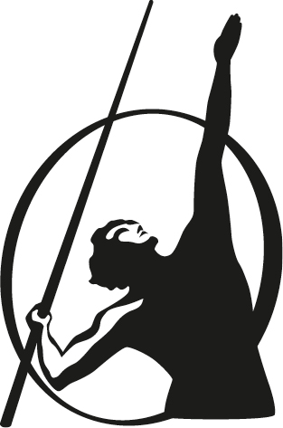
PORTFOLIO / PENGUIN
企鹅兰登书屋有限责任公司的出版品牌
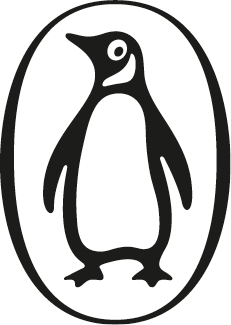
2023年同时在英国伦敦由Ebury Edge出版，Ebury Edge是Ebury的出版品牌。Ebury是企鹅兰登书屋集团公司的一部分。
2023年首次在美国由Portfolio出版
版权所有 © 2023 Steven Bartlett
企鹅兰登书屋支持版权。版权激发创造力，鼓励多元化声音，促进言论自由，并创造充满活力的文化。感谢您购买本书的授权版本，并通过不以任何形式复制、扫描或分发本书的任何部分来遵守版权法。您正在支持作家，并允许企鹅兰登书屋继续为每一位读者出版图书。
插图由Vyki Hendy绘制
[国会图书馆记录可在以下网址查阅] https://lccn.loc.gov/2023944176
ISBN 9780593715833 (精装版) ISBN 9780593715840 (电子书)
献给所有收听和观看《CEO日记》的人！
感谢你们让我们实现了我们从未有过的最伟大梦想。
[介绍：我有什么资格写这本书？]
[1. 按正确顺序填满你的五个桶]
[2. 要掌握它，你必须创造教授它的义务]
[3. 你永远不能反对]
[4. 你无法选择自己相信什么]
[5. 你必须倾向于奇特行为]
[6. 问，不要说——问题/行为效应]
[7. 永远不要妥协你的自我故事]
[8. 永远不要对抗坏习惯]
[9. 始终优先考虑你的第一基础]
[10. 无用的荒谬会比有用的实用性更能定义你]
[11. 不惜一切代价避免墙纸效应]
[12. 你必须惹恼一些人]
[13. 先射击你的心理登月计划]
[14. 摩擦可以创造价值]
[15. 框架比图片更重要]
[16. 利用金发女孩原理]
[17. 让他们尝试，他们就会购买]
[18. 为前五秒而战]
[19. 你必须关注小事]
[20. 现在的小失误会在以后造成大失误]
[21. 你必须在失败上超越竞争对手]
[22. 你必须成为A计划思考者]
[23. 不要做鸵鸟]
[24. 你必须让压力成为你的特权]
[25. 消极显现的力量]
[26. 你的技能毫无价值，但你的背景很有价值]
[27. 纪律方程式：死亡、时间和纪律！]
[28. 问谁而不是问如何]
[29. 创造一种狂热心态]
[30. 建立优秀团队的三个标准]
[31. 利用进步的力量]
[32. 你必须成为一个不一致的领导者]
我曾担任四家行业领先公司的CEO、创始人、联合创始人或董事会成员，这些公司在各自的巅峰时期累计估值超过10亿美元。
我目前是Flight Story（一家创新营销机构）、thirdweb（一家软件公司）的创始人，以及Flight Fund投资基金的创始人。
我的公司在世界各个角落雇用了数千名员工。我为我的公司筹集了近1亿美元的投资。
我是40多家公司的投资者。我在四家公司担任董事，其中两家目前在各自行业处于前沿地位，而我只有30岁。
作为两个在各自市场中崛起到行业顶端的成功营销集团的创始人，这意味着我职业生涯的大部分时间都在董事会会议室中度过，与世界最大品牌的CEO、CMO和领导者合作并为他们提供建议，指导他们如何进行营销以及如何在网上讲述他们的故事；优步、苹果、可口可乐、耐克、亚马逊、TikTok、罗技，你能说出的品牌——他们都是我的客户。
此外，在过去四年中，我一直在采访来自商业、体育、娱乐和学术界的世界最成功人士。我有700小时的录音，在这些录音中我采访了你最喜欢的作者、演员和CMO；世界领先的神经科学家；你最喜欢的运动队队长；你最喜欢的运动队经理；你每天使用的数十亿美元公司的CEO；以及更多世界领先的心理学家，多到我无法一一列举。
我以播客《CEO日记》(The Diary Of A CEO)的形式发布了这些对话，这个播客很快成为欧洲下载量最多的播客，也是美国、爱尔兰、澳大利亚和中东地区顶级商业播客之一。它可以说是目前世界上增长最快的播客之一，仅去年一年听众数量就增长了825%。
我很幸运能够接触到一些独特的经历，几年前我突然意识到我获得了多少有价值和强大的信息——而地球上只有少数人能够获得这些信息。我也意识到，在我所见证的所有成功和失败的核心，无论是在我自己的创业历程中还是在我进行的数百次采访中，都有一套能够经受时间考验、适用于任何行业、可以被任何试图建造伟大事物或成为伟大人物的人使用的定律。
这不是一本关于商业战略的书。战略像季节一样变化。这是一本关于更持久东西的书。这是一本关于建造伟大事物和成为伟大自己的基本、持久定律的书。
这些定律可以被任何人使用，无论你的行业或职业如何。
这些定律现在有效，100年后也会有效。
这些定律根植于心理学、科学和数百年的研究，为了进一步验证这些定律，我调查了各大洲、各年龄组和各专业的数万人。
这本书的设计基于五个核心信念：
我相信大多数书都比必要的要长。
我相信大多数书都比必要的要复杂。
我相信图片胜过千言万语。
我相信故事比数据更强大，但两者都很重要。
我相信细致入微，真相往往在中间某处。
简而言之，它旨在体现一句常被归因于爱因斯坦的话：
“一切都应该尽可能简单，但不能过于简单。”
对我来说，这意味着给你每个定律的基本真理和理解，用恰好必要的词汇数量来做到这一点——不多不少——并使用强有力的图像和令人难以置信的真实故事来让关键点生动起来。
成为伟大并建造伟大的事物，需要在四个支柱内精通。我称这些为伟大的四大支柱。
正如莱奥纳多·达·芬奇所断言的：“一个人不可能拥有比掌控自己更小或更大的精通；你永远不会拥有比掌控自己更大或更小的支配权；你成功的高度由你的自我掌控来衡量，你失败的深度由你的自我放弃来衡量。那些无法建立对自己的支配权的人，将无法支配他人。”
这个支柱关乎你。你的自我意识、自我控制、自我关怀、自我行为、自尊和自我故事。自我是我们能够直接控制的唯一事物；掌控它（这绝非易事）就是掌控你的整个世界。
阻挡你前进道路的一切都是人。科学、心理学和历史表明，没有任何图表、数据或信息比一个真正伟大的故事更有机会积极影响那些人。
故事是任何领导者能够装备自己的最强大武器——它们是人性的货币。那些讲述迷人、鼓舞人心、充满情感故事的人统治着世界。
这个支柱关于讲故事以及如何利用讲故事的法则来说服那些阻挡你道路的人类跟随你、向你购买、相信你、信任你、点击、行动、听你说话并理解你。
在商业、体育和学术界，个人的人生哲学是预测他们现在和未来行为方式的最大指标——如果你了解某人的哲学或信念，你就能准确预测他们在任何情况下的行为方式。
这个支柱关于伟大人物所信奉和践行的个人及职业哲学，以及这些哲学如何导致通向伟大的行为。你的哲学是指导你行为的信念、价值观或原则的集合——它们是支撑你行动的基本信念。
“公司”这个词的定义是”一群人”；从本质上讲，每个公司、项目或组织都只是一群人。组织产生的一切，无论好坏，都源于你这群人成员的思想。你工作中最重要的成功因素是你选择与谁共事。
我从未见过有人在没有一群人的情况下建立伟大的公司、项目或组织，我也从未见过有人在没有一群人支持的情况下达到个人伟大。
这个支柱关于如何组建并从你的团队中获得最佳表现。仅仅组建任何一群人是不够的；要让你的团队成为真正伟大的团队，你需要合适的人，由合适的文化结合在一起。当你有由伟大文化结合的伟大人才时，整个团队就会变得比各部分之和更伟大。当1+1=3时，伟大的事情就会发生。
按正确顺序填满你的五个桶
这个法则解释了决定你人类潜能的五个桶，如何填满它们，以及至关重要的是，你应该按什么顺序填满它们。
我的朋友大卫在家门前的花园里，享受着他的晨间意式浓缩咖啡，这时一个汗流浃背、看起来困惑、气喘吁吁、穿着疲惫运动服的男人慢慢向他跑来。
这个慢跑的男人在跑步中停了下来，一边努力喘气一边向我的朋友大卫打招呼。他说了一个难以理解的笑话，似乎为此疯狂地笑了起来，然后开始不规律地谈论他正在建造的宇宙飞船、他要放进猴子大脑的微芯片，以及他要创造的AI驱动的家用机器人。
片刻后，这个慢跑的男人向大卫告别，继续他缓慢、汗流浃背的街头跋涉。
那个汗流浃背的慢跑男人就是埃隆·马斯克(Elon Musk)。特斯拉、SpaceX、Neuralink、OpenAI、Paypal、Zip2和The Boring Company的亿万富翁创始人。
在我揭示这个汗流浃背慢跑男人的身份之前，你可能会理解地认为他是当地精神病院的逃犯，或者患有某种精神病发作。但一旦你听到他的名字，所有那些非凡的上述雄心壮志突然变得可信了。
如此可信，事实上，当埃隆向世界讲述他的雄心壮志时，人们会盲目地拿出数十亿美元的子女遗产来支持他，他们会辞去工作并搬迁去为他工作，他们会在他甚至还没创造出产品之前就预订他的产品。
这是因为埃隆已经填满了他的五个桶——事实上，我遇到的所有拥有建造真正伟大事物力量的人都有五个满溢的桶。
这五个桶的总和就是你职业潜能的总和。这些桶的饱满程度将决定你的梦想对你自己以及听到它们的人来说有多大、多可信和多可实现。
那些取得伟大成就的人花费了数年，通常是数十年的时间，向这五个桶中倾注。有幸拥有五个满桶的人拥有改变世界所需的全部潜能。
当你在寻求就业、选择下一本想读的书或决定追求什么梦想时，你必须意识到你的桶有多满。
你知道什么（你的知识）
你能做什么（你的技能）
你认识谁（你的人脉网络）
你拥有什么（你的资源）
世界对你的看法（你的声誉）
在我职业生涯的开始，作为一个18岁的初创公司创始人，我被一个似乎无法摆脱的道德问题所困扰：将我的时间和精力专注于建立一家公司（最终会让我致富）是否比回到我出生的非洲并将我的时间和精力投资于拯救哪怕一个生命更崇高的追求？
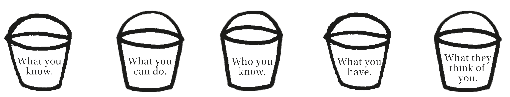
这个问题在我心中萦绕了几年，直到在纽约的一次偶然相遇给了我急需的清晰认识。我参加了由世界知名古鲁(guru)、僧侣和精神领袖Radhanath Swami在纽约举办的活动。
当我挤进大师着迷信徒的人海中时，他们目光如星、全神贯注地倾听着他的每一句话，在完美的寂静中表达着赞赏，这位上师问人群中是否有人想向他提问。
我举起了手。上师示意我提出问题。我问道：“创业致富与回到非洲拯救生命相比，哪一个更崇高？”
上师凝视着我，仿佛能看透我灵魂深处。经过长时间一眨不眨的沉默后，他宣布道：“空桶无法倒水。”
从那一刻起近十年过去了，上师的话从未如此清晰。他告诉我要专注于填满自己的桶，因为拥有满桶的人能够按照自己的意愿积极地改变世界。
现在我已经建立了几家大公司，与世界上最大的组织合作过，成为了千万富翁，管理过数千名员工，阅读了数百本书籍，并花费700小时采访世界上最成功的人士，我的桶已经足够满了。正因如此，我现在拥有知识、技能、人脉、资源和声誉来帮助全世界数百万人，这正是我打算用余生去做的事情——通过我的慈善工作、捐赠、创建的组织、构建的媒体公司以及我正在筹建的学校。
这五个桶是相互关联的——填满一个有助于填满另一个——它们通常按照从左到右的顺序被填满。
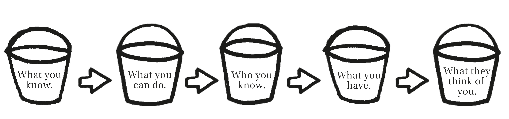
我们通常从获得知识（学校、大学等）开始我们的职业生涯，当这些知识被应用时，我们称之为技能。当你拥有知识和技能时，你对他人在职业上变得有价值，你的人脉就会增长。因此，当你拥有知识、技能和人脉时，你获得资源的机会就会扩大，一旦你拥有知识、技能、有价值的人脉和资源，你无疑会赢得声誉。
牢记这五个桶及其相互关联的关系，很明显对第一个桶（知识）的投资是你能做的收益最高的投资。因为当这些知识被应用（技能）时，它必然会连锁反应填满你剩余的桶。
如果你真正理解这一点，你就会明白一份给你略多现金（资源）但给你远少知识和技能的工作，实际上是一份薪酬更低的工作。
阻碍我们按照这个逻辑行动的力量通常是自我。我们的自我有着惊人的能力说服我们跳过前两个桶——说服我们仅仅为了更多钱（桶4）或职位头衔、地位或声誉（桶5）而接受一份工作，却没有在该角色中成功所需的知识（桶1）或技能（桶2）。
当我们屈服于这种诱惑时，我们是在薄弱的基础上建设我们的职业生涯。这些短期决策——你无法延迟满足、保持耐心并投资于前两个桶——最终会追上你。
2017年，一位非常有才华的21岁员工理查德走进我的办公室，告诉我他有些消息要分享。他告诉我，他得到了一个在地球另一端的新营销公司担任CEO的工作机会，他想离开我的公司——他在这里一直发展得很好——去接受这个职位。他告诉我这个职位给他巨大的加薪（几乎是我们付给他的两倍）、股权包以及在纽约市生活的机会——这与他成长的沉闷村庄相去甚远，也明显比他在我公司工作的英格兰曼彻斯特更高级。
坦率地说，我不相信他。我无法理解一个合法企业会给一个没有管理经验的初级员工提供如此重要的职位。
尽管如此，我接受了他的说法，并告诉他我们会支持他从我们公司的过渡。
结果证明我错了——理查德说的是真话。这个工作机会确实存在，一个月后他成为了公司的CEO，搬到纽约，开始了他在大苹果城作为C级高管的新生活，领导着一个超过20人的团队，在一个快速增长的营销初创公司中。
不幸的是，故事并未在此结束；正如生活后来教导我和理查德的那样，如果你想要长期、可持续的结果，就无法跳过知识和技能这前两个桶。任何这样做的尝试都等同于在沙子上建房子。
在18个月内，理查德加入的那家曾经前景光明的公司倒闭了，失去了关键员工，资金耗尽，并因管理实践问题而陷入争议。公司关闭后，理查德失业了，远离家乡，在我们曾经雇用他的同一个行业中寻找一个新的、更初级的职位。
在决定人生道路、接受哪份工作或在哪里投资你的业余时间时，记住知识在应用时（技能）就是力量。优先填满那前两个桶，你的基础就会具有长期可持续性，足以让你获胜，无论生活的构造板块如何在你脚下移动和震动。
我将职业地震定义为对你产生不利影响的不可预测的职业事件。这可能是任何事情：颠覆整个行业的技术创新、被雇主解雇，或者如果你是创始人，你的公司倒闭。
任何这样的专业地震都永远无法清空只有两个桶——它可以带走你的人脉，可以夺走你的资源，甚至可以影响你的声誉，但它永远无法夺走你的知识，永远无法让你忘记你的技能。
这前两个桶是你的长寿之本，是你的基础，也是预测你未来最清晰的指标。
应用知识就是技能，你越能扩展和应用你的知识，你在世界上创造的价值就越大。这种价值将以不断增长的人脉、丰富的资源和稳固的声誉来回报你。确保你以正确的顺序填满你的桶。
那些囤积黄金的人只能富有一时。
那些囤积知识和技能的人能够富有一生。
真正的繁荣是你所知道的和你能够做到的。
要掌握它，你必须创造教授它的义务
这个法则解释了世界上最著名的知识分子、作家和哲学家用来成为各自领域大师的简单技巧，以及你如何运用它来发展任何技能、掌握任何主题并建立受众。
那天晚上感觉整个地球的人口都聚集起来看我在台上融化，但实际上只是我中学的一些同学、他们的父母和几位老师。
我当时14岁，被安排在学校的考试颁奖晚会上做一些结束语。当我走上台时，礼堂陷入了期待的寂静。
我就这样站在那里，僵住了，恐惧而无言，度过了任何人都经历过的最漫长的一分钟之一，盯着我湿冷紧张的双手中颤抖的那张纸，濒临尿裤子的边缘，体验着人们所说的”怯场”。
我原本计划要讲的稿子抖得如此厉害，以至于我看不清上面的字。最终我脱口而出一些即兴的、陈词滥调的、无意义的话，然后冲下台跑出门去，仿佛身后有行刑队在追赶我。
从那个痛苦的日子快进十年，我一年有50周在世界各地的舞台上演讲——我在圣保罗与巴拉克·奥巴马一起在数万人面前做主题演讲，我在巴塞罗那售罄的体育馆里演讲，我在英国巡回演讲，在从基辅到德克萨斯到米兰的各种节庆活动上演讲。
我从一个公共演讲的灾难，变成与一些有史以来最优秀的演讲者并肩而立，有一个简单的法则是我认为促成这种转变的原因。
这个法则不仅仅负责我在台上的镇定、表现和表达能力（我的技能），它也是我在台上有有趣内容可以分享的原因（我的知识）：
我创造了教授的义务。
已故的精神领袖Yogi Bhajan曾经说过，“如果你想学习某样东西，就去阅读它。如果你想理解某样东西，就去写下它。如果你想掌握某样东西，就去教授它。”
在21岁时，我向自己承诺每天晚上7点我会写一条推文或制作一个视频传达一个想法，然后在晚上8点发布到网上。
在我生活中为了推进知识和技能——为了填满我的前两个桶——所做的所有事情中，这是产生最大影响的事情。毫不夸张地说，它完全改变了我人生的轨迹，因此这是我最强烈建议给任何想成为更好的思考者、演讲者、作家或内容创作者的人的建议。
这里的关键因素是我让学习，然后写作/录制并在网上分享成为一种日常义务，而不仅仅是一种兴趣。
在创造这个义务后不久，我从受众的评论和社交平台的分析数据中得到反馈；这帮助我改进，反过来，创造了一个纯粹因为这个日常想法而关注我的社区。这开始时只有几十个人，近十年后这个社区已经发展到所有渠道近1000万关注者。
从我分享的第一个想法开始，我与我的受众创建了一个”社会契约”——本质上是对那些专门为了这个日常想法而关注我的人的社会义务——这激励我继续发布内容，并给了我一些可以失去的东西——他们的关注和我的声誉——如果我停止的话。
有东西可以失去从根本上就是义务的本质，而有东西可以失去有时被称为拥有”利害攸关”。
“利害攸关”是一个重要的心理工具，如果你想在生活的任何领域加速你的学习曲线，就要加以利用。利害攸关通过建立更深层的心理激励机制来提高你学习的赌注以执行某种行为。这种”利害”可以是从金钱到个人公开承诺的任何东西。
你想了解某家特定的公司？买几股该公司的股票。你想学习Web 3.0？买一个NFT。如果你想坚持去健身房，和朋友们建一个WhatsApp群，每天在里面分享你的锻炼情况。在这三个例子中，金钱或社交货币都面临风险。
“皮肤在游戏中”(skin in the game)之所以有效，是因为多项全球研究表明，人类行为更多地受到避免损失的动机驱动，而非追求收益，这被科学家称为”损失厌恶”。
给自己一些可以失去的东西。
所以，如果你想掌握某样东西，就公开地、持续地去做。发布你的书面想法会迫使你更频繁地学习，写得更清晰。发布视频会迫使你提高演讲技巧，清晰表达思想。在台上分享想法会教你如何吸引观众，讲述引人入胜的故事。在生活的任何领域，公开地做，并创造一种义务迫使你持续地做，都会让你达到精通。
这种义务最有价值的要素之一是必须将我想分享的任何想法提炼成140字符的精华，以便能够符合推文的限制。
能够简化一个想法并成功地与他人分享既是理解它的路径，也是你确实理解它的证明。我们掩饰对任何想法缺乏理解的方式之一就是使用更多的词汇、更大的词汇和不必要的词汇。
将想法简化到本质的挑战通常被称为费曼技巧，以著名的美国科学家理查德·费曼命名。费曼因其在量子电动力学方面的开创性工作获得了1965年诺贝尔奖。他天赋异禀，能用连孩子都能理解的简单语言解释最复杂、最令人困惑的想法。
“我无法将它简化到新生水平。这意味着我们真的不理解它。”
理查德·费曼
费曼技巧是自我发展的强大心智模型。它迫使你剥离不必要的复杂性，将概念提炼到最纯粹的本质，并对你想要掌握的任何学科发展出丰富而深入的理解。
费曼技巧遵循几个关键步骤，基于我自己的学习经验，我对其进行了简化和更新：
首先你必须识别你想要理解的主题，彻底研究它并从各个方向掌握它。
其次，你应该写下这个想法，就像你在教给孩子一样；使用简单的词汇、更少的词汇和简单的概念。
将你的想法传达给其他人；在网上发布，在你的博客上发布，在舞台上分享，甚至在餐桌上分享。选择任何能得到清晰反馈的媒介。
回顾反馈；人们是否从你的解释中理解了这个概念？在你向他们解释后，他们能向你解释吗？如果不能，回到第1步；如果能，继续前进。
当我们回顾历史时，这是我遇到或采访过的每位伟大演说家、知名作家和杰出知识分子的共同点。
当展望(Prospect)杂志发布他们的现代100大知识分子名单时，名单上的每个名字都遵循了这条法则。
当我研究历史上杰出的哲学家时，他们每一个都体现并且往往是这条法则的坚定倡导者。
在他们生命中的某个时刻，通过意图或偶然，他们创造了一种思考、写作和分享想法的义务，持续不断。
无论是现代领先作家如詹姆斯·克利尔(James Clear)、马尔科姆·格拉德威尔(Malcolm Gladwell)或西蒙·西内克(Simon Sinek)，他们写推文、在线博客和创作社交媒体视频，还是古代哲学家如亚里士多德、柏拉图和孔子，他们在纸草卷轴上写作并在舞台上演讲，他们都遵守这条关键法则；他们所有人都创造了教学的义务，反过来他们成为了知识和传递的大师。
“在任何课堂上学到最多的人是老师。”
詹姆斯·克利尔
学习更多，简化更多，分享更多。你的坚持将促进你的进步，反馈将完善你的技能，遵循这条法则将通向精通。
你不会因为能够保留知识而成为大师。
当你能够释放知识时，你才成为大师。
你绝不能不同意
这条法则将使你成为沟通、谈判、冲突解决、赢得争论、被听到和改变人们想法的大师。它也解释了为什么你的大多数争论从来都不富有成效。
在我童年的大部分时间里，我目睹了母亲对着坐在电视机前的父亲大声吼叫，而父亲显然完全无视她的存在。这些震耳欲聋的尖叫马拉松是我之前从未目睹过的，之后也再没有见过。
她可以对着他吼叫五六个小时——关于同一件事——使用同样的话语，音量和热情似乎没有任何减少。偶尔，我父亲可能会试着反驳一下，当他不可避免地无法成功回击时，他要么继续无视她，要么逃到房子的另一部分，把自己锁在卧室里，或者跳上车开走。
我花了20年才意识到，我从他那里学会了这套完全相同的冲突解决策略，当时我躺在床上，凌晨2点，愤怒的女友反复纠缠我，为某件让她不高兴的事情而责备我。我用”我不同意”来反驳她，并试图做出令人信服的反驳论证。不用说，我失败了。就像往篝火上泼汽油一样，她继续以更大的音量对我吼叫，提出同样的观点，使用完全相同的话语。
最终，我起身试图离开，她跟着我，所以我把自己锁在步入式衣橱里，在那里待到了将近凌晨5点，被人隔着门吼叫——关于同一件事，使用同样的话语，就像一台坏掉的唱片机——音量和热情似乎没有任何减少。
她现在是我的前女友；毫不意外，那段关系没有持续下去。
事实是，在你生活中的每一次人际冲突中——商业的、浪漫的或友谊的——沟通既是问题所在，也是解决方案。
你可以通过每次冲突是让关系更强还是更弱来预测任何关系的长期健康状况。
健康的冲突会加强关系，因为参与者在对抗问题；不健康的冲突会削弱关系，因为参与者在相互对抗。
我与伦敦大学学院和麻省理工学院的认知神经科学教授Tali Sharot坐下来交流，想了解大脑科学能够教给我们关于有效沟通法则的知识，她与我分享的内容永远改变了我的个人生活、恋爱关系和商业谈判。
Sharot和她的团队发表在《自然神经科学》上的研究，记录了志愿者在争论过程中的大脑活动，以了解他们头脑中正在发生什么。
实验基于让42个人分成对，进行财务评估。每对人躺在由玻璃墙分隔的脑成像扫描仪中。他们对实验的反应被记录下来。他们被展示房地产图片，并被要求在各自的对子内单独猜测其价值，并对其估价的准确性下注。每个志愿者都能在屏幕上看到其伙伴的估价。
当这对人对估价达成一致时，他们各自对其准确性下了更高的赌注，监测他们大脑活动的研究人员看到他们的大脑亮起，表明他们在认知上更具接受性和开放性。然而，如果他们对估价产生分歧，他们的大脑似乎冻结并关闭，导致他们对对方的意见关闭，并减少对该意见的重视。
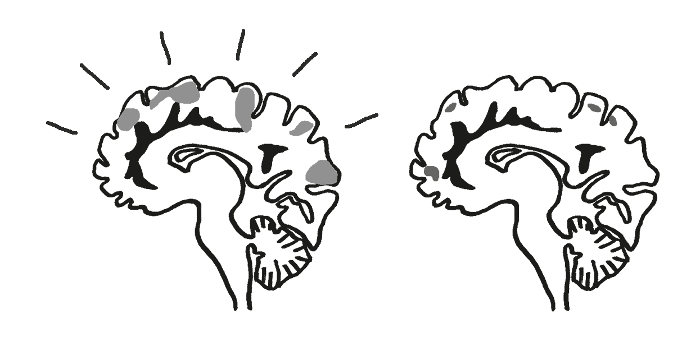
Sharot的发现揭示了政治话语争议领域的一些最新趋势。以气候变化为例：尽管科学家在过去十年中提出了越来越多不可辩驳的证据表明气候变化是人为造成的，但皮尤研究中心进行的一项调查显示，相信科学证据的美国共和党人数量在同一个十年期间实际上减少了。愤怒的争论，无论有多少证据，显然不起作用。
那么，如果我们想增加被持相反观点的人听到的机会，需要做什么呢？根据Sharot的观点，如果你想让某人的大脑保持亮起并接受你的观点，你绝不能以不同意的声明开始你的回应。
当你发现自己与某人意见不合时，不惜一切代价避免情绪冲动，不要以”我不同意”或”你错了”开始你的回应，而是用你们的共同点、你们同意的部分，以及你能理解的他们论证的部分来引出你的反驳。
任何经过仔细推理的逻辑论证的力量，当你以分歧开头时，都不太可能被认识到——无论你有多少证据或你客观上多么正确。
相反，如果我们从一致的地方、从共同点开始，我们就增加了我们论证的力量、逻辑的准确性和证据的分量被接受的机会。
这第三条法则——永不反对——是让你成为有效谈判者、演讲者、销售员、商业领袖、作家——以及伴侣的关键技能。
当我采访Julian Treasure——这位TED演讲被观看了1亿次的演讲和沟通教练，以及Paul Brunson——被称为”爱情医生”的配对和关系专家时，他们都解释说，成为优秀沟通者、谈话者或伴侣的艺术首先是倾听，让对方感到”被听到”，然后确保你以让他们感到”被理解”的方式回应。
Tali Sharot的神经科学研究现在提供了明确的科学证据，表明为什么让人感到”被倾听和理解”的方法在改变某人的想法方面如此重要。毫不奇怪，最有可能改变我们想法的人是那些在98%的话题上与我们意见一致的人——我们感到他们从根本上理解我们，所以我们更愿意倾听他们的话。
在谈判、辩论或激烈争论中，试着记住改变某人想法的关键是找到一个共同的信念或动机，这将让他们的大脑对你的观点保持开放。
我们的话语应该是通向理解的桥梁，而不是连接的障碍。
少一些不同意，多一些理解。
你无法选择自己相信什么
这个法则将教会你如何改变你拥有的任何信念——无论是对自己的信念、对他人的信念还是对世界的信念——同时也向你展示如何改变他人顽固的信念。
想想一个你绝对爱的人：你的母亲、你的父亲、你的伴侣、你的狗——你生命中最重要的人（或动物）。
现在想象他们被绑在椅子上，被一个咄咄逼人的恐怖分子用枪指着。
现在想象这个恐怖分子对你说：“如果你现在不相信我是耶稣基督，我就扣动扳机杀了他们！”
你会怎么做？
事实是，你最多只能撒谎——最多只能告诉他们你相信他们是耶稣基督，希望你的爱人能够幸免。但你无法真正让自己相信这一点。
这个思想实验阐明了关于我们信念真实本质的一个深刻而有争议的观点。在我的假设情景中，当一切都岌岌可危时，你仍然无法选择相信你不相信的东西。那么，是什么让你认为你可以”选择”你的任何信念呢？
为了进一步调查这个概念，我调查了1000人，并问了他们所有人以下问题：“你认为你选择自己的信念吗？”令人难以置信的是，857人（85.7%）说他们确实如此。
在调查的下一页，当我问人们是否能够真正相信一个用枪指着他们爱人的恐怖分子是耶稣基督，如果这意味着能够拯救他们爱人的生命时，98%的人承认他们无法选择那种信念——他们最多只能撒谎。
你对自己持有的基本信念，你对他人持有的基本信念，你对世界持有的基本信念——你没有”选择”其中任何一个。
当人们听到这个时，他们往往会有一种本能的负面反应，因为这听起来令人沮丧，攻击了我们的”自由意志”、控制和独立感。如果我无法选择一个信念，我怎么能改变一个信念呢？这是否注定我要保持我目前对世界、他人和自己的信念？
谢天谢地，不是的。
你的生活证明了你的信念确实在不断变化和发展——我假设你不再相信圣诞老人了？
社会也继续以越来越快的速度改变其信念；在1700年代，人们认为烟草是健康的，医生会向溺水者的肛门吹烟草烟雾，试图复活他们；在1800年代，我们相信阴蒂高潮是精神错乱的征象，医生会对有这种情况的人进行医疗治疗；直到1970年代，人们还相信外星人通过在美国中部农场压平我们的庄稼来向我们发送编码信息；中世纪的医生从他们的屁股里掏出治疗方法，字面意思——粪便被认为是治疗从头痛到癫痫等一切疾病的良药。
谢天谢地，信念会改变。
我们的大脑消耗大量能量，因此进化出了保存能量以生存的策略。因为大脑的主要目的之一是通过发现模式并基于这些模式做出假设来进行预测，它必须尽可能高效地在尽可能短的时间内完成这项工作。信念使大脑能够快速做出这样的预测。
拥有顽固的信念对人类来说是一个有用的生存工具，因为信念驱动行为——你的祖先，他们顽固地坚持狮子是危险的、火是热的、深水应该避免的信念，因为这些信念而存活得足够长，有了拥有同样顽固性的后代。
回到恐怖分子在死亡威胁下劫持你爱人的例子；现在想象恐怖分子拿起一杯水并将其变成酒（耶稣以此而闻名的行为）。这会改变你对恐怖分子的信念吗？你现在会相信恐怖分子实际上是耶稣基督吗？
在我的调查中，77%的人说这足以说服他们恐怖分子实际上是耶稣基督，总共82%的人说他们对恐怖分子的信念会改变——目睹某人将水变成酒的行为是足够强有力的证据，足以让他们改变信念。
这个思想实验及相应的调查揭示了我们所有信念本质上的一个基本真理：你所相信的事物根本上基于某种形式的原始证据。然而，科学研究反复证明，这些证据客观上是真是假实际上并不重要——我们主观上接受证据为真是基于我们的经历和偏见。
仍有30万美国人相信地球是平的；在最近的Ipsos调查中，21%的美国成年人说他们相信圣诞老人是真实存在的；令人不安的是，有相当数量的人相信查理国王是吸血鬼；三分之一的美国人相信大脚怪存在；四分之一的苏格兰人相信因弗内斯附近的湖中住着一只巨大的怪物。
要改变他们的信念，正如我们在第三法则中看到的，仅仅告诉他们是错的是不行的。向地球平面论者展示一张地球是圆的合法图片也不起作用，尽管励志教练可能会这样说，告诉一个七岁时被恶毒的操场霸凌者摧毁了信心（非常强的证据）的人简单地相信自己或在镜子前重复肯定语句，也不会改变他们对自己的潜在信念。
仅仅向地球平面论者展示一张NASA从太空拍摄的球形地球照片是不起作用的，因为要相信他们所看到的，他们必须不仅信任这张照片，还要信任照片来源的可信度——NASA。地球平面论者两者都不信任；他们相信NASA是欺诈性的，宇航员是演员，科学界也参与其中。
在罗伯特·西奥迪尼博士的著名著作《影响力》中，他解释说，如果我们信任某人在某个问题上的权威性——如果利昂内尔·梅西告诉我们阿迪达斯足球鞋比耐克更好，如果私人教练告诉我们举重姿势不正确，或者如果医生告诉我们需要吃药——我们很可能会服从他们的权威，接受他们的信念并按他们说的做。
“对于我们一些最重要的信念，我们根本没有任何证据，除了我们爱和信任的人持有这些信念。考虑到我们知道的如此之少，我们对自己信念的信心是荒谬的——但这也是必要的。”
2002年诺贝尔奖得主丹尼尔·卡尼曼
权威人物是信念改变的强大力量，但最强大的力量是来自我们自己五种感官的第一手证据。正如俗话所说，眼见为实。因为地球平面论社区对科学、天文学以及任何合格的人都如此不信任，你能颠覆他们顽固信念的唯一可想象的方法就是把他们送到太空让他们自己看看。
这种需要亲眼看到证据的需求解释了为什么如此多疯狂的阴谋论经受住了时间的考验——为什么人们否认气候变化，相信地球是平的，质疑疫苗的有效性——这些东西对我们大多数人来说是不可能亲自看到的。
同样，一个对自己演讲能力缺乏信心的人不太可能仅仅因为他们的母亲告诉他们是一个好演讲者就变得自信——他们需要自己获得第一手证据，通过在台上演讲并从他们信任的无偏见来源获得积极反馈。
我们相信自己和自己的眼睛是可信的来源，这使得科学家让我们的五种感官参与进来以使他们的见解为我们所理解变得重要。基于这一原则，气候变化教育工作者现在正试图将关于气候变化发生和速度的科学见解转化为”本地课程”，例如展示气候变化对我们当地事物的影响，这样我们就可以去亲自看看。
我问塔利·沙洛特（我们在前一个法则中遇到过她）：“我们如何改变自己或别人的信念？”她花了多年时间研究并进行多项关于信念为什么存在、为什么难以改变以及如何改变它们的研究。
她告诉我，大脑会将任何新证据与它存储的当前证据一起考虑。所以，如果我告诉你我在天空中看到了一只粉红色的大象在飞，你的大脑会将这个新证据与你现有的关于大象不是粉红色的且不会飞的证据进行比较，并可能拒绝它。
然而，如果我告诉一个三岁的孩子我在天空中看到了一只粉红色的大象在飞，他们可能会相信我，因为他们还没有形成关于大象、航空和物理定律的强烈对立信念。
沙洛特断言，有四个因素决定一条新证据是否会改变现有信念：
一个人当前的证据。
他们对当前证据的信心。
新证据。
他们对新证据的信心。
正如我们从广泛讨论的称为”确认偏误”的现象中学到的，即人类倾向于以确认或支持他们现有信念或价值观的方式搜索、偏好和回忆信息——新证据距离他们当前信念越远，就越不可能改变他们的想法。
所有这些都意味着根深蒂固的错误信念很难改变，但有一个重要的例外：当反驳证据恰好是你想听到的时候，你更有可能改变想法。例如，在2011年的一项研究中，人们被告知别人认为他们比自己想象的要有魅力得多，他们很乐意改变自己的自我认知。在2016年的一项研究中，人们了解到他们的基因表明他们对疾病的抵抗力比想象中要强得多，参与者再次迅速改变了他们的信念。
那么政治方面呢？回到2016年8月，900名美国公民被要求通过在从克林顿到特朗普的刻度上放置一个小箭头来预测总统选举结果。所以，如果你认为克林顿很可能获胜，你就把箭头放在克林顿旁边。如果你认为胜算是五五开，你就把箭头放在中间，以此类推。他们首先被问到：“你希望谁获胜？”其中50%的人说他们希望克林顿获胜，50%的人说他们希望特朗普获胜。
当他们被问及他们认为谁会获胜时，两组支持者都把箭头放在最接近克林顿的位置——表明他们相信她会获胜。然后引入了一项新的民调，预测特朗普会获胜。每个人再次被问及他们认为谁会获胜。这项新民调改变了他们的预测吗？
确实改变了。但它主要改变了特朗普支持者的预测——因为这正是他们想听到的。他们为新民调暗示特朗普获胜而欣喜若狂，并迅速改变了他们的预测。
克林顿的支持者没有太多改变他们的预测，他们中的许多人完全忽略了新民调。
Tali Sharot总结道，为了改变信念，“秘诀是要顺应我们大脑的运作方式，而不是与之对抗”，而大多数人都试图对抗它并且失败了。
不要试图打破或争论某人现有的证据；相反，专注于植入全新的证据，并确保你突出了这个新证据对他们产生的极其积极的影响。
一个例子是父母对腮腺炎、麻疹和风疹(MMR)疫苗与自闭症之间错误联系的反应，这个联系来自1998年发表的一篇现已被驳斥的期刊文章。随着文章理论的传播，许多父母拒绝给孩子接种疫苗，并固执地坚持他们的信念。最终，一组研究人员改变了他们的想法，不是通过试图打破他们现有的信念——他们根本没有关注他们现有的信念——而是通过向父母提供关于疫苗非常积极益处的新信息——关于它如何预防孩子遭遇致命疾病的真实信息。这奏效了——父母同意让他们的孩子接种疫苗。
有趣的是，当你攻击人们或试图用数据说服他们时，人们不会降低对信念的坚信程度，但当被要求解释或分析他们信念的细节时，他们会失去坚信。这是认知行为治疗师熟知的技巧。
《纽约客》的Elizabeth Kolbert描述了在耶鲁大学进行的一项研究，研究生被要求评估他们对家中马桶的理解程度。然后他们被要求写出设备工作原理的详细、逐步解释。一旦他们试图解释马桶的内部工作原理，他们被要求再次评估他们的理解程度。他们对马桶理解的信念显著下降。
在2012年进行的一项类似研究中，人们被问及他们对与医疗保健相关的政治提案的立场。正如Kolbert所描述的，“参与者被要求根据他们同意或不同意的强烈程度来评估他们的立场。接下来，他们被指示尽可能详细地解释实施每项提案的影响。大多数人在这一点上遇到了麻烦。”再次被要求评估他们的观点时，他们信念的坚信程度下降了，他们的同意或不同意变得不那么激烈。
要求某人解释支撑其强烈信念的细节和逻辑，是减少其坚信程度的极其有效的方法。这对限制性信念也有效。如果某人在自信方面有困难并认为自己毫无价值，让他们尽可能详细地解释为什么他们有这种感觉，并质疑他们的回应，是让他们放弃这种信念的有效方法。
正如你在第二定律中学到的，当我年轻时，我为严重的怯场而苦恼，这本身是由一系列限制性信念支撑的。告诉我”一切都会好起来”不足以改变我对舞台演讲、我如何表现以及会有什么反应的先入之见——我的信念太顽固了。
我舞台恐惧症最终消失的原因——现在当我在拥挤的会场演讲或进行电视直播时，我感到的紧张程度减少了99.9%——简单来说就是因为我继续在台上演讲。这样做逐渐给了我新的、积极的第一手证据，替代了我对自己台上能力的既有认知——我在台上说话越多，对这种新证据的信心就越强，随之而来的是，对自己无能的信念和由此产生的恐惧逐渐减少。
“做你害怕的事情，并坚持去做。这是迄今为止发现的征服恐惧最快速、最可靠的方法。”
戴尔·卡耐基
对我来说，这也许是关于信念改变以及如何增强一个人自信心最重要的基本真理——甚至包括你自己的；当一个人获得新的反驳证据时，信念就会改变，而且他们对这些证据有高度的主观信心。
如果你的朋友对自己有限制性信念，或者你对自己有限制性信念，改变这种信念的最好机会不是通过阅读自助书籍、励志名言或观看激励视频，而是通过走出你的舒适区，进入一个让那种限制性信念与新的第一手证据正面交锋的情境中。
这就是你如何改变甚至最顽固的信念。这就是我如何在12个月内从虔诚的宗教信徒变成不可知论者，如何在从童年到成年的转变中从缺乏自信变成相信自己，以及从一个害怕公开演讲的人变成在任何舞台上都拥有不可动摇的信心。
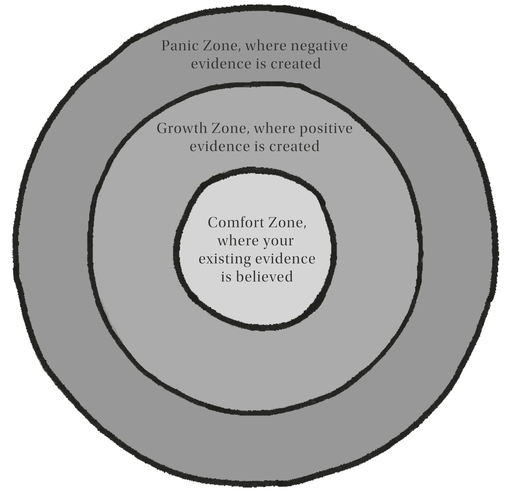
信念是顽固的，但它们是可塑的。要改变一个信念，一个人必须找到一种方法来获得令人信服的新证据，而且他们可以信任这些证据。如果这些新证据的来源与他们其他现有信念一致，他们更有可能相信这些新证据的有效性。提供积极结果的证据是最容易让人相信的证据。如果你质疑自己某个限制性信念的有效性和细节，你对它的确信程度就会减弱。如果你想改变某人的信念，不要攻击它，而要让他们直接见证积极的新证据，这些证据既能激励他们，又能抵消他们旧信念的负面影响。未受质疑的限制性信念是我们现在的自己和我们可能成为的自己之间的最大障碍。
停止告诉自己你没有资格、不够好或不值得。
当你开始做那些你没有资格做的事情时，成长就发生了。
这个法则造就了我建立的每一家成功公司——它教会你如何在我们生活的快速变化的世界中保持前沿地位，如何利用变化，以及如何避免被任何即将到来的技术革命甩在后面。
“人们喜爱音乐；这就是为什么我们将永远有生意可做。”
这是世界最大音乐商店之一的前CEO所说的不祥之言，当时他站在二楼阳台上俯视着繁忙的店面。
几年后，他的全球音乐商店倒闭了。
他说得对；人们确实喜爱音乐。但是他们不喜欢在雨中行进一小时，在繁忙的店面中穿行来获取一张塑料光盘，然后排队付款。
他误判了客户的需求：他们想要的是音乐，而不是CD。
苹果公司开发的数字音乐平台iTunes在2003年春天出现，让他那些购买光盘的客户能够获得他们想要的——音乐——而无需承受所有的不便。
据可靠消息，这位特定的CEO对数字音乐如此愤世嫉俗，以至于他甚至不愿意与他的高级领导团队就其引入或它所构成的威胁进行对话。
他的一位职业伙伴告诉我，他已经”退缩了”，因为他不理解它，他认为这个领域充满了盗版，而且不会直接影响人们对CD的喜爱。
我相信作家克利福德·斯托尔也”退缩了”，当他在1995年2月发表在《新闻周刊》上对互联网未来做出以下轻蔑的预测时：
我对这个最时髦且被过度销售的社区感到不安。远见者们看到了远程办公工作者、互动图书馆和多媒体课堂的未来。他们谈论电子市政会议和虚拟社区。商业和生意将从办公室和购物中心转移到网络和调制解调器上……胡说八道……事实是没有在线数据库能够取代你的日报。
《新闻周刊》最终停刊了他们的印刷杂志，将整个业务转移到了互联网上。
在1903年，一家领先银行的总裁在告诉亨利·福特——福特汽车公司的创始人——“马匹将一直存在，但汽车只是一个新奇事物——一种时尚”时，显然已经退缩了。
在1992年，英特尔CEO安迪·格鲁夫在说”每个人口袋里都有个人通讯设备的想法是被贪婪驱动的幻想”时，显然已经退缩了。
前微软CEO史蒂夫·鲍尔默在嘲笑苹果时确实表现出了倾向回避的态度，他说：“iPhone绝不可能获得任何重要的市场份额。”
19岁时，我在伦敦一个世界知名时尚品牌的漂亮办公室里参加了一次会议。那是2012年，社交媒体已经在消费者中流行起来，但品牌却滞后了——它们在新技术面前总是如此。
那天我的任务是说服该品牌的营销部门——特别是他们的营销总监——更认真地对待社交媒体——倾向参与——更具体地说是推出他们自己的社交媒体页面。我失败了。我遭到了斥责、嘲笑和解雇。我向其推介的营销总监明显很恐惧：“所以人们能够评论我们的帖子并批评我们？”他质疑道。“我不希望我们的品牌传播开来——我们如何控制这种情况？”他继续说道。“杂志广告对我们来说效果很好，而社交媒体太危险了。”他在我演示进行到一半时就结束了会议，不用说，他再也没有回电话给我。
我的公司后来越来越强大，可以说成为了该市场中最具影响力的营销公司。
而我那天拜访的那个品牌在2019年申请了破产。
正如我所定义的，倾向回避并不是”错误”——而是如此傲慢地确信自己是对的，以至于拒绝倾听、学习和关注新信息。
这不仅仅是傲慢的症状——不幸的是，这往往是人性的症状；人们会回避重要的、可能至关重要的信息，其心理原因在于一个经过充分研究的心理现象，被称为认知失调。
由美国心理学家莱昂·费斯廷格在1950年代提出的”认知失调”描述了当你的思想与行为冲突时所经历的紧张感。例如，作为吸烟者是失调的——这与吸烟极其有害的证据相冲突。为了解决这种紧张感，吸烟者必须要么戒烟，要么找到一种方法来合理化他们的行为。我们都能想到吸烟者使用的借口，从”我只是偶尔吸烟”到”还有比这对身体更糟糕的事情”到”我为什么不应该自由选择自己的行为？”
对费斯廷格来说，认知失调有助于解释为什么我们中的许多人都带着矛盾的想法或价值观生活。但它也可能阻止我们在应该改变想法时改变想法，即使这可能拯救职业生涯、工作、业务或生命。
研究表明，当我们遇到事实或证据时，认知失调对我们来说是最痛苦的，这些事实或证据会破坏或冲突我们对自己的看法，会削弱我们的身份认同和对自己的信心，或者以某种方式让我们感到受到威胁。
在商业中，任何过于僵化地固守意识形态的人可能都不会提供解决方案，因为解决问题通常需要足够的谦逊来摒弃你最初的假设，并倾听市场告诉你的内容。
公开声明你对某事的观点，就像英特尔CEO对手机的看法，或微软CEO对iPhone的看法一样，可能会为你的棺材钉上额外的钉子，因为一旦我们承诺了某个信念，我们的大脑就会不懈地努力证明我们是对的，即使我们明显是错的。
研究一次又一次地表明，一旦我们做出任何决定——我要投票给这个政党；我要在这个地区买房；我认为新冠肺炎很严重；不，我确信风险被夸大了——我们就会自动开始为其辩护和合理化。很快，我们最初的任何怀疑都会消失。
研究这一现象的美国心理学家埃利奥特·阿伦森著名地组建了一个由傲慢、无聊的人组成的讨论小组。一些参与者被要求经历艰难的选择过程；其他人则被允许立即加入，无需花费任何努力。那些被折腾的人报告说比那些简单被让进来的人更享受这个小组。阿伦森解释了这里发生的事情：每当我们在某事上投入时间、金钱或精力，而它最终完全浪费时间时，这就产生了失调，我们试图通过找到合理化我们糟糕决定的方法来减少这种失调。阿伦森的参与者无意识地专注于成为故意无聊小组一员可能有趣或至少可以忍受的方面。因此，在加入时投入很少努力的人失调感较少，更容易承认这是多么浪费时间。
不仅仅是那个时尚品牌的营销总监解雇了我。在我的社交媒体营销公司存在的前三年里，我们每天都受到攻击、指责和批评。
评论员称我们为”寄生虫”，说我们的业务是”时尚”，并预测我们会在”几个月内破产”。我记得在2015年安慰我泪流满面的联合创始人汉娜·安德森，当时BuzzFeed新闻写了一篇批判性文章质疑我们的品格、做法和可信度。
毫不意外的是，攻击总是来自”传统”媒体和营销界的人——电视、印刷媒体和广播。他们把我们看作是”营销界烦人的新人”。一位评论员说我们是”神秘的社交媒体黑客”，另一位记者写道，我们通过”不太光彩的广告做法”赚取数百万。
事实上，我们并没有做任何革命性的事情——他们只是不理解而已，在某种程度上，正如一位记者所描述的，“曼彻斯特的一群二十多岁年轻人”接管营销这件事威胁到了他们的身份认同。
当我们不理解某些事物、某个人、新想法或新技术时，当这些新事物挑战我们的身份、智慧或生计时，我们往往不是倾听和深入了解——为了缓解我们的认知失调——而是太经常地回避并攻击它们。这可能让我们感觉良好，但把头埋在沙子里的鸵鸟面临着被吃掉的巨大风险。
这解释了为什么我们生活中最重要的创新在首次推出时受到了最多的批评——它们威胁要颠覆人们的身份认同、智慧和理解。正是由于这个原因，我长期持有这样的信念：对一项技术的激烈批评通常是其潜力的积极指标——这表明有值得深入了解的东西，有人受到了威胁，创新即将到来。
这就是为什么我深入了解被称为”Web 3.0”、“区块链技术”或”加密货币”的领域，并在这个领域创办了一家名为thirdweb的软件公司——因为所有”合适的人”都在否定、攻击和对此愤怒。这股悲观主义浪潮让我回想起2012年我首次推出Web 2.0（社交媒体）公司的情形，因此我保留了判断并进行了自己的研究。在所有邪恶的敛财行为和短视行为之下——这在新技术出现时很常见——我发现了区块链的潜在技术革命，我相信它将让我们生活的许多功能变得更容易、更好、更快、更便宜。Thirdweb在我们最新的投资轮中估值为1.6亿美元，现在我们有数十万客户在使用我们的工具。
即使一项新创新没有引发批评浪潮，重要的是要记住，创新之所以具有颠覆性，是因为它与众不同。从定义上讲，它应该看起来奇怪，应该感觉非传统，应该被误解，应该听起来错误、愚蠢、无知甚至非法。
我就这个话题采访了广告传奇人物Rory Sutherland——奥美广告集团副主席，他告诉我：“太多时候，对人们重要的不是一个想法是否真实或有效，而是它是否符合主导传统或既得利益者的先入之见。新事物会让自我、地位、工作和身份受到威胁。”
你在任何地方都能看到这种认知失调和回避。每当我们对某种意识形态、政治家、报纸、品牌或技术产生亲近感时，这种忠诚就会扭曲与这些忠诚相冲突的证据。如果我们相信某人是”对立方”，那么在他们开口说话之前就已经存在失调。
引用教育企业家Michael Simmons的话：“如果某人今天40岁，那么当他们60岁时在2040年经历的变化速度将是现在的四倍。按今天的标准，感觉像一年的变化量将在三个月内发生。当今天10岁的人到60岁时，他们将在仅仅11天内经历今天一年的变化速度。”
为了总结这种极端加速变化的深刻性，Ray Kurzweil——可以说是世界上最杰出的未来学家——说道：“我们不会在21世纪经历一百年的技术进步；我们将见证大约两万年的进步（按今天的进步速度衡量），或者比20世纪取得的成就大约快一千倍的[变化速度]。”
变化只会越来越快——所以预期你的认知失调感觉——那种某些事情没有意义并与你已知的事物冲突的感觉，会增加。
如Laws 3和4中讨论的，承认我们错了——而不是反射性地跳到自我辩护或否定——需要自我反思，至少暂时需要失调。
你不想成为错过下一次技术革命的企业家，你不想成为否定下一个重大营销机会的首席营销官，你不想成为否定下一个媒体前沿的记者。你不想成为一个”回避的人”。考虑到前面提到的变化速度，将有更多的事情诱使你回避。
幸运的是，我们可以采用一些实用和心理技巧来减少这种失调以及它产生的”回避”行为。
一种技巧是默认相信两个看似冲突的想法可以同时为真，并倾向于将它们分开，这是Elliot Aronson和他的社会心理学家同事Carol Tavris称为”Shimon Peres解决方案”的技巧。以色列前总理Shimon Peres对他的朋友、美国总统Ronald Reagan正式访问德国一个埋葬着前纳粹分子的墓地感到愤怒。
有人问Peres如何看待Reagan访问墓地的决定。他可以选择两种方式之一来减少失调：
断绝了友谊。
认为里根的访问微不足道，不值得担心。
然而佩雷斯既没有采取这两种回应中的任何一种，而是简单地说：“当朋友犯错时，朋友仍然是朋友，错误仍然是错误。”
佩雷斯成功地”容纳”了这种失调，并抵制了强迫两件事完全合理的冲动。这是一个避免简单、下意识反应或被迫做出二元选择的教训，而是接受细致入微并认识到两个看似冲突的事物可以同时为真。尽管热情的网络部落主义可能会诱惑你相信——你最重要的信念不应该是二元的；倾入型的人可以同时看到旧方式和新方式的优点，而不会有拒绝或谴责任何一方的冲动。
在失调的时刻，当我们面临我们不理解的想法、创新和信息时，这些挑战我们的惯例或威胁我们的身份——Web 3.0、AI、虚拟现实、社交媒体、对立的政治意识形态和社会运动——关键是要克制判断的诱惑——这往往只是试图缓解我们的认知失调——要倾入，要学习并提出诚实的问题：我为什么相信我所相信的？我有可能是错的吗？我知道我在说什么吗？我是因为不理解而倾出吗？我在遵循党的路线吗？这些是我自己的信念还是像我这样的人的信念？
那些有耐心和信念这样做的人无疑将拥有未来。
那些没有的人将继续被抛在后面。
当你不理解时，更多地倾入。当它挑战你的智力时，更多地倾入。当它让你感到愚蠢时，更多地倾入。倾出会让你落后。不要屏蔽你不同意的人，关注更多的他们。不要逃避让你不舒服的想法，而要奔向它们。
不承担风险将是你最大的风险。
你必须冒失败的风险才能成功。
你必须冒心碎的风险才能爱。
你必须冒被批评的风险才能获得掌声。
你必须冒平凡的风险才能实现非凡。
如果你生活在避免风险中，你就冒着错过生活的风险。
这个法则揭示了你可以用来激励某人做某事、形成习惯或执行期望行为的最简单有效的心理技巧之一。你可以在自己或别人身上使用它！
1980年的美国。罗纳德·里根正在与吉米·卡特竞选总统，卡特于1976年当选。经济状况糟糕透顶，里根必须说服选民是时候把卡特赶出白宫了。
在1980年总统竞选的最后一周，10月28日，两位候选人举行了他们唯一的一次总统辩论，8060万观众收看了这场辩论——使其成为当时美国历史上收视率最高的辩论。
进入辩论时，现任总统卡特根据民调领先8个百分点。
里根知道他需要利用卡特糟糕的经济表现来对付他，但他没有像之前每个总统候选人那样陈述经济事实，而是做了一件没有人做过的事，但此后似乎每个总统候选人都做过的事：他问了一个简单但现在已成传奇的问题，“你现在比四年前过得更好吗？”他说：
下周二，你们所有人都将去投票站，你们将站在投票站做出决定。我想当你们做出这个决定时，如果你们问自己，你们现在比四年前过得更好吗？你们去商店买东西比四年前更容易吗？国家的失业率比四年前是更多还是更少？美国在世界各地受到的尊重是否和以前一样？…如果你们对所有这些问题的回答都是肯定的，那么我认为你们的选择对于要投票给谁是非常明显的。
ABC新闻在辩论后立即进行的电视投票收到了约65万份回复——近70%的受访者表示里根赢得了辩论。七天后，11月4日，里根以10个百分点的优势击败卡特，取得历史性的压倒性胜利，成为美国第40任总统。
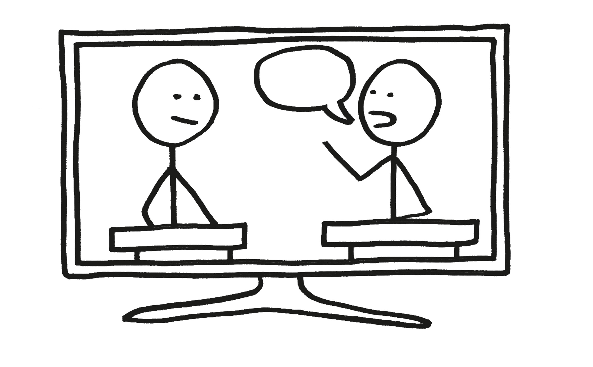
仅仅是一个问题吗？不，这是由科学支持的政治魔法。为什么？问题与陈述不同，它们引起积极的反应——它们让人们思考。这就是为什么俄亥俄州立大学的研究人员发现，当事实明显站在你这边时，问题变得比简单地做出陈述极其有效。
我们都曾许下过无法兑现的承诺。有多少次你说过”今年我要吃得更健康”或者”这周我要每天早上锻炼”，结果却没有达成计划？当然，我们都有意要坚持到底，但仅有良好的意愿并不足以创造有意义的改变。然而，一个精心设计的问题也许可以做到。
在梳理了跨越40年研究的100多项研究后，来自四所美国大学的科学家团队发现，在影响自己或他人行为方面，提问比告诉更有效。
来自华盛顿州立大学的研究合著者David Sprott说：“如果你询问一个人是否会执行某个未来行为，该行为发生的可能性就会改变。”问题会引发与陈述不同的心理反应。
这意味着，例如，一个写着”请回收垃圾”的标志，远不如一个写着”你会回收垃圾吗？“的标志更能提高观看者回收垃圾的可能性。告诉自己”我今天会吃蔬菜”，不如问自己”我今天会吃蔬菜吗？“更能增加你吃蔬菜的机会。
令人惊讶的是，研究人员发现，将陈述转换为问题可以影响一个人长达六个月的行为。
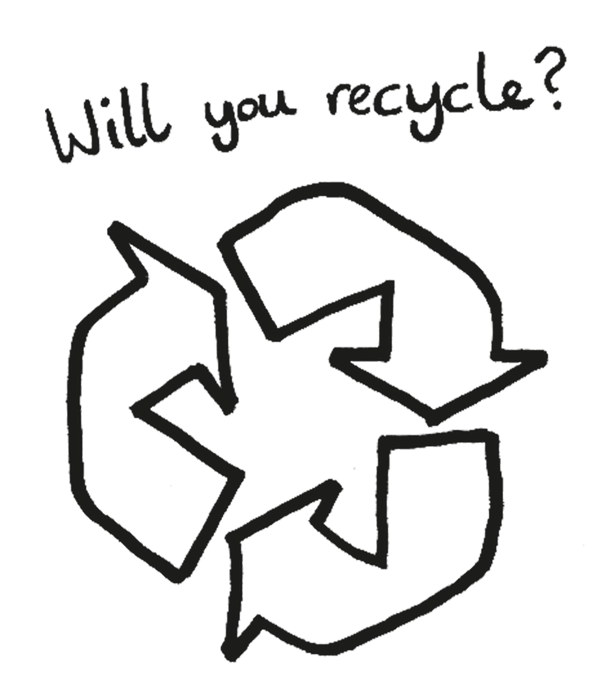
对于只能用是或否回答的问题，问题/行为效应甚至更加强大。
当问题用于鼓励符合接受者个人和社会抱负的行为时（当对问题回答”是”会让他们更接近想成为的人时），问题/行为效应最强。
以”will”开头的问题暗示所有权和行动，使得问题/行为效应比以”can”或”could”等词开头的问题更强，后者暗示问题是关于能力而非行动。它也比以”would”开头的问题更强，“would”是条件性的，更多暗示可能性而非概率性。
在第5定律中，我解释了认知失调现象可能带来的害处，现在我要告诉你它如何有用。
认知失调描述的是当最好的你——你真正想成为的人——与现在的你不匹配时所体验到的心理不适。假设你渴望成为太极专家，朋友问你是否每天练习太极。回答”不”会产生认知失调，因为它会突出你想成为的人和实际的你之间令人不安的不匹配。为了消除这种不匹配，你很可能会回答”是”。一旦你这样做了，你的抱负就更可能成为现实，因为这个问题不仅提醒了你想成为谁，还提醒了成为那个人的路径，而且你已经设定了走那条路的意图——这一切都体现在一个小而强大的问题中。
这在回答是或否问题时效果更好，因为这些二元选择不允许辩解和借口——这两者都让我们能够逃避面对我们想成为谁以及需要做什么才能到达那里的现实。
如果你读过我的第一本书，你会知道我出色的助理Sophie喜欢每周宣布她”周一要去健身房”。偶尔，当我天真轻信地问她是否在aforementioned的周一去了健身房时，她会回应一个冗长、详细的理由说明为什么不可能去，然后宣布她下周一会去。她已经持续这个routine八年了。
“是”或”否”问题的好处在于它不给你任何欺骗自己的余地。它迫使你以某种方式做出承诺。
所以，如果你开始为自己的行为找借口或想要教导别人应该做什么不同的事，试试这个替代方法：问自己或他们一个只能用是或否回答的简单问题。当专注于可能受益于额外动机的领域时，这很有效。“我今天会去健身房吗？”“我午餐会点健康食物吗？”不允许任何解释。只要是或否。
最近，我在葡萄牙波尔图女友家附近跑步。那个区域以陡峭的山坡闻名，但当我接近一个特别可怕的山坡时——陡峭得几乎垂直——问题/行为效应帮助了我。我问自己：“你会继续跑——不停下——直到到达顶部吗？”我告诉自己”是”。我无法真正解释，但出于某种原因，它真的有帮助——我成功到达了顶部而没有停下；它消除了我可能用来停下的任何可能借口，并创造了一个我不想违背的对自己的承诺。
使用问题/行为效应帮助他人：问朋友或爱人，“你会吃得更健康吗？”或者”你会争取那个升职吗？“这种温和的confrontation已被反复证明能带来可靠、有意义的改变，并鼓励人们成为最好的自己。
在工作中使用这个方法。如果你是餐厅的服务员，为一桌开心的顾客服务，在收盘子时不要说”希望您用餐愉快”，而是在递账单时问”食物怎么样？“，就在他们决定小费数额之前。正如里根总统教导我们的，当事实明显站在你这边时，问题就成为鼓励你想要的行为的极其有力的工具。
如果你想创造积极的行为，不要陈述，而要问二元的是或否问题。如果回答”是”会让人们更接近他们想成为的人，他们就更可能回答”是”，一旦他们回答”是”，这个”是”就更可能成真。
问你的行动问题，你的行动会给出答案。
永远不要妥协你的自我故事
这条法则介绍了一个你可能从未听说过的概念，叫做”自我故事”；它向你展示了自我故事如何决定你人生的成功，并给你关于为自己写出更好自我故事的秘密策略，这样你就能实现远大抱负。
“很多人不知道这一点……”克里斯·尤班克二世(Chris Eubank Jr)说道，他不祥地向前倾身坐在椅子上。
克里斯·尤班克二世，冠军拳击手，国际拳击名人堂传奇人物克里斯·尤班克的儿子，曾造访我家接受我的采访，为准备这本书。
他继续说道：
……但作为一名拳击手，80%是心理因素。你必须有的胆量、勇气和毅力，要穿过成千上万人的人群。在你走的时候，知道一旦到达拳击台并走上台阶，你就必须脱掉外套。铃声将响起，你必须与某人战斗。你必须受伤，也必须伤害别人，在全世界数百万人的观看下。这本身，这段路，地球上大多数人都做不到。仅仅是这段路，更别说战斗部分，需要巨大的心理力量。
[我：] 你认为可以训练某人拥有那种心理力量吗？
[尤班克二世：] 我认为可以；我见过拳击手发展出这种力量，而且你需要它。归根结底，在训练、对练，特别是在比赛中，会有你真正受伤的时候。你会处于质疑自己的境地。我在这里做什么？我会没事吗？我能打败这个人吗？我应该放弃吗？我应该找个出路吗？这太过了。每个拳击手都会经历那个时刻，你知道的。
[我：] 你有没有在比赛中认真考虑过退出？
长时间停顿
[尤班克二世：] 有一次我差点放弃。在我转职业之前，我去了古巴。那里的人是野兽。他们是怪物。我进入拳击台进行一次随意的对练，然后古巴奥运会重量级代表走上台阶进入拳击台。我以为他是来拳击台做影子拳击，为与其他人的对练热身。他们说，“不，不，不，不，你们要对练。”我说，“呃，他大概是我的三倍大。你们什么意思？”他们说，“不，不，他会和你配合，只是随意对练。”所以我想，当然。没问题。开始吧。
第一轮铃声响起，这个人冲向我，开始猛击我。我所遭受过的最重的打击。砰，砰，砰。我在躲闪，闪避，在拳击台周围跑。他就是冲向我，我无法摆脱这个人。
砰，砰，砰。他把我打出了拳击台！从拳击台到坚硬混凝土有四英尺的落差。我的膝盖撞到混凝土，我的腿完全麻了。我试图站起来，但我的腿完全失灵了。我向上看，这个古巴重量级选手正俯身靠在绳索上，低头看着我。我处在心理的十字路口，必须做出决定。我是说，“听着，我的膝盖不好。你太大了。”还是重新进入？我坐在混凝土上，环顾四周。每个人都在看着我，我爸爸也在那里。我做了一个决定。我想，你知道吗，他妈的来吧。我重新进入，古巴人又开始猛击我，又痛苦地进行了两轮……但我唯一能想到的是：我必须完成三轮，因为我说过要做三轮。我不能让这个体育馆里的每个人都知道我退出了。因为我无法忍受自己。我必须回家睡觉。我不能在知道另一个男人让我退出的情况下入睡。所以我重新进入拳击台，像个男人一样承受了殴打。从那天起，我再也不害怕了。这是我人生中最糟糕的经历，但也是最好的经历，因为我现在知道了自己的能力。我知道我内心有不放弃的力量。如果他都不能让我退出，谁能让我退出？没有人。这种信念伴随了我职业生涯的其余时间。
[我：] 太不可思议了。你在谈论你为自己、关于自己写的一个故事，以及这个故事在决定你未来行为方面有多重要。
Eubank Jr: 完全正确。在训练中这种情况最常发生：有时我会在跑步机上跑步，小腿抽筋了，但我还有8分钟要跑，因为我设定了40分钟的计时器，现在已经跑了32分钟。抽筋开始时，我会用一条腿跑，真的是一瘸一拐的，因为如果跑步机能让我放弃，那当我在擂台上被对手击中受伤时会怎样？他也会让我放弃的。这非常重要，因为它教会你相信无论事情变得多么困难，你都是那种会找到出路的人。
无论是否有人在看，或者没人知道我放弃，都没关系。当没人看着时你不能放弃——你绝不想把那种精神放进自己内心，你必须把那些魔鬼挡在外面。它们就是魔鬼，如果你经常让它们进来，它们就会占据主导地位！
‘我讨厌训练的每一分钟，但我说：“不要放弃。现在承受痛苦，余生就能像冠军一样生活。”’
穆罕默德·阿里
美军是地球上最强大的军队。每年大约有1300名学员加入其著名的严格军事学院西点军校。他们的入学仪式包括一系列极其困难的挑战，称为”野兽营房”。据研究西点军校学员的研究者称，这些挑战”经过精心设计，旨在测试学员心理能力的极限”。
当我读到这项研究时，我和大多数人一样，认为那些最有耐力、最聪明、体力最强、运动能力最好的学员会是最成功的。但是当宾夕法尼亚大学的研究员Angela Duckworth研究他们的成就，更具体地说，研究心理韧性、毅力和激情如何影响实现目标的能力时，她发现了非常令人惊讶的事情。
Duckworth追踪了分布在两个入学班级的近2500名学员。她比较了几个指标，包括他们的高中排名、SAT分数、体能测试结果和Grit量表（用1到5分的等级衡量对长期目标的毅力和激情）。
结果发现，并不是体力、智力或领导潜力能最准确地预测学员是否能通过野兽营房——关键在于心理韧性，以及实现长期目标的决心。毅力是最重要的。信不信由你，在Grit量表上仅仅高出一个标准差的学员通过野兽营房的可能性要高出60%。
研究不断显示，你的自我故事以及你拥有的”心理韧性”、“毅力”或”复原力”比任何其他因素都更重要，这对在商业和生活中实现目标至关重要。这是很好的消息，因为虽然你对自己的体格或天生能力无能为力，但你可以在很大程度上发展自己的自我故事。
不幸的是，我们的自我故事不仅受到我们收集的关于自己的第一手证据影响，还深受周围刻板印象的影响。例如，如果你生活的社会持有黑人不如白人能干的刻板印象——而你是黑人——你很可能会内化这种信念，它会成为你自我故事的一部分；科学表明，仅仅这种刻板印象就能显著影响你的自我故事、表现和最终结果。
八岁时，我在学校更衣室里兴奋地穿上泳裤，准备上我的第一堂游泳课，这时一个同学转过身随口说道：“你知道黑人不会游泳吗？他们的身体结构不同，所以今天对你来说不会容易！”我有英国和非洲血统，所以在那一刻，因为那句随意的评论，我的兴奋不仅消失了，我相信自己能够游泳的信念也消失了。不用说，那堂游泳课进行得并不顺利——我像只溺水的狗一样扑腾，最终在课程进行到一半时放弃了。花了我18年时间，以及有可信的人说服我这不是真的，我才终于学会了游泳。
1995年发表的一项引人注目的研究使用了一种叫做”启发”(priming)的方法来证明这种”刻板印象威胁”对你的自我故事可能产生的影响。
研究人员给一组学生进行了一项困难的词汇测试，但在测试开始前，他们向一些黑人学生询问了关于他们种族的问题。令人震惊的是，被询问种族问题的黑人学生在测试中表现更差，分数低于白人学生和没有被询问的黑人学生。重要的是，当学生没有被问及这些问题时，分数是相当的。
负面刻板印象对某人自我故事的有害影响不仅仅体现在种族问题上。在另一项研究中，研究人员想测试那个恶毒的谣言——女性不如男性擅长数学。在给男女大学生进行测试之前，一些参与者听到研究人员说通常男性和女性在这项测试上得分不同；其他人被告知男性和女性之前的得分相等。
听到研究者负面评论的女性表现明显更差，报告了更大的焦虑，并且对自己的表现期望比男性更低。这项实验通过发现当参与者接触到关于其性别的评论时，刻板印象威胁就会启动并导致其表现恶化，证实了早期研究。
那么，如果一个女性能够逃脱她的身份认同，改变她的自我故事，并在测试时假装是别人，会发生什么呢？
一位名叫沈张(Shen Zhang)的研究者着手测试这一点。张给110名女本科生和72名男本科生做了30道数学选择题。在测试前，每个人都被告知男性在数学方面比女性做得更好。此外，一些志愿者被告知要用真实姓名参加测试，但其他人要用四个虚构姓名之一完成测试：Jacob Tyler、Scott Lyons、Jessica Peterson或Kaitlyn Woods。
男性在测试中超越了女性。但令人震惊的是，使用化名的女性，无论是男性还是女性化名，都超越了没有使用化名的女性。而且——重要的是——采用化名的女性表现得和男性一样好！
这一劳永逸地证明了使用避免姓名的替代身份识别方法进行测试和面试的好处——用研究者的话说，这可能会”允许被污名化的个体将自己与威胁性情况断开联系”，而且至关重要的是，“消除负面刻板印象”。
Chris Eubank Jr所描述的”自我故事”是科学家和心理学家熟知的理论，他们称之为你的”自我概念”。这是我们对自己是谁的个人信念，包含我们对自己的所有想法和感受——身体上、个人上和社会上。它包括我们对自己能力、潜力和胜任力的信念。
你的自我故事在早期童年和青春期发展最快，但随着我们在成年生活中收集关于自己的更多证据，它会继续形成和改变。
心理学教授Fatwa Tentama指出，个体的”韧性”受到拥有积极自我故事的影响。拥有积极自我故事的个体会更加乐观，在逆境面前坚持更久，更好地处理压力，并更容易实现目标。
“自我概念低的个体会相信并认为自己软弱、无能、不受欢迎，对生活失去兴趣，对生活悲观并容易放弃。”
Laura Polk，科学家和领导力专家
印度尼西亚日惹Mercu Buana大学的科学家Eka Aryani进行的一项关于学生的研究，旨在了解自我故事与韧性之间的关系，得出结论认为”自我故事”几乎占学生”心理韧性”的40%。影响个体韧性的其他60%因素包括实际能力、家庭因素和社区因素。
那么我们如何改善自我故事，以便能够韧性和乐观，实现目标并在逆境面前坚持不懈？
你可能听过传奇大学篮球教练John Wooden的这句话：“对一个人品格的真正考验是他在无人观看时所做的事。”这是对的，但根据科学，一个人的品格也是在无人观看时被创造、建立或摧毁的。
你所做的一切——无论有没有观众——都为你提供关于你是谁和你能做什么的证据。
正如我们在法则4中发现的，第一方证据——即你用自己的感官观察到的一切——在创造或改变信念方面是迄今为止最强的证据。
你独自在健身房举重，你在做最后一组，你必须做十次重复才能完成锻炼。你做到第九次时肌肉在燃烧——你会怎么做？
在这一刻你的选择可能看起来无关紧要——但我们做出的每一个决定都会在我们自我故事的今日章节中写下另一行强有力的第一方证据，关于我们是谁，我们如何应对逆境以及我们能做什么。
这些证据不仅会在健身房中变成自我实现，它还会渗透到你生活的其他方面，并无情地影响你的行为。
当事情困难时，这些证据会对你耳语——“放下重量吧”，“放弃吧”，“记住，你做不到这个”——科学表明，在逆境面前，负面的自我证据会比充满坚持、克服和胜利的故事给你带来更多压力、担忧和焦虑。
我们对自己的信念创造了我们的想法和感受，我们的想法和感受决定了我们的行动，我们的行动创造了我们的证据。要创造新证据，你必须改变你的行动。
选择在更容易停在第九次时做第十次。选择在更容易回避时进行困难的对话。选择在更容易保持沉默时提出额外的问题。在每一个机会中，以一千种微小的方式向自己证明——你拥有克服生活挑战所需的能力。只有这样做——只有这样你才能真正拥有克服生活挑战所需的能力——一个强韧、积极、基于证据的自我故事。
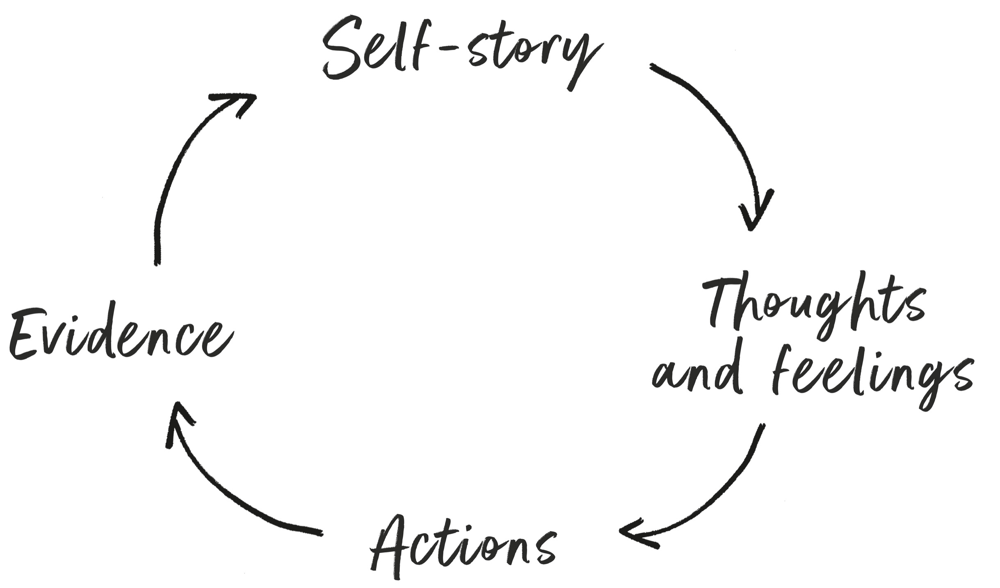
心理韧性是持续成功所必需的，它主要来源于拥有积极的自我故事。要建立你的自我故事，你需要证据，而这种证据来源于你在面对逆境时所做的选择。要警惕反证据及其对你的自信和行为可能产生的阴险长期影响。如果一个八岁的孩子告诉你不会游泳，告诉他滚蛋。
最令人信服的迹象表明某人将在未来取得新成果，就是在当下展现新行为。
永不对抗坏习惯
这个法则揭示了关于如何养成和戒除任何坏习惯的一些令人惊讶的真理。它告诉你为什么对抗坏习惯是一种失败的策略，通常会导致反弹——以及你应该做什么。
我在担心父亲会死亡的恐惧中长大。
在我十岁之前的某个时候，我和我的兄弟姐妹发现父亲是个秘密吸烟者——大概他向我们隐瞒这一点是为了阻止我们模仿他的习惯。但一旦我们发现了他的迷你雪茄，他就开始在我们面前吸烟。
令我惊讶的是，他只在车里吸烟。从不在聚会上，从不在家里，从不在工作时，只在车里。我做了一些微妙的尝试让他戒烟，但都没有用。直到十年后的一天，我无意中引导他最终戒掉了他40年的习惯。
为了解释发生了什么，我首先需要简要解释习惯是如何被保持的。
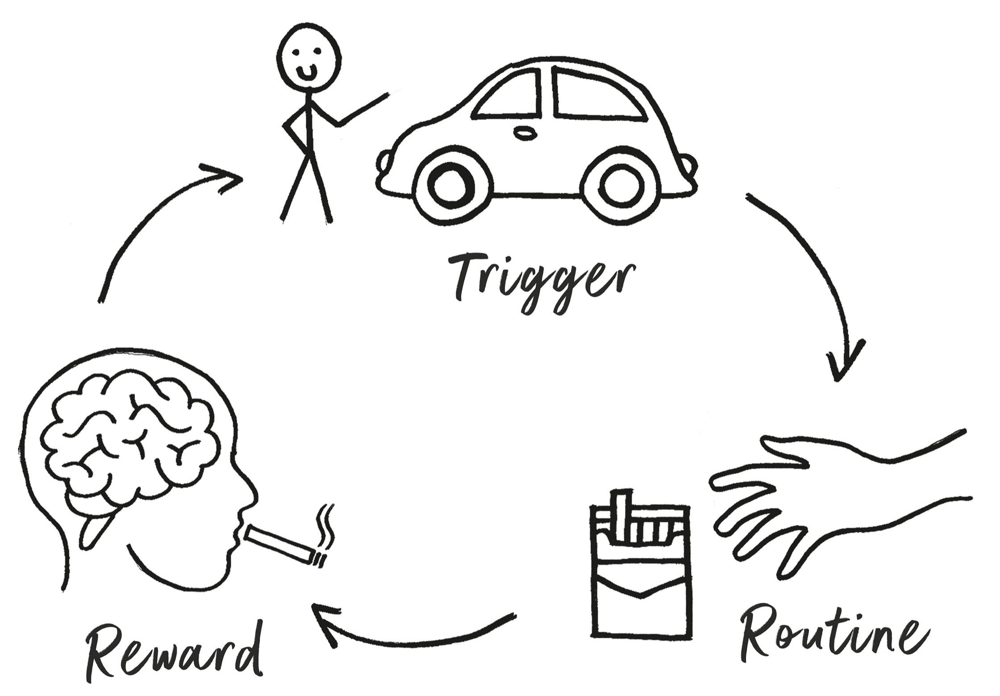
习惯循环的概念由查尔斯·杜希格在他的书《习惯的力量》中引入，他在书中探讨了习惯如何以及为什么形成，它们为什么持续以及我们如何打破它们。简化来说，习惯循环由三个关键要素组成：
线索(CUE)：习惯行为的触发器（例如，压力会议或负面事件）。
例行程序(ROUTINE)：习惯行为（例如，吸烟或吃巧克力）。
奖励(REWARD)：习惯行为对你的结果/影响（例如，缓解感或快乐感）。
当我18岁时，从大学辍学建立我的第一个科技初创公司后，我读了一本叫《钩瘾》的书，作者是尼尔·埃亚尔，书中解释了大型社交媒体公司和科技公司如何通过利用这种习惯循环让用户对他们的产品上瘾。在我读这本书的时候，我碰巧在家停留，意外地把书落在了父亲的浴室里。
我父亲喜欢在上厕所时阅读，于是拿起了这本书。这本书教会了他关于习惯循环的知识，他终于理解了导致他吸烟的线索（他的车）、例行程序（伸手到车门，拿起香烟并点燃）和奖励（尼古丁在他大脑中产生多巴胺释放）。
第二天他去了他的车，取出香烟，把迷你棒棒糖放进烟盒里，再也没有吸过烟。习惯循环被打断了。一个新的、较少成瘾性的习惯取代了它，我父亲的健康状况因此得到了显著改善。
无论我父亲是否意识到，科学表明他做的最重要的事情不是试图对抗习惯，而是用成瘾性更低的奖励——棒棒糖——替换了习惯循环的最后一步。
一些令人难以置信的新科学研究揭示了试图对抗坏习惯是多么愚蠢——以及为什么人们在这样做时总是反弹。
你是否曾经注意到，当你过分专注于停止某事时，你最终会反弹并做得更多？
这是因为我们是行动导向的生物，而不是非行动导向的生物。我们在法则3中遇到的塔莉·沙罗特对我说：
要在生活中得到好东西——无论是巧克力蛋糕还是升职——我们通常需要采取行动并做一些事情来赢得它。因此，我们的大脑已经适应了理解行动与奖励相关。所以当我们期待好事时，一个”行动”信号被激活，这让我们更有可能行动——而且行动迅速。
沙罗特描述了一个实验，志愿者被告知他们可以按一个按钮来获得奖励（一美元）或按一个按钮来避免负面行为（失去一美元）。也许不出所料，按按钮获得奖励的志愿者比按按钮不失去美元的志愿者做得更快。
大脑将奖励与行动联系起来，所以你需要将行动与奖励配对。
此外，一些研究表明，你越是试图抑制某个行为或想法，你就越有可能采取这个行为，或想到这个想法。这很好地证明了manifestation的力量——你会得到你所想的——但这也进一步证明了试图对抗或不去想某个习惯是一种愚蠢的策略。
2008年发表在Appetite期刊上的一项研究发现，试图不去想吃东西的志愿者组比没有这样做的组吃得更多。第一组表现出了所谓的”行为反弹效应”。
同样，2010年发表在Psychological Science期刊上的一项研究发现，试图不去想吸烟的吸烟者组实际上比没有这样做的组想得更多。
这让我想起了我18岁时驾驶教练给我的一个小建议：“Steven，汽车会朝你眼睛看的方向行驶。如果你想避免撞到路边的汽车，就不要专注于路边的汽车，因为你会偏向路边停着的汽车。向前看，看向远方，看向你想让汽车行驶的方向。”
这似乎是一个很贴切的类比，用来说明打破和养成习惯：你最终会做你专注的事情，所以不要专注于戒烟，不要与之对抗；专注于你想用来替代它的行为。
俄勒冈大学社会与情感神经科学实验室主任Elliot Berkman说，如果你是吸烟者，你告诉自己不要吸烟，你的大脑仍然会听到”吸烟”。相反，如果你告诉自己每次想要香烟时就嚼口香糖，你的大脑就有了一个更积极、以行动为导向的目标来专注。这解释了为什么那些小棒棒糖让我父亲戒了烟：他不仅仅是把香烟从车门里拿走了；他用一个新的行为取代了它们，让他的大脑专注于——吮吸棒棒糖。
“你什么时候睡觉？”这是一个在过去十年里几乎每周都有人问我的问题，问这个问题的采访者、panel主持人和记者多得我都记不清了。这个问题背后隐含的假设——这一直让我困惑——是我不可能在获得广泛职业成功的同时还能获得充足的睡眠。事实恰恰相反——我一直睡得很好。我不允许在上午11点之前安排任何会议、电话或约会，我很少使用闹钟，因为我一直知道睡眠是成功的基础，而不是成功的阻碍。
“当你压力很大时，你更有可能做你不想做的事情，”斯坦福大学心理学教授Russell Poldrack说——也就是说，如果你有压力，你更有可能寻找多巴胺刺激，以糖、加工食品、药物、色情或酒精的形式。
因此，要让新习惯坚持下去，并在早期阶段进行足够的重复来让你大脑中的神经元一起激发并连接在一起，你能做的最重要的事情之一就是保持低压力水平——特别是在你正在养成新习惯的关键早期阶段。
你能做的最有效的事情之一也是最简单的：睡个好觉。无论你想改善什么，从你的社交生活到你的吸烟习惯，睡眠都会有帮助。
如果你想变得健康，获得充足的睡眠会提高你的速度、力量和耐力。如果你想在工作中表现得更好，缺乏睡眠会导致你效率降低——如果你是管理者，会让你不那么专注、不那么集中注意力、不那么愉快，甚至不那么有道德。
如果你想减肥或吃得更健康，睡眠不足会减少leptin，这种激素给你的身体发出你已经饱了的信号。它还会导致ghrelin相应增加，被称为”饥饿激素”，它会引起食欲激增和脂肪储存，并可能导致你做出不健康的食物选择。
所以，如果你想打破旧习惯并养成新习惯，忘记所有复杂的小贴士、技巧和诀窍，专注于基础——如果你感觉良好，如果你没有过度压力，如果你睡了个好觉，你就会成功。
我们都知道意志力是成功的关键，但直到大约25年前，我们对它的看法还很简单，认为它是一种技能，一旦培养出来，就会保持不变。当Mark Muraven（现为纽约奥尔巴尼大学教授）在攻读博士学位期间提出意志力似乎会随着我们使用它而减少时，这一切都改变了。
1998年，他进行了一个现在著名的实验。在他的实验室里，他摆了一碗萝卜和一碗刚烤好的饼干，然后带来了两组人，让他们相信这个实验是关于味觉感知的。第一组被告知他们可以吃饼干，忽略萝卜，而另一组被要求忽略饼干，只吃萝卜。
实验进行了5分钟后，一名研究人员进入房间，在15分钟的休息后，给两组人一个不可能完成的谜题。
吃饼干的人，凭借他们未使用的意志力储备，非常放松，会继续一遍又一遍地尝试解决它，其中一些人持续了超过半小时。平均而言，吃饼干的人在放弃之前花了近19分钟试图解决谜题。
吃萝卜的人——他们必须克制自己不去吃美味的饼干，消耗了意志力——的表现截然不同。他们变得沮丧并表达了自己的烦恼。有些人绝望地把头趴在桌子上；其他人则发脾气，对整件事产生抵触，抱怨这是浪费时间。平均而言，吃萝卜的人工作了大约八分钟——不到吃饼干的人坚持时间的一半——就放弃了。
自从饼干/萝卜研究以来，多位研究者已经测试并证明了”意志力消耗”：意志力不仅仅是一种技能，它更像一块肌肉——就像身体的任何肌肉一样——工作越努力就越疲劳。在一项实验中，被要求在第一个实验中不要想某些事情的参与者，在研究者试图让他们发笑时无法抑制笑声。另一个实验要求受试者观看催泪电影而不屈服于情感；在随后的身体测试（而非情感测试）中，这些受试者——就像不幸的萝卜食用者一样——更快地放弃了。
所以如果这里的科学是正确的，意志力是一种有限的资源，那么很明显，在试图养成新习惯和打破旧习惯时，你给自己施加的压力、限制和负担越多，你实现目标的机会就越少，反弹的机会就越大。
对抗习惯是个坏主意——这会消耗你的意志力并增加你反弹回习惯的机会。这就是为什么不可持续的极端节食不起作用——每当你觉得自己被剥夺了真正想要的东西时，你几乎总是会失败。例如，在2014年的一项研究中，近40%的人说他们未能坚持新年决心是因为目标太不可持续或不现实，10%的人说失败是因为制定了太多决心。
这就是为什么确保你的习惯足够小且可实现以保持可持续性——无需重大牺牲（这会消耗你的意志力储备）——极其重要。与其同时放弃你拥有的每个不良习惯，你应该目标更少，这增加了你完成任何目标的可能性。有太多大的、不现实的、以牺牲为中心的目标，你的意志力将承受过大压力，它会耗尽，你会失败，你会反弹。
这也是为什么如此多的心理学家和科学家发现，创造新习惯的最佳方式不是对抗旧习惯或剥夺自己的奖励——这是适得其反的——而是寻找新的奖励、更健康的奖励和较少成瘾性的奖励，但仍要确保你在过程中仍然在奖励自己。
如果你想克服一个习惯，不要与之对抗。配合你的习惯循环，使用积极行动来替代它。不要一次处理多个坏习惯；你试图改变的越多，改变任何事情的机会就越少。在创造新习惯时，确保照顾好自己并尽可能多地睡眠。
睡眠、举重、运动、微笑、大笑、倾听。阅读、储蓄、补水、禁食、建设、创造。
你的习惯就是你的未来。
这条法则指出我们大多数人的优先级是错误的——它敦促你重新优先考虑健康，这样你就能活得足够长来享受你所有其他的优先事项。
沃伦·巴菲特，曾经的世界首富，坐在内布拉斯加州奥马哈的一小群大学生面前，给了他们最重要的建议：
当我16岁时，我脑子里只有两件事——女孩和汽车。我不太擅长与女孩相处。所以我想着汽车。我也想女孩，但我在汽车方面更幸运。
假设当我16岁时，一个精灵出现在我面前。那个精灵说，‘我要给你一辆你选择的汽车。明天早上它就会在这里，系着一个大蝴蝶结。全新的。完全属于你！’
听过所有的精灵故事，我会说，‘有什么条件？’精灵会回答，’只有一个条件…这是你这辈子唯一会得到的汽车。所以它必须用一辈子。’
如果发生了那种情况，我会挑选一辆汽车，但是，你能想象吗，知道它必须用一辈子，我会怎么对待它？
我会把说明书读五遍。我会一直把它停在车库里。如果有最小的凹痕或划痕，我会立即修好，因为我不希望它生锈。我会像婴儿一样照顾那辆车，因为它必须用一辈子。
这正是你在大脑和身体方面所处的位置。你只有一个大脑，只有一个身体。它必须用一辈子。现在，让它们闲置很多年是很容易的。
但如果你不照顾那个大脑和身体，40年后它们会成为废物，就像那辆车一样。
你现在、今天所做的事情，决定了你的大脑和身体在10年、20年和30年后如何运作。
你必须照顾它。
我生命的前80%都在优先考虑工作、女孩、朋友、家人、我的狗和我的物质财富。
直到我27岁时，我和世界其他人一起目睹了一种名为Covid-19的全球病毒席卷文明社会，悲惨地夺去了超过600万人的生命。
由于年轻的特权和由此带来的天真，在那之前，“健康”对我来说是理所当然的。如果我完全诚实的话，我并不关心自己的健康；我关心的是看起来好看——努力练出六块腹肌——但实际上”保持健康”是我幸运地从未需要考虑的事情。
我认为全球大流行对我们大多数人来说在心理上都是创伤性的，但如果对我来说有什么积极意义的话，那就是那两年的创伤将一个不可争辩的真理深深烙印在我的脑海中：我的健康实际上应该是我的首要优先事项。
一个国际研究团队宣布，汇集了数十篇同行评议论文的数据，涵盖了近40万名Covid-19患者，发现感染Covid-19的肥胖人群住院的可能性比正常人高113%。不健康的个体死亡的可能性显著更高。
我有一个强烈持久的信念，即我们中没有人真正相信自己会死——这一点从我们的生活方式、我们担心的琐事以及我们对风险的态度中可以清楚地看出。然而，Covid-19将死亡带到了我的门前，我第一次在生活中近距离、过于个人化地看到了死亡。我能够思考它那令人恐惧、解放和不确定的特征。
凝视死亡那澄清的面容，我能看到我的人生优先级安排得多么糟糕。我能看到我的工作、我的女朋友、我的朋友、我的狗、我的家人以及我拥有的一切，都只是放在一张名为”健康”的脆弱桌子上的物品。
生活可能会从桌子上拿走任何一件物品——正如它经常做的那样——而我仍然会拥有桌子上的其他一切。你可以拿走我的狗，上帝保佑不要，我仍然会拥有桌子上的其他一切；你可以把我的女朋友从桌子上拿走，我仍然会拥有其他一切；但如果你移走了桌子——我的健康——一切都会掉到地板上。我会失去一切。
一切都依赖于那张桌子。
一切都依赖于我的健康。
我的健康是我的第一个基础。
因此，从逻辑上讲，我的健康必须是我的第一优先事项，每一天，永远。
至关重要的是，通过接受这个现实——将健康作为我的第一优先事项——我的生命得以延长，这样我就能更多地享受我的其他优先事项（我的狗、我的伴侣、我的家人）。
没有比[照顾好自己]更大的感恩形式了。
这一个认识改变了我人生的轨迹，在过去三年中，我做出了根本性的饮食改变——减少糖分、加工食品和精制谷物。我开始每周锻炼六天——从未缺席过一周——并且大幅增加了水、植物和益生菌的摄入量。
客观上我很健康，这很好，但我也感觉很棒——这更好。对我生活各个方面——我的事业、生产力、睡眠、人际关系、情绪、性生活、自信心——产生的积极影响是如此深刻，以至于我在写这本书时不能不将照顾你的第一个基础作为伟大的一个不可避免的法则。
“那些认为自己没有时间进行身体锻炼的人，迟早会不得不为疾病腾出时间。”
Edward Stanley
照顾好你的身体；毕竟，它是你唯一拥有的载体，是你探索世界的唯一器皿，也是你唯一能真正称之为家的房子。
你的健康是你的第一个基础。
无用的荒谬比有用的实用性更能定义你
这个法则向你展示如何让你的营销或品牌信息传播得更远十倍，触及十倍更多的人，而预算只需要百分之一。
我在20岁时创办了我的第一家营销公司。这个业务增长得比我的经验所能处理的速度快得多，在公司成立一年后，我接受了我们最大客户的30万美元投资。
当你给一个没有经验的20岁首次担任CEO的年轻人很多钱——比他们一生中见过的钱还要多——他们很可能会用这些钱做一些非常愚蠢的事情。这正是对所发生事情的恰当描述。
我在英格兰北部的曼彻斯特签了一个巨大的15000平方英尺仓库的十年租约，大到足以容纳数百名员工——但我们只有十个人。
在我甚至还没有为我的团队购买工作桌之前，我就建了一个夹层楼并安装了一个游戏室，这样我们就可以玩电子游戏。对使用楼梯离开游戏室的前景不感兴趣，我决定花13000英镑买一个巨大的蓝色滑梯，底部有一个大型球池。
当桌子到达时，我已经安装了篮球架、设备齐全的酒吧、啤酒龙头、办公室中央的一棵巨大的树，以及其他几个幼稚的设施。
在接下来的几年里，尽管我们员工的平均年龄只有21岁，但这家公司成为了行业内最受公众关注、被提及最多、发展最快且最具颠覆性的企业。连续几年，我们的销售额平均每年增长超过200%。我们的客户都是世界上最大的品牌，到我25岁生日时，我们的员工数量已经超过了500人。
这个故事最令人着迷的部分是，我们从来没有销售团队。
我们不需要销售团队，因为我们有一个巨大的蓝色滑梯。
我知道这听起来很疯狂——像是夸张和言过其实——但说真的，在我们存在的前几年里，媒体宣传的最大推动力就是那个巨大的蓝色滑梯。
每一家报道我们的主要媒体、每一个电视频道、每一个提到我们的博客都总是会引用、开玩笑或者聚焦于那个巨大的蓝色滑梯。
到我公司成立三周年时，它已经被记者拍摄了数百次，有太多记者要求我躺在球池里为他们的报道摆拍，这已经成为我们办公室里的一个笑话。每当有记者到前台来采访我时，办公室里的某个人总是会毫无例外地对我喊”去球池里！”
BBC、BuzzFeed、VICE新闻、第四频道、第五频道、ITV、Forbes、GQ、Guardian、Telegraph、Financial Times——他们都排队来到我们的办公室，报道我们的故事并采访我们，而报道的头条图片几乎总是那个巨大蓝色滑梯的照片。在BBC的一篇报道中，他们称我们的办公室是全国”最酷”的，当VICE来为我们拍摄纪录片时，摄制组大部分时间都在从不同角度拍摄球池和巨大的蓝色滑梯。
回过头来看，我们整个创始团队都同意，我们做出的最佳财务决策之一——尽管愚蠢、无心且不成熟——就是花13,000英镑的投资购买那个巨大的蓝色滑梯。
诚然，在我经营公司的七年里，我只看到滑梯被使用过几次，但滑梯的有用性从来不应该用它的预期目的来衡量，而应该用它作为营销信息的有效性来评判。
滑梯向世界呐喊着关于我们的某些东西；它说，“这家公司与众不同”，“这家公司很年轻”，“这家公司具有颠覆性”，“这家公司很创新”。它比我们精心制作的任何营销活动都更响亮、更有说服力地传达了这一信息。
如果说一幅画胜过千言万语，那么我们的巨大蓝色滑梯写下了一整本书——而那本书讲述的是我们的价值观、我们是谁、我们相信什么以及我们如何行事的故事。
我绝对不是在告诉你去挥霍金钱买一个巨大的蓝色滑梯，但我要告诉你的是，你的公众形象将不会被你所做的所有有用的实际事情所定义——在很多情况下，甚至不是被你销售的产品所定义——而是被与你的品牌相关联的无用荒诞所定义。
我的朋友最近加入了伦敦一家名为Third Space的健身房。Third Space可以说是伦敦最大的高端健身房，横跨三层pristine楼层。为了让我也加入，他说：“你应该来——太棒了，他们甚至在入口处有一面100英尺的攀岩墙！”
你看到他做了什么吗？他做了每个人都会做的事。他没有提到他们数百台有用的健身器材、非常有用的重量架或者非常有用的更衣室；他基于健身房最荒诞的特质向我推销了这家健身房。
我必须坦白，这奏效了。我现在已经是那家健身房的会员超过一年了，在这一年里，我从来没有，一次也没有，看到任何人接近那面100英尺的攀岩墙。
但是当你听说一家健身房有100英尺攀岩墙时，你的潜意识会想，如果健身房有100英尺攀岩墙，那他们肯定什么都有！或者如果一家健身房有100英尺攀岩墙，它一定很大。或者如果你是Z世代或千禧一代，如果一家健身房有100英尺攀岩墙，他们一定还有很多其他有趣、疯狂的东西，我可以拍照上传到社交媒体！
品牌的宣传更多地由其无用的荒诞性而非有用的实用性来定义；关于你最荒诞的事情说明了关于你的一切。
Tesla用远少于某些竞争对手的时间，已经成为世界上最畅销的汽车公司之一。Tesla Model Y是欧洲最畅销的汽车，Tesla Model 3是美国最畅销的豪华车型之一。Tesla的广告预算是0美元。
就像我的营销机构不需要销售团队，我的健身房可能不需要营销团队一样，Tesla不需要打广告，因为它是一个由荒诞性驱动和定义的品牌。
它充满了故意荒诞的功能，让客户、媒体和广大公众谈论、大笑并传播关于这辆车的消息。大多数汽车公司将他们的驾驶模式命名为”舒适”、“标准”和”运动”，而Tesla有趣地拥抱了荒诞的力量，将他们的模式称为”疯狂”、“荒谬”和”荒谬+“。
2019年，特斯拉推出了新的”Caraoke”功能，让车主能够将汽车变成卡拉OK机；2015年，特斯拉推出了著名的”生物武器防御模式”，保护驾驶员免受”生物武器”侵害。他们引入了”街机”模式，将汽车变成移动街机；他们安装了”彩蛋”——驾驶员需要发现的隐藏功能，包括让汽车看起来像圣诞老人的雪橇、将前方道路变成彩虹，甚至还有”放屁模式”，让汽车从任何乘客座位发出放屁声。
所有这些听起来都很幼稚愚蠢——就像我的大蓝滑梯——但当你深入研究社交媒体监听数据时，这些荒谬的功能产生的话题讨论比所有主要竞争对手的实用功能加起来还要多。
人们没有动机去思考、谈论或写关于维持现状的事物，但他们有巨大的动机去分享那些嘲笑现状、颠覆现状并公然蔑视现状的荒谬事物。
BrewDog这家独立啤酒厂在2019年成为英国增长最快的啤酒品牌。他们的运营时间也远少于大多数竞争对手，营销预算只是一些全球竞争对手的一小部分——其中一些有两个世纪或更长的历史。但同样，这种财务劣势并没有抑制他们的营销影响力，因为他们的策略——无论好坏——有意利用荒谬的力量来传播信息。
2021年推出BrewDog酒店连锁时，他们在每个淋浴间都安装了啤酒冰箱，让顾客可以边洗澡边喝啤酒。我很确定没有人——至少没有理智的人——会真的使用它，但快速搜索Google图片就会发现，相当多的酒店照片都包含淋浴间啤酒冰箱的照片。品牌最荒谬的东西正在诉说关于品牌的一切。
无需直接说明任何事情，那个啤酒冰箱的存在就在向顾客呐喊：“我们是为啤酒爱好者服务的”、“我们是朋克品牌”、“我们不在乎规则”、“我们具有颠覆性”、“我们有幽默感”、“这家酒店是为与众不同的人准备的”，而且，如果你是年轻一代，它在说”这家酒店将为你的社交媒体频道提供精彩内容”。
如果荒谬如此强大，为什么不是每个人都拥抱荒谬？因为大多数商业领导者、CFO和会计师要求从营销、品牌和产品举措中获得直接可衡量的ROI。我所描述的荒谬极难衡量或量化，所以就像营销、讲故事和品牌塑造中的许多事情一样——你要么相信它，要么不相信。
根据我十年来为世界领先品牌提供咨询的见证，那些确实相信并付诸行动的少数人，几乎总是公司创始人（被任命的CEO通常更规避风险，财务控制权更少，对品牌价值的信念也更少）。他们的营销投入几乎总是比竞争对手产生十倍的效果，长期来看他们似乎总是超越行业其他公司。最重要的是，与他们合作更有趣。
如果你环顾四周，你会注意到最强大的品牌故事讲述利用了荒谬、非逻辑性、昂贵性、低效性和无意义性的力量，因为惯例、相似性和理性，尽管有用，却无法传达关于你是谁和你不是谁的信息。
“意义通过我们做的那些不符合短期自身利益的事情来传达——通过我们承担的成本和风险来传达。”
Rory Sutherland，奥美广告集团副主席
你将因你做的最荒谬的事情而被人记住。那些荒谬的事情将承担起诉说关于你一切的工作，而你不必说任何话。荒谬更有效、更有趣，但它不适合胆小的人：它适合冒险者、白痴和天才。
平凡会被忽视。
荒谬能销售。
不惜一切代价避免壁纸效应
这个法则将教你在写作、演讲和创作中抓住人们注意力的科学。这是世界上所有最著名的故事讲述者、营销人员和创作者的潜在秘密。
“我必须切掉我的手臂。”
六天来，Aron Ralston凭借坚定的决心、令人敬畏的希望和一种强大的人类天生生存工具——我们系统中都内置了这种工具——保持生存，这让他能够足够长时间地忽略正在经历的极度痛苦，从而切掉自己的手臂。
在2003年的一个春日，拉尔斯顿独自驾车前往犹他州的摩押，计划在引人注目的滑岩小径(Slickrock Trail)骑山地自行车，并花几天时间独自攀岩峡谷，为当年晚些时候攀登阿拉斯加的德纳里峰(Denali，原名麦金利山)做准备。4月26日，他攀入蓝约翰峡谷，在5英里处来到一个被巨石楔入峡谷壁之间的路段。当他慢慢穿行时，撬松了一块800磅重的岩石，岩石滑落下来，将他的右手压在峡谷壁上。
他的手不仅被压成了血肉模糊的一团，而且他无法移动那块巨石。他被困住了。他没有告诉任何人他在哪里，只带了一袋水和几根能量棒，几天内都不会有人发现他失踪。
拉尔斯顿被困了。
在经历了痛苦的试图解救被困手臂的努力，以及经历了不敢置信、震惊和绝望之后，他终于镇静下来。
他随身携带的廉价多用途小刀是他获得自由的唯一可能途径。接下来的几天里，他试图凿开那块巨石，但徒劳无功。然后他试图凿开峡谷壁——同样徒劳无功。时间不多了；他开始时有3升水，现在只剩下1升了。
正如他回忆道：“我已经克服了痛苦，我已经克服了恐惧，但我无法克服身体对水的需求。”
拉尔斯顿已经被困在峡谷中五天了。没有其他选择，他决定做不可想象的事情。他用自由的那只手整理好自己的物品，深吸一口气，开始切断自己的手臂。
他瞬间凝视着小刀脏兮兮的刀刃，然后将其刺入被困的手臂。截肢手术花了一个多小时，但成功了：他是清醒的，他还活着，现在他自由了。
虽然筋疲力尽、满身血污，但被解脱感和肾上腺素所淹没，他设法走出了峡谷。6英里后，他遇到了一些游客，他们把他带到了安全地带。
引人注目的是，在拉尔斯顿自己的书中，以及在描述他磨难的电影《127小时》中，他对自己困境的态度是如此奇怪的冷静、专注和平静。
“其他一切——痛苦、获救的想法、事故本身——都退居其次。我在采取行动，”他说道。
这虽然是一个极端的例子，但突出了人类大脑众多内置生存工具中的一种：它能够屏蔽那些它认为不相关的信息，这样我们就可以专注于对我们的生存和福祉更重要的新的和不熟悉的信息，甚至——如拉尔斯顿的情况——如果那些信息以难以想象的痛苦、可怕的处境或绝望感的形式出现。
在描述他受伤的部分时，拉尔斯顿在他的书中评论道：“也许最奇怪的事情是我没有感到伤口的疼痛——我的处境中有太多其他错误的事情，以至于它不够重要到值得我大脑的关注。”
拉尔斯顿所描述的是令人难以置信的心理现象——习惯化。
习惯化是一种内置的神经学机制，它帮助我们专注于重要的事情，并屏蔽那些我们的大脑不需要关注的事情。
大屠杀幸存者埃利·威塞尔(Elie Wiesel)在第二次世界大战期间被关押在奥斯维辛和布痕瓦尔德集中营，他描述了他和他的狱友如何暴露在持续的暴力和死亡威胁之下，以及集中营可怕的声音和恶心的气味中。随着他们在集中营中待的时间越来越长，他们的大脑经历了习惯化：对他们面临的危险、声音、气味和其他苦难变得不敏感。
帕维尔·菲施尔(Pavel Fischl)是一位年轻的捷克诗人，他到达了纳粹控制的特雷津施塔特犹太区，他描述了那里的人们如何迅速适应他们可怕的新环境：
我们都已经习惯了兵营走廊里脚步声的嘈杂。我们已经习惯了围绕每个兵营的那四面黑暗的墙壁。我们习惯于站在长队中，在早上7点、中午和晚上7点，拿着碗接受一点带盐味或咖啡味的热水，或者得到几个土豆。我们习惯于没有床铺睡觉，没有收音机、唱片机、电影院、剧院以及普通人的日常烦恼而生活。我们已经习惯于看到人们在自己的污垢中死去，看到病人在肮脏和恶心中…我们习惯于一周穿一件衬衫；嗯，人可以习惯一切。
习惯化是一种现象，其中大脑通过忽略或降低重复刺激的重要性来适应它们。
例如，如果你在一个有持续低水平嗡嗡声的房间里，起初可能会让你烦恼，但几分钟后你可能甚至不会注意到这个声音，因为你的大脑已经适应了它，不再处理它。
这种认知现象释放了我们需要用于其他事情的心理能力——可能有助于我们生存的新事物——它可以在任何有大脑的动物身上观察到。在一项研究中，研究人员将老鼠放在迷宫末端藏有巧克力的迷宫中。然后他们监测老鼠的大脑活动：“第一次老鼠进入迷宫时，嗅着空气，抓挠墙壁，它的大脑活动激烈，仿佛在分析每一种新的气味、景象和声音。虽然老鼠看起来很平静，但老鼠的大脑正在疯狂地处理一切。”
但是一旦老鼠找到了巧克力，当它被重新放回迷宫中寻找藏在同一地点的第二块巧克力时，大脑活动完全消失了。老鼠现在进入了自动驾驶模式。它不再需要处理事物——它已经习惯了迷宫——所以它毫不停顿地自动驾驶直奔巧克力，就像我们所有人都在无意识地滑行度过我们习惯化的生活，去工作、去健身房或去房子里熟悉的地方，不思考、不处理甚至不注意熟悉的环境信息。
因为老鼠的大脑现在处于自动驾驶状态，它释放了认知能力去思考其他事情。所以理论上，老鼠可以一边滑向巧克力，一边思考它那天在工作中遇到的复杂问题。在一个我们不会对环境产生习惯化的世界里，我们的大脑可能会因需要处理的感官刺激量而崩溃。
父亲。父亲。父亲。父亲。父亲。父亲。父亲。父亲。父亲。父亲。父亲。父亲。父亲。父亲。父亲。父亲。父亲。父亲。父亲。父亲。父亲。父亲。父亲。父亲。父亲。父亲。父亲。父亲。
你是否注意到，如果你一遍又一遍地重复任何一个词，它开始变成只是一个声音？即使当你看到同一个词反复书写时，如上所示，大脑最终会忽略它的意思。这种熟悉感的丧失有时会让一个词看起来像属于另一种语言。凝视得更久，它可能看起来只是字母的集合，凝视得更久，它看起来就像纸上无意义的标记。
你可能有过自己的经历，某个词的重复突然让它感觉奇怪、陌生和令人困惑——你如此频繁地使用一个词，以至于你必须停顿一秒钟，检查这个词是否有意义。
这都是因为一种叫做语义饱和的习惯化形式——这个术语由夏威夷大学社会科学学院心理学教授Leon James创造——其中由于重复和大脑倾向于忽略不需要投入资源的事物，词汇或短语的意义暂时变得无法获取。
这种效应在我们的视觉感官中也能看到。当患者服用使眼部肌肉麻痹的药物时，几秒钟后他们面前的世界会开始消失。他们没有睡着，但无法移动眼部肌肉意味着完全相同的光线模式落在眼后的感受器上，对于我们所有的感官来说，当某种输入是恒定的时，我们通过习惯化过程逐渐忽略它，这个过程抵消了恒定的输入，在这种情况下是整个视觉世界。在他们面前挥手（或任何移动的东西）就足以让患者的视觉世界回来。
神经科学家Eugene Sokolov说，当经历刺激时——词汇、声音甚至身体感觉——神经系统本质上创建一个”模型”，说明是什么引起的、它是什么以及大脑应该如何反应。对于大多数感官刺激，不需要反应，所以当不重要的刺激发生时，大脑创建的模型包括将来忽略该刺激的指令。
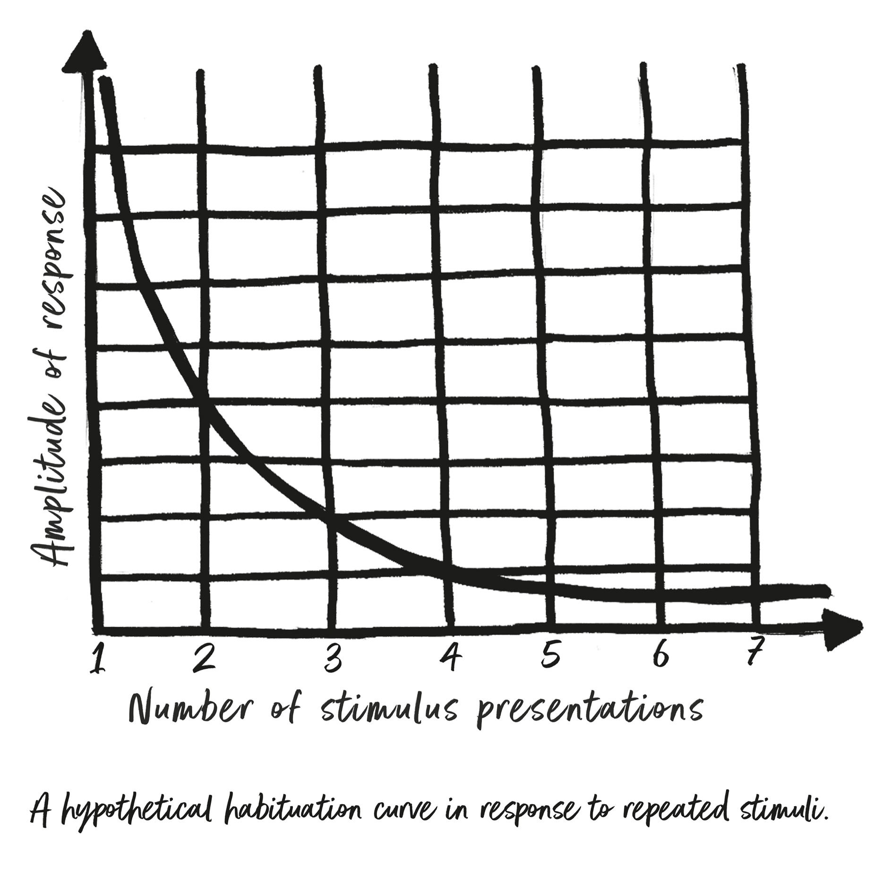
警告。警告。警告。警告。警告。警告。警告。警告。警告。警告。警告。警告。警告。警告。警告。警告。警告。
有趣的是，任何词汇都可能受到语义饱和的影响，但词汇开始失去意义之前的时间各不相同。例如，情感词汇或那些具有戏剧性内涵的词汇——比如”警告！“——似乎缺乏饱和效应，因为我们的大脑会调出与该词相关的其他强烈联想，使其意义不太可能丢失。
在所有面部表情中，那些与威胁相关的似乎产生最大的影响。出于明显的、以生存为导向的原因，区分威胁面孔和平静面孔对我们来说很重要。即使在仅仅七个月大时，婴儿就被证明与中性和快乐面孔相比，更关注恐惧面孔。
在过去两年中，我在YouTube频道上A/B测试了200多个缩略图，我一直发现缩略图上的面孔越动画化、威胁性或可怕，视频获得的点击量就越多。中性面孔——大脑已经适应忽略并认为是”壁纸”的——在所有频道的点击量方面表现明显更差。
多年来，Leon James表明语义饱和不仅仅是对我们阅读的东西产生影响：它作用于我们生活中的每一个景象、气味和声音。
如果你养过猫或狗，你可能已经注意到它们在你看Netflix、聊天或播放音乐时似乎很容易入睡——这是由于同样的习惯化过程。在一项研究中，对一只睡觉的猫播放了响亮的声音，猫立即醒来。但随着声音的重复播放，猫每次醒来的时间都会稍微延长，直到它完全保持睡眠状态。然而，如果音调稍有变化，猫就会立即醒来。
詹姆斯还在音乐方面探索了这种现象。他发现那些最快进入流行榜单的歌曲——因此在电台播放得更频繁——也是最快从榜单上跌落的歌曲——它们达到了习惯化。而那些缓慢爬升到榜首的歌曲，下降得同样缓慢，是逐渐消失而非燃烧殆尽。
考虑到这个概念，人们可能会理解地想知道为什么我们喜欢不止一次地听一首歌。这个问题让我想到另一个心理现象，称为”单纯接触效应”，指的是人们由于重复接触而对更熟悉的事物或人产生偏好的趋势。
在社会心理学家罗伯特·扎荣茨(Robert Zajonc)1968年进行的一项实验中，参与者接触了各种无意义的词汇，每个词分别呈现1、2、5、10或25次。参与者将听到5、10和25次的词汇评价为比只听到1或2次的词汇更积极。单纯接触效应此后在几项进一步的实验中得到了证实。
如果新事物能抓住我们的注意力，但我们在熟悉的时候喜欢事物，那么是否可能存在对某事物的最佳接触水平，既足够新颖以吸引我们的大脑，又足够熟悉让我们喜欢它？答案是肯定的，科学家称之为”最佳接触水平”。创造既新颖到足以抓住大脑注意力，又熟悉到足以被喜爱的产品，这是大多数唱片公司和制作人的困境。这就是为什么他们会为热门歌曲制作几个混音版本，为什么新艺人会采样老派经典，以及为什么大多数歌曲都有熟悉的即兴演奏、声音和旋律。
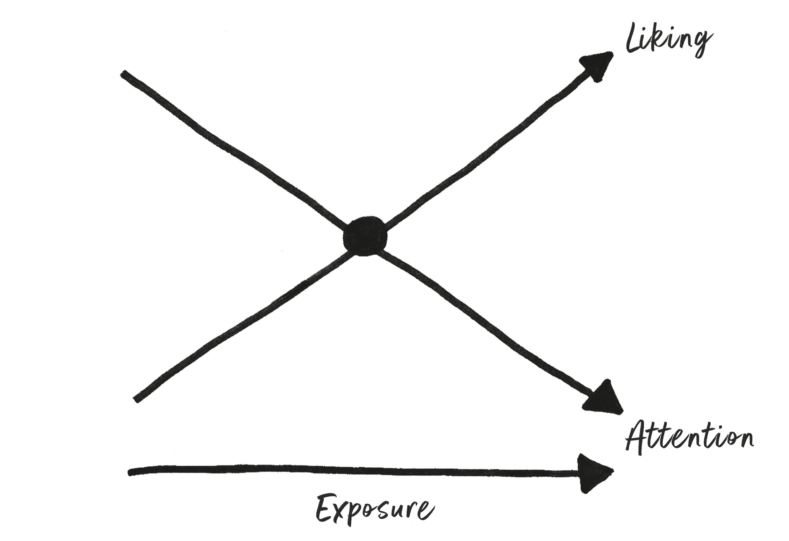
你的大脑也会对气味产生习惯化；人们经常询问站在旁边的朋友是否闻到什么气味的原因，是因为他们鼻孔中的受体已经习惯化——他们再也闻不到自己的臭味——信号不再从鼻部受体传送到大脑。
如果你曾经快速连续地试闻香水，你就会熟悉这种现象。香水销售员有时会提示你在试闻之间闻咖啡豆，试图减少这种鼻部习惯化的影响。
在一项习惯化研究中，研究人员给人们一个卧室空气清新剂，每天以相等的量释放强烈但令人愉快的松树味，持续三周。研究人员注意到”每天，参与者对气味变得越来越不敏感，他们会越来越多地问我们，‘你确定它还在工作吗？！’”
具有讽刺意味的是，我花了很长时间阅读关于”语义饱和(semantic satiation)“这个术语的研究——字面上有数千篇文章、研究和视频——以至于这个术语慢慢失去了意义，在我的脑海中变成了壁纸。
在写作和研究这个定律的过程中，有几次我不得不停下来反复确认我使用的是正确的短语，因为我的大脑似乎已经变得麻木、脱敏并且对它不熟悉了。
同样，营销人员由于这个概念的新研究而重新思考他们的销售策略。一个及时的例子是人们所说的”黑色星期五麻木”。由于极度过度使用，“黑色星期五”不再是曾经有价值的吸引点。我们重复了太多次，以至于对许多人来说，这个术语已经变得像他们卧室的壁纸一样模糊不清。
在营销中，任何有效的词汇或短语最终都会被利用、滥用和失效。作家兼记者扎卡里·佩蒂特(Zachary Petit)说：
另一个有趣的例子可以是”革命”这个词。1995年，我和一位记者同事在注意到press广告中”revolution/revolutionary”这个词的频率后开始了一个项目。我们扫描了一份报纸从1950年到1995年的各种版本。我们的发现表明，“革命”这个词直到1960年代末期才被稀少地使用，主要用于实际的政治革命。
然而，到1960年代末，这个词被左翼和右翼主流政党以及青年团体频繁重复使用。然后在报纸的一个1970年代中期版本中，我们遇到了一个家具品牌的press广告，声称其办公椅是用”革命性瑞典技术”制造的。在那之后，我们遇到了一个又一个电子产品、药品、巧克力、牛奶、食用油和洗涤剂品牌的广告，都声称它们是”革命性的”。
几十年后，“革命”这个词被使用得如此频繁，以至于失去了意义，无论是在政治上还是从营销角度来看。它的力量实际上已经消失了。
这是我想让你保守的一个秘密，以避免这些话语被过度利用、滥用和失效。
当我在YouTube上推出我的播客《The Diary Of A CEO》时，我们的频道每月产生数百万的观看量，但大约70%经常观看播客的观众并没有订阅。为了懒惰地让他们订阅，我在介绍中加入了”请点赞和订阅”这个短语，这是我见过的每个YouTube创作者都采用的短语。
这对我的观看到订阅转化率几乎没有影响，我的频道继续缓慢增加新订阅者。深入思考为什么会这样，我假设因为”点赞和订阅”这个短语是所有创作者的默认行动号召，也许观众的大脑已经对此习惯了。也许这个短语被过度使用，他们甚至听不到我在说什么。
我基于习惯化法则制作了一个新短语。在我YouTube视频的开始几秒钟，我说：
“你们中74%经常观看这个频道的人没有订阅。”
（这如此具体、揭示性和引人深思，大脑会关注它，绕过习惯化过滤器。）
“如果你曾经喜欢我们的视频，你能帮我一个忙，点击订阅按钮吗？”
（这是对互惠的呼吁——一个心理现象，表明如果人们觉得你为他们做了什么，他们就会为你做事。）
“这对这个频道的帮助超出你的想象，频道越大，嘉宾就越大。”
（这是对未来奖励的承诺——如果你订阅，你将获得更大牌嘉宾的奖励。）
仅仅说了一次这个新的”行动号召”后，频道的观看者到订阅者转化率惊人地增加了430%！该频道成为世界上增长最快的YouTube播客，超过了传奇的Joe Rogan。它在几个月内从10万订阅者增长到数百万订阅者，SocialBlade.com的预测显示，它在未来五年内将超过3000万订阅者。
我称之为”墙纸”——过度使用流行术语、短语和行动号召，直到大脑对它们习惯化并将其屏蔽——是有效和成功的故事叙述与营销的敌人。营销团队出于懒惰、风险规避和缺乏创造力而默认使用常见短语。但这个法则表明，如果你有重要信息并且想要渗透大脑回路、抓住注意力并被有意义地接收，请使用意想不到的、不寻常的和未饱和的术语。
在营销中，我们被告知重复是关键。大众媒体广告的一个珍视原则似乎是，你的客户越多看到你的广告，他们越有可能采取行动。这在原则上是正确的，因为所有学习确实都依赖于某种刺激的重复呈现，但重要的是要了解使重复刺激具有建设性（如在学习中）或破坏性（如在满足中）的条件。
在多项研究中，研究人员发现广告信息暴露频率与其意义之间的关系可以用倒U形表示。
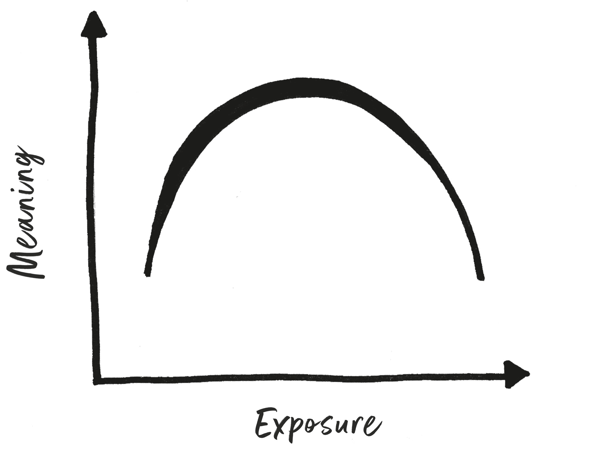
曲线的上升部分（表示意义的增加）称为”语义生成”，下降部分（意义的丧失）是”语义满足”。广告商的最佳点是曲线改变拐点的地方。这是术语、信息或短语在客户心中达到最佳意义和有效性的地方。
一旦达到这个临界点——即使它仍然令人难忘——它不再是创造行动、推动销售和唤起情感反应的有效信息。在这一点上——如果短语、词汇和声音最初被用来推动行动——是时候发挥创造力，想出一种新方法来穿透大脑的习惯化过滤器。
伟大的营销是不舒服的。它让休眠的大脑进入神经学狂热。
强大的营销需要观点、反应和情感。它不想被喜欢——它要求爱或恨。一旦它最终达到习惯化熟悉的程度，它就会改变形状，再次吸引观众的注意力。
词汇真的很重要，想法、政治家和品牌的命运可能由它们决定。知道如何以一种突破、抓住注意力并击败我们习惯化过滤器的方式进行沟通，将是我们生活中许多努力成功与失败的区别。你的大脑有一个深刻的史前生存工具，即它的习惯化过滤器，它允许它适应并屏蔽甚至最不可思议的痛苦、烦人或有臭味的刺激。为了被听到，以一种非重复、未过滤和非传统的方式讲述故事。
让人们感受到某种东西，无论如何。
你必须惹怒人们
这个法则将解释为什么惹怒人们是建立有意义品牌的不可避免后果，以及为什么”仇恨”是你说对话的信号。
为了准备这本书，我在洛杉矶的Barnes & Noble书店里闲逛，对出版界的趋势进行了一些观察研究。我最清晰也最令人震惊的观察之一是，大量的自助类书籍现在封面上都印着粗话！
这种在书籍封面使用粗话的趋势在2016年随着马克·曼森(Mark Manson)的《不在乎的微妙艺术》而爆发——曼森在我为这本书做准备时接受了我的采访，他告诉我这本书已经售出超过1500万册。这是最清晰的信号之一，表明作者们——他们在饱和的类型中竞争——正试图避免”语义饱和”，通过绕过大脑的”壁纸过滤器”来抓住你大脑的注意力。
到2018年，亚马逊畅销书榜前25名中包括——除了《不在乎的微妙艺术》——还有标题为《我他妈应该做什么晚餐？》、《吃鸡的50种方法》、《解放你自己》和《冷静下来》的书籍。档案数据显示，十年前，排行榜顶端的书籍标题中没有一本包含粗话。
莎拉·奈特(Sarah Knight)的编辑迈克尔·斯切尔班(Michael Szczerban)——他出版了她几本封面带粗话、销量数百万册的书籍，包括《冷静下来》，他说：
出版商和作者正在寻找方法来突破所有噪音并接触到人们。这似乎是一些书籍能够做到这一点的方式，当这种情况发生时，其他人试图追随这些足迹。有些人不喜欢这样，一些零售商因为标题中有粗话而不愿意销售这本书。但好处远远超过了坏处。
当他说”但好处胜出”时，他触及了营销最基本的原则之一，避免语义饱和，并被听到。
这是一个我所有营销团队十多年来都在利用、宣扬和执行的原则，以至于我们把它写在办公室的墙上：“让人们有所感受——无论如何。”
冷漠——当人们既不爱你也不恨你时——是营销人员最不盈利的结果。
对你的话语、你的信息或你的行动号召的冷漠是通向前一条法则中提到的可怕习惯化过滤器的最确定途径。
我采访了简·沃万德(Jane Wurwand)，德美乐嘉(Dermalogica)和国际皮肤学院的杰出创始人兼首席愿景官。沃万德是美容行业最受认可和尊敬的权威之一。在她的领导下，德美乐嘉已成长为领先的护肤品牌，被全球100多个国家的10万多名皮肤治疗师使用，因此她成为了美容行业最富有的女性之一。
她避免客户习惯化过滤器的头号营销秘诀是说一些和做一些”惹怒人们”的事情。她解释道：
我们必须准备好惹怒80%的人，否则我们永远不会激活20%的人。如果我们不这样做，我们就会中庸、平庸、平均、可口，但不可定义。那是产品。那不是品牌。品牌会引发情感反应。所以这成为了我们营销的口号：“我们需要惹怒80%的人并激活20%的人。”我们不需要每个人都喜欢我们。如果我们不稍微颠覆一点，那么每个人都会喜欢我们，但他们不会爱我们。如果有些人恨我们，有些人就会爱我们。
但要小心；所有情感策略都有保质期——情感钩子会有递减回报，因为大脑会习惯并降低其意义。
当比较2018年和现在粗话封面书籍的排行榜统治地位时，很明显这种粗话策略的有效性开始减弱。使任何情感信息有效的东西，最终使其流行，这通过习惯化的力量很快将其变成壁纸。
不要害怕用情感、大胆甚至分裂性的营销方法疏远人们——触发情感反应，吸引20%的受众并激怒80%的受众，可能比100%的人都冷漠的方法更有价值。
有些人会爱你。
有些人会恨你。
有些人根本不在乎。
你只会与前两者产生联系。
但与第三者不会。
冷漠是最不盈利的结果。
这条法则将向你展示如何通过对产品进行令人震惊的微小、通常免费的表面改变，在客户心中创造巨大的感知价值，它揭示了你最喜欢的品牌现在正在对你使用的心理技巧。
我的理发师已经操纵我三年了。
他每周同一天同一时间来我家，剪同样的发型。我一直坚持选择他，因为我一直相信他对细节有最大的关注，他是个完美主义者，所以我一直信任他为我剪头发。
有一天，在他的例行拜访中，我们遇到了第一次问题。剪完我的头发后，他脱下我的围裙宣布：“好了，伙计。”
直觉上，我觉得有什么不对劲。出于我无法准确表达的原因，感觉他匆忙剪了我的头发，没有像往常那样注意细节。
我回答道：“真的吗？这么快！”我怀疑地走到厨房的镜子前，开始仔细检查我的头皮，寻找他可能遗漏的地方。令人惊讶的是，这次理发和往常一样完美。
我仍然认为他匆忙完成了理发，于是走到手机前查看时间——他花在剪我头发上的时间和每周一样多。
困惑于为什么我莫名其妙地感觉被草率对待，我对他说：“不知道为什么，感觉真的很匆忙。”他困惑地看了我一会儿，然后，就像被一个爆笑的笑话击中一样，他爆发出无法控制的大笑。“我的错，我的错，伙计；因为我们聊得太多，我忘记了我的’修剪结束例行程序’！”他解释道。
修剪结束例行程序？他接着告诉我一个他称之为”最后一剪”的心理技巧，他在过去十年里一直对我和所有客户使用这个技巧。
他说他注意到，如果在理发结束时他假装检查完成的发型，然后做最后一次——虚构的——剪发动作，客户总是感觉他做得更好。
所以在每次理发结束时——包括我之前所有的理发——他都会做一个”修剪结束例行程序”，包括关闭电动理发器，长时间暂停，围着客户走一圈，仿佛仔细检查他们的头发，然后假装在他们的头发上做最后一次微小的剪发动作，最后宣布完成。
今天，他只是忘记了这个小程序，而我本能地感受到了。我感觉我的理发更差、匆忙或疏忽，仅仅因为他忘记了一个十秒钟的心理技巧，这个技巧潜意识地让我相信他极其注重细节。
实际上，他的”最后一剪”技巧对改善我的头发没有任何帮助——他承认在这个程序中他甚至不剪任何头发，但它确实大大改善了我的感知，让我觉得他做了彻底的工作。这就是”心理登月”的力量，这个术语由奥美的Rory Sutherland创造。
心理登月是一种相对较小的投资，可以大幅改善对某事物的感知。
心理登月证明，投资于感知几乎总是比投资于现实更便宜、更容易、更有效。
“如果你能在手机上叫车会怎样？”
这是Travis Kalanick和Garrett Camp在巴黎一个寒冷的夜晚互相问的问题。他们从美国来参加技术会议，无休止地等待出租车，经历着我们许多人都熟悉的痛苦：不知道你的出租车是否会来，或何时会来，真的很糟糕。他们那晚问的这个简单问题，源于不确定性和挫折感，将导致Uber的诞生，现在Uber是每月超过1亿人在600个城市和65个国家使用的默认打车应用。
在高压力情况下，当我们赶飞机、开会或参加活动时，每一秒都感觉像一分钟，每一分钟都感觉像一小时，每一小时都感觉像一天。这种情况产生的焦虑感是我们都能理解的；这就是客户不确定性带来的可怕焦虑。
减少客户的心理摩擦成为Uber的关键挑战，因此他们推出了一个完整的内部行为(数据)科学家、心理学家和神经科学家团队，被称为”Uber实验室”。
在他们的研究中，Uber实验室发现了几个影响客户对Uber满意度和对整体体验感知的关键心理原理：峰终定律、闲置厌恶、操作透明性、不确定性焦虑和目标梯度效应。理解这五个强大的心理力量使Uber能够完全重新设计整个行业，并创造了一个价值1200亿美元的企业。
峰终定律是一个认知偏差，描述人们如何记住一次体验或事件。简单来说，我们根据在高峰时刻和结束时刻的感受来判断一次体验，而不是通过对每个时刻的完美聚合平均值。关键是，这适用于好的和坏的体验！企业和品牌请注意：客户将仅根据两个时刻来判断他们的整个体验——最好的(或最坏的)部分，以及结尾。
这个观点帮助我们理解为什么假期开始时的糟糕航班对满意度的负面影响小于假期结束时的糟糕航班。为什么一顿美妙的晚餐会因为账单上的意外附加费而受到影响，以及为什么与配偶愉快约会夜晚结束时的两分钟分歧会影响你对整个晚上的记忆。
这也解释了为什么Uber司机被训练在行程结束时对你格外友善，就在你给他们评分和小费的前几分钟。
优步实验室引用了一项研究，表明忙碌的人比空闲的人更快乐——即使他们并非出于自己的意愿而忙碌（也就是说，你强迫他们参与某些活动）。事实上，即使是虚假的理由——一个虚假的借口——也能激励人们采取行动，这说明了我们对分散注意力和活动的渴望程度。这项研究的含义是，我们追求的许多”目标”实际上只是让自己保持忙碌的借口。
对于优步而言，这意味着如果他们能够通过提供观看或参与的内容来让等待的客户保持忙碌，这些客户会明显更加快乐，也更不容易取消乘车。
优步实验室团队没有仅仅让用户知道司机预计到达的时间，而是安装了几个引人入胜的动画——包括地图上的移动汽车，让客户在等待时有所观看——努力避免”空闲不快感”。
值得注意的是，优步引用的研究显示，大多数人会选择较长的等待时间——如果他们在等待期间能够做些什么——而不是无法让自己保持忙碌的短暂等待时间。这在一定程度上解释了为什么餐厅会在你等待时给你免费小食，为什么Netflix和YouTube等流媒体网站会在你悬停在视频上时播放预览，以及为什么Google Chrome安装了一个在失去连接时出现的T-rex游戏。
研究表明，让你的客户保持忙碌可以将客户满意度、留存率和转化率提高超过25%！
2008年打车充满了很多不确定性。客户无法知道他们的出租车何时到达（甚至不知道是否会到达），谁会来接他们，或者为什么需要这么长时间。那时，如果你上了一辆没有计价器的出租车，司机实际上会根据自己的猜测凭空确定价格。即使你上了一辆有计价器的出租车，你也会担心司机故意绕远路来增加车费。
这种缺乏透明度对客户体验是毒药；它滋生不信任，而不信任让我们对品牌产生怀疑、怨恨和不忠诚。
基于这些见解，优步实验室运用了一个叫做运营透明度的心理学原理，开始解释幕后进行的每个步骤，以显示等待期间的进度。他们包含了到达时间估算的计算，提供了车费计算方式的详细分解，为所有估算提供了理由，并在情况发生变化时提供快速更新——附带解释。
这些改变使请求后的取消率降低了11%，对于每年超过70亿次出行的优步来说，这是一个价值数十亿美元的改进。
2008年，达美乐比萨遇到了一个有趣的运营和客户体验挑战。等待比萨时间超过预期的客户会打电话给达美乐询问比萨在哪里。整个比萨制作过程随后会被中断，因为制作比萨的人会被接电话的人询问为什么会有延迟，而客户最终得到的是模糊和不确定的答案。打电话的客户在无意中延迟了自己比萨的配送，这是因为他们没有得到运营透明度。
一些比萨连锁店通过投资保温袋来保持比萨温度、雇佣更多员工和司机、对配送时间推出退款保证以及为慢配送提供免费面包条来应对这一挑战，但他们的电话仍在响个不停。
他们都忽略了问题核心的心理挫折——人们不想要更快的配送——他们想要减少配送的不确定性。
达美乐理解了这一点，在2008年，利用他们现有的内部订单管理软件，创建了现在著名的”达美乐比萨追踪器”，向客户显示他们的订单在五步流程中的确切位置。
这个小小的心理洞察和由此产生的创新改变了达美乐的业务。愤怒的电话骤降，客户满意度和留存率飙升，达美乐在此过程中节省并赚取了数亿美元。
发表在《自然》杂志上的研究表明，知道某些负面事情即将发生（例如，我们的比萨将延迟30分钟）比处于不确定性中（例如，我们不知道迟到的比萨在哪里）心理压力更小。这是因为我们大脑中试图预测后果的区域在面临不确定性时最为活跃——它处于紧张状态。正如罗里·萨瑟兰在他的书《炼金术》中解释的那样，航班上的”延误”提醒比”延误50分钟”提醒在精神上更令人恼火。
每天，超过300列新干线（子弹）列车在东京站的四个站台到达和出发，平均间隔约四分钟。列车在车站只停留十分钟，乘客下车需要两分钟，新乘客上车需要三分钟。
’TESSEI’是日本铁道公司的子公司，负责清洁这些新干线列车，为每天使用该服务的40多万乘客提供卫生环境。考虑到如此快速的周转时间，顾客经常抱怨这些列车的清洁和卫生问题——他们认为列车不可能在如此短的时间窗口内得到妥善清洁。
TESSEI的首席执行官矢部輝雄想要改变这种认知；他相信列车实际上非常干净——但一些顾客没有足够的可见度来相信这一点。因此，矢部并没有雇佣更多清洁工，而是决定让清洁工脱颖而出：他将员工制服的颜色从淡蓝色衬衫改为醒目的鲜红色夹克，并要求清洁工表演一场节目——现在国际上称为”七分钟新干线剧场”——来迎接进出站的乘客。
当列车驶入站台时，清洁工在车门旁列队，在列车进站时鞠躬。他们手持垃圾袋，迎接到达的乘客并感谢他们交出垃圾。工作人员然后快速穿梭在列车中，收集垃圾、清扫和消毒表面，完成后，清洁工在列车旁列队，进行第二次鞠躬，以示对即将离开的列车和新乘客的尊重。
不仅卫生投诉直线下降，而且据报告，清洁工——因为乘客对他们的尊重增加而激发了对工作的新自豪感——清洁得更彻底，更有快乐感，更有动力。后来被称为”7分钟奇迹”的这一举措将这条铁路线重新定位为世界上最清洁的铁路线之一。
这表明即使是卫生不确定性也可以通过心理学moonshot来纠正，并进一步证明了投资于认知几乎总是比投资于现实更便宜、更容易、更有效。
1932年，一位名叫克拉克·赫尔的行为科学家正在研究迷宫中的老鼠。使用连接到老鼠身上的传感器，他监测它们跑向食物奖励时的速度。赫尔观察到，老鼠越接近迷宫的终点——及其伴随的奖品——它们移动得就越快。
他称这一原理为”目标梯度效应”。
已被反复证明，最能激励我们的是我们离实现目标有多近：我们离成功越近，工作得就越快。
参与咖啡店奖励计划收集印花的参与者越接近获得免费饮品就越频繁地购买咖啡；为了获得礼品券而给歌曲评分的互联网用户在接近奖励目标时评分更多歌曲，如果LinkedIn用户看到显示他们离完成个人资料有多近的”个人资料强度”进度条，他们更有可能添加个人资料信息。
Uber实验室通过他们地图的设计解决了这个问题，该地图极力强调汽车离到达接送点和目的地有多近。
所有这些心理学技巧使Uber成为世界上最著名的出租车公司，在国际上主导着他们的行业。由于Uber实验室的心理学专家所做的工作，该公司现在表示只需要2.7次乘车就能让某人成为永久客户。
moonshot这个术语来自阿波罗11号太空飞行项目，该项目于1969年将第一个人类——尼尔·阿姆斯特朗——送上了月球，阿姆斯特朗将其描述为”人类的一大飞跃”。心理学moonshot是利用心理学力量的一大飞跃。
当我采访罗里·萨瑟兰时，他说：
通过让火车快十倍来提高客户满意度很困难；通过使用心理学原理让火车感觉上有趣十倍来提高客户满意度要容易得多。我不认为像英国政府这样的政府需要花费500亿英镑建造更快的火车，如果他们只是让你在火车上时的Wi-Fi工作得更好。看起来在接下来的50年里，最大的进步不会来自技术改进，而是来自心理学和设计思维。
值得注意的是，大多数电梯中的”关门”按钮实际上不起作用。出于安全和法律原因，电梯门被设计为在一定时间后关闭。据国家电梯工业公司前执行董事卡伦·佩纳菲尔说，“乘客无法让电梯门关闭得更快。”但这种虚幻的安慰剂创造了控制的印象，减少了不确定性，让你感到更安全，从而提高了客户满意度。
一些洗手液制造商在他们的产品中加入薄荷醇、薄荷或桉树，仅仅是为了在你的手上产生刺痛效果，这创造了一种强有力的心理效应——在药物和补充剂中也能看到——因为你能感受到它在起作用。
麦当劳最近部署了他们自己的心理学moonshot，安装自助服务亭和显示订单处理过程的大屏幕，并在客户下单后给他们票据——利用目标梯度效应——在这个过程中减少了不确定性、等待时间和挫折感。这一变化为该品牌产生了一系列moonshot级别的结果。
正如麦当劳前总裁唐·汤普森(Don Thompson)所说，“人们先用眼睛吃饭”，视觉上看到每一个商品——而不是列表上的文字——让你更有可能想要它，这在过去受限于店内展示空间时是无法实现的。此外，研究表明使用触摸屏创造了新颖性和趣味性，从而增强了消费者对更加放纵购买的偏好。而且，没有了必须直接告诉收银员你那令人尴尬的冗长、贪吃且可能很详细订单的潜在羞耻感，顾客在心理上感到更安全，会订购更多食物。
这个相对较小的变化为这个全球特许经营企业带来了数十亿美元的收益：销售额上升了近10%，客户满意度提高了，尽管生产流程没有改变，人们对这家”快餐”店有多”快”的认知却受到了积极影响。
心理登月计划让品牌能够通过微小的、通常免费的表面变化创造巨大的感知价值。这是企业家、营销人员和创意人员在尝试创造——价值的错觉——时应该首先关注的地方。
不要对现实发动战争，投资于塑造认知。
我们的真相不是我们所看到的。
我们的真相是我们选择相信的故事。
摩擦力可以创造价值
这条法则将向你展示一个反直觉的真相：有时如果你让客户的体验变得更糟，他们会更想要你的产品。
在我担任营销CEO期间，我参加了无数次与客户可口可乐的品牌营销会议，他们的营销高管似乎对红牛和更广泛的能量饮料行业的成功感到困惑不解。
含糖饮料销量急剧下降，然而同样不健康、味道难闻的能量饮料类别却在飞速增长。是什么让一个类别比另一个类别增长得如此成功？我们的研究发现，不同类别的客户有不同的期望，而不同的期望带来不同的心理登月计划。
在我与罗里·萨瑟兰(Rory Sutherland)的对话中，他指出红牛通过故意让它taste bad来实现其增强表现和”给你翅膀”的心理期望。因为它尝起来更像药物而不是令人愉快的汽水，他们说服了客户相信它含有强效、有效的化学物质。让东西taste”更好”可能会让它们变得不那么受欢迎——这取决于期望。
我最亲密的朋友之一创立并经营着欧洲增长最快的运动营养品牌之一。他经常向我坦白，他们面临的最大产品挑战是他们的产品taste太好了，以至于客户根本不相信它们对他们有好处。有一次，他们曾认真考虑让产品taste更糟来试图增加销量。
这些例子证明让事情变得更容易并不一定是心理登月计划的路径；有时你必须做相反的事：增加摩擦力、等待时间和不便，来实现同样的感知价值增长。
通用磨坊公司(General Mills)在1950年代以著名的贝蒂·克洛克(Betty Crocker)品牌推出了几种蛋糕粉。要制作蛋糕，你只需加水、搅拌并烘烤。这是一种万无一失的蛋糕粉。它包含奶粉和鸡蛋，不可能出错。当蛋糕推出时，期望很高。但产品没有成功，反响充其量只能算温和。
通用磨坊不明白哪里出了问题。它想为忙碌的妻子和母亲节省时间，但不知怎么的这个想法失败了。它雇佣了一个心理学家团队来调查。他们的结论是，尽管与从头开始制作蛋糕相比，该产品节省了时间和精力，但美国妻子和主妇对她们花了数小时烘焙而实际上没有的假设感到内疚，或者对不得不承认她们走了捷径而没有付出努力感到内疚，所以她们回到了传统烘焙。
通用磨坊可能考虑过一个广告活动来解决这个问题，但在心理学驱动下，他们走向了另一个方向——违背所有营销传统智慧，朝着心理登月计划前进。他们从混合物中取出鸡蛋，并在包装正面印上”加一个鸡蛋”。这种”减法技巧”造成了更多摩擦，使产品变得不那么方便，让客户花费更多时间——客观上导致了一个价值较低的产品——但这样做让烘焙者感到自己更有价值，因此销量飙升。
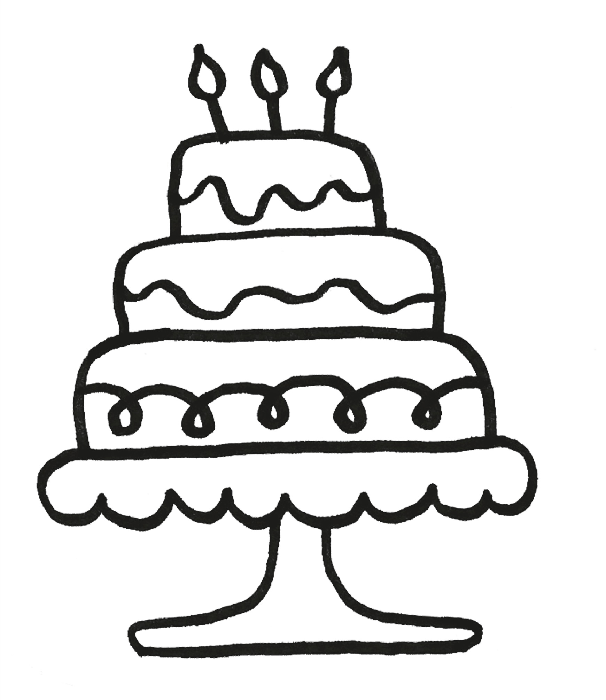
类似地，每当餐厅给我带来生牛排和热石头让我自己烹饪时，我很清楚他们是在有意或无意地运用一个强大的心理登月计划。
每个人对牛排的喜好都是极其特定的——这意味着即使在最高端的厨房里，牛排也是退菜率最高的食物之一。询问顾客自己烹饪食物可能会提高他们的满意度和对整体体验价值的感知，这看起来不合逻辑，但当热石板出现时，这正是发生的事情。
通过提供生肉，他们减少了我的等待时间，为厨师节省了时间，通过让我按照自己喜欢的方式（三分熟）烹饪牛排来增加我满意的机会，让我有种在餐食中投入了努力的感觉，减少投诉和退菜，并通过让我保持忙碌来避免顾客的闲置。在这个心理学moonshot中，操作透明度、闲置厌恶和goal-gradient效应同时发挥作用！
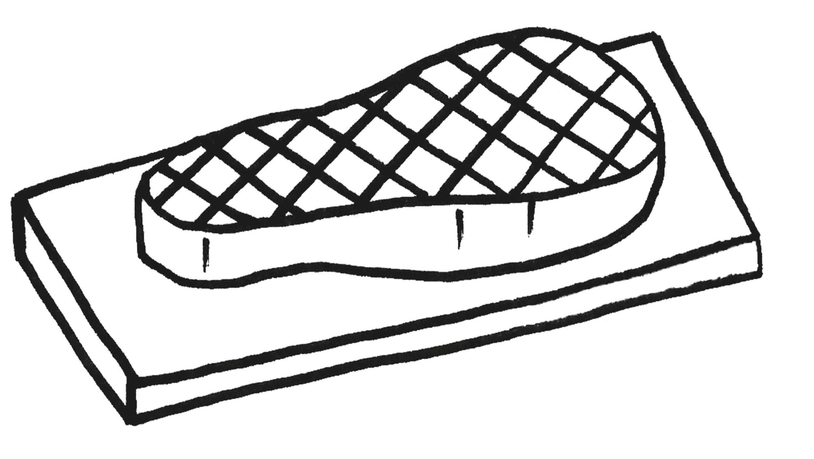
航班、酒店和保险聚合网站明白摩擦可以创造价值。他们发现网站上更快的搜索时间往往导致更少的销售。他们现在人为地增加搜索时间，并显示他们正在搜索的所有网站，试图说服你他们已经进行了彻底的搜索，所以你不必去其他地方寻找。这种策略带来了更多的销售、更好的留存率和更高的客户回购率。
摩擦可以创造价值似乎是荒谬的，但部署心理学moonshots的公司明白人类不是逻辑的——他们在决策和行为上是非理性的、不合理的和根本不合逻辑的。因此，如果你要成功影响他们，有时你必须创造、产生和说一些没有意义的东西。
“价值”并不存在。
它是我们通过满足期望达到的一种感知。
这个定律解释了产品向消费者展示的方式如何极大地影响他们对其价值的感知。
一个单一的、微不足道的错误粉碎了我对最喜爱品牌的迷恋。
你通常会发现我从头到脚都穿着这个特定品牌的服装。几年前，在发现这个创始人的故事、他的愿景、他对细节的不懈投入、创造力、艺术天赋，以及他倾注到每件杰作中的技术魔法之后，我爱上了这个品牌。这个品牌为日常穿着打造独一无二的设计，价格相当昂贵。
在一个宿命的日子里，当我随意浏览社交媒体时，我偶然发现了创始人发布的一个视频。在视频中，他参观了中国的生产线，他的创作在那里变成现实。这个视频旨在炫耀运营的巨大规模和品牌的急速崛起，通过展示制造了多少产品、如何制造它们，以及管理生产线的流程。
就在那一瞬间，魔法被打破了；品牌对我施加的迷人幻觉消失了。
让我震惊的不是品牌在中国生产的事实，也不是制作服装的工人面孔，甚至不是生产线的条件。相反，是我在观看视频时正穿着的那双鞋子，从一台巨大的机器中批量生产出来，被扔进数千双相同鞋子的堆里的景象。是我当时正穿着的那件T恤，随意堆叠在一个巨大的垃圾桶式容器中数千件其他T恤之上，衬衫像溢出的垃圾桶一样从边缘倾泻而出的景象。
尽管这个品牌从未明确做出这样的声明，但我迷恋的心智一直认为他们的产品是独特的艺术作品，每一件都是由忠诚的创始人亲手精心制作的。从逻辑上讲，我本来会猜测某处必须涉及大规模生产，但这些事情不受逻辑支配——它们是我们基于呈现给我们的证据选择相信的故事。直到那时，这个品牌编织的唯一叙述是关于艺术性、排他性和浪漫的。
某样东西的包装方式对它如何被接收有很大影响。某样东西如何被框架化影响消费者如何感知和评价品牌。在这一刻，我最喜爱品牌的框架不可逆转地改变了。
这不是一个最近的行为发现。1970年代著名的百事可乐挑战活动要求顾客用普通的白色杯子以及品牌罐装和瓶装来盲测百事可乐和可口可乐。人们在用杯子喝时更喜欢百事可乐，但令人惊讶的是，当用瓶子或罐子装时，他们更喜欢可口可乐。饮料的框架实际上改变了消费者品尝到的味道。
如果你走进当地的电子产品商店，你很可能会发现自己置身于一个令人不知所措的丛林中，电线、小设备和电池从地板到天花板层层堆叠。产品销售中的传统思维是展示的商品越多，销售的机会就越大。这是一种非常合乎逻辑的思维方式，但苹果公司知道人类远非合乎逻辑，还有其他更重要的主导心理力量。
世界上每家苹果零售店都展现了框架(framing)的惊人力量，在不知不觉中说服购物者花费数千美元购买一个小小的电子设备——比如iPhone——是值得的。
他们将店铺设计得更像艺术画廊——以其高价值、独特作品而闻名——而不是杂乱的电子产品零售店。他们的行为科学家知道，所创造的框架将影响其中产品的价值。通过只展示少量商品，他们运用了稀缺性的力量——一种框架形式——这决定了当供应看起来有限时，需求以及产品的感知价值会增加。我们都直觉地知道零售空间很昂贵，因此通过在每个苹果产品周围留下大量空白空间，他们在表明每件商品都如此有价值，值得承担这种费用。在心理上，我们将产品周围的自由空间的价值注入到产品本身——就像一件艺术品。苹果将其产品框定在一个诱人的心理舞台上。
为了说明某样东西周围的框架在改变感知方面有多强大，看看这个视觉例子：
我是WHOOP公司的投资者和大使，这是一家健康监测可穿戴设备公司，跟踪您的关键健康指标。该公司最近估值36亿美元，在其类别中占主导地位，客户包括从克里斯蒂亚诺·罗纳尔多到勒布朗·詹姆斯和迈克尔·菲尔普斯等各界人士。
它在一个充满巨头和庞大营销预算的类别中获胜——苹果、Fitbit、Garmin——部分原因在于他们对框架的天才关注。
WHOOP的首席执行官告诉我，公司一直抵制所有在其腕带上添加时间显示的呼声，尽管这很容易实现，正是出于这个原因。WHOOP现在是其类别中唯一一款领先的健康可穿戴设备或腕带，没有屏幕且不向佩戴者显示时间。
为什么？因为他们认为添加屏幕会改变客户对设备的感知，从运动员使用的精英健康设备变成一块手表。添加客观上有价值的东西——知道时间的能力——会降低产品的心理价值。在心理登月(psychological moonshots)的世界里，少往往就是多，一个词、一个调整或一个决定可以对产品价值感知产生巨大影响。
2019年，我建议一家大型全球B2B公司禁止使用”销售员”这一职位名称，停止使用”销售”一词，用”合作伙伴”团队取而代之。更多人回复了他们的邮件，销售额增长了31%。正如我所怀疑的，职位名称中有”销售”一词，会让您联系的人相信您会纠缠他们购买他们不想要的东西——相反，“合作伙伴”一词的框架暗示这个人是您团队的一员。
几年前，埃隆·马斯克向动物权利协会做出承诺：特斯拉汽车不再使用皮革。这位企业家信守诺言，从特斯拉Model 3开始，其汽车内饰采用了奇特地被称为”纯素皮革”的材料。
创造了”心理登月”这一短语的广告传奇人物罗里·萨瑟兰告诉我，特斯拉本能地理解心理登月对价值感知的强大影响：他们没有称其新汽车座椅为”塑料”——实际上就是塑料——而是急切地抓住”皮革”一词及其奢华内涵，以保持其汽车内饰的感知价值。像这样的框架是人们在不改善产品或体验现实的情况下实现心理登月的最常见方式之一。
框架不是关于谎言和欺骗；而是关于知道如何通过最真实和引人注目的视角来展示您的产品或服务。
例如，说食品90%瘦肉比说它含有10%脂肪更有吸引力。两者都是真实的，但一种框架在心理上更有吸引力。
这些例子说明了品牌、营销和商业中一个重要但常被遗忘的原则：现实不过是感知，语境为王。
您所说的，不是您说的全部。您所说的取决于您的信息、产品或服务存在的语境。如果您改变框架，您就改变了信息。您的客户将听到一切——包括您没有说的事情。不要只关注您说什么，要关注您试图说的话周围的框架如何积极或消极地扭曲您的信息。
聪明的框架将平凡变神奇。
善用金发姑娘效应
这个定律向你展示了一个强大而简单的销售技巧，可以让你销售的产品在不改变价格的情况下看起来更有价值。
“他为什么要带我看我不感兴趣的房子？”我问我的助理Sophie，她正在念明天与房地产经纪人Clive看房行程的安排。“我不确定；他坚持要你看各种不同的选择，”她回答道。
几天后，我提交了购买Clive向我展示的三套房产中第二套的报价。谢谢你，Clive。
但故事并没有结束；几个月后，在研究品牌和营销人员用来影响我们行为的不同心理技巧时，我偶然发现了一种叫做金发女孩效应(Goldilocks effect)的现象。
金发女孩效应是一种”锚定”类型。
锚定是一种认知偏差(cognitive bias)，个体在做决定时过度依赖(rely too heavily)看似无关的信息(irrelevant information)（“锚点”）。
在金发女孩效应的背景下，通过在你希望销售的选项旁边呈现两个”极端”选项，你可以让中间选项看起来更有吸引力或更合理。
在大多数情况下，某物的”真正”价值不过是观点——所以我们在情境和定价中寻找线索来帮助我们做决定；当金发女孩效应发挥作用时，我们认为最昂贵的选项是过度的奢侈。相比之下，我们将最便宜的选项视为有风险的、不充分的和质量较低的，而在中间我们有我们认为最好的选项——我们相信它必须具有其他两个选项的综合优点：这是一个安全的选择，性价比高且质量好。
回想我与Clive的看房经历，我意识到我只要求他向我展示第二套房产，但他坚持要给我看三套。他向我展示的第一套房子太小了，而且可以说是定价过高。第二套房子宽敞，价格只比第一套稍贵一点，而第三套房子极其昂贵，在同一地区，似乎定价过高得离谱。像被Clive控制的木偶一样，我当然立即选择对第二套房产出价。
好奇Clive是否故意操纵了我，我给他发了一条短信，问他是否熟悉金发女孩效应。他首先回复了一个笑脸和眨眼的表情，然后说：“永远不要只给人们展示一个选择！”
狡猾的家伙。
Clive并不是唯一使用金发女孩效应来影响你行为的人、品牌或组织。松下在1992年利用了这一点，除了现有的179.99美元和109.99美元的微波炉外，还提供了一款199.99美元的高端微波炉。随后成为中等价位选择的179.99美元微波炉销量猛增，这让松下的市场份额达到了60%！
一个实验让参与者在巴黎全包假期和罗马全包假期之间选择。巴黎获胜。
但随后进行了第二次调查，这次增加了一个罗马假期的选择，除了咖啡外所有东西都全包。完全全包的罗马之旅不仅比不包咖啡的版本更受欢迎，也比全包的巴黎之旅更受欢迎。
在提供信息很少的情况下，大脑会寻找关于三个选项价值的上下文线索。“罗马不含咖啡”选项的存在提供了这样一个线索，并暗示罗马之旅如此有价值，以至于他们从中移除了一些东西，因为这是一个如此好的交易。
为了让金发女孩效应起作用，品牌通常将中等选项的价格定得比最低价格高，但远低于最昂贵的价格。例如，销售纽约往返航班的航空公司会对经济舱收费800英镑，商务舱2000英镑，头等舱8000英镑。许多客户会认为2000英镑的机票是最有价值的，尽管它显然不是最优价格。
心理登月定律中描述的一切都突出了一个驱动我们讲述故事和提供体验的根本谬误：我们相信自己是理性的——每次我告诉你你的决定没有意义时产生的认知失调就是证据——所以当我们为他人创建营销时，我们也假设他们是理性的，因此我们倾向于努力改善现实，而不是利用心理学这个更容易的任务。
我们的决定不是由理性驱动的，而是由社交线索(social cues)、非理性恐惧(irrational fear)和生存本能(survival instincts)产生的无意义驱动的。
优秀的营销人员、storytellers和品牌建设者明白，追求心理登月不是一项恶意的、不道德的或虚假的事业。这些心理感知对你不利，创造了通向不利感知的捷径，这是公平的——所以你也有机会使用相同的力量将这些词语、情境、偏见和感知转向对你有利，创造通向感知的捷径，让世界看到你创造的事物的真正美丽、价值和重要性的更真实代表。
心理学月球计划中一切都是公平的。
人们倾向于基于背景环境做出价值判断，因此提供一系列选择——包括经济版、标准版和高级版产品——可以讲述一个故事并影响潜在客户对你标准产品的认知。
背景创造价值。
让他们尝试，他们就会购买
这个法则揭示了让某人瞬间爱上产品的最简单方法。
“不，史蒂文叔叔！这是我的！”我的侄女大声喊道，眼中噙满泪水，当我羞怯地要求她归还我刚刚给她的圣诞礼物时。
在为我的整个家庭，包括我的侄女和侄子，疯狂包装礼物的过程中，我犯了一个新手错误，忘记在每份礼物上标注收礼人的姓名。结果，我无意中给我的侄女送了一个巴斯光年的玩具人偶——我侄子最喜爱的角色。我现在即将眼睁睁看着我的侄子拆开一份包含艾莎娃娃的礼物——我侄女的心头好。
当我结结巴巴地寻找合适的词语，试图纠正这种情况时，房间里陷入了沉默。我的侄女紧紧抱着巴斯光年贴在胸前，眼神中闪烁着坚定的决心。“但是……但是，”我结结巴巴地说，“你看，这里有一个小小的混淆。巴斯实际上是给你弟弟的！”
房间里的紧张气氛令人窒息，我侄女的眼神在我和她珍爱的玩具之间游移。我的侄子察觉到眼前展开的戏剧性场面，停止了拆礼物的动作，伸长脖子想更好地观看这场景象。
我承认失败了。
“好吧，你留着它。”我不准备与一个泪眼汪汪的三岁小女孩的钢铁意志谈判——这种戏剧性场面简直不值得。
令我惊讶的是，我的侄子现在已经拆开了他全新的艾莎娃娃，看起来也很满足。他没有抱怨，没有试图交换，他抱着娃娃的深情就像他姐姐抱着她的新巴斯光年玩具一样。他们都爱上了自己得到的礼物，但我知道如果我在玩具店给他们选择的机会，他们会选择另一个玩具。
这次圣诞礼物包装的失误让我学到了一个关于行为心理学家称之为”禀赋效应(endowment effect)”现象的强大心理学课程。禀赋效应是一种认知偏差，它使人们仅仅因为拥有某个物品就高估其价值，而不考虑其客观价值。换句话说，个人往往比对他们不拥有的相似物品更依恋他们认为自己拥有的物品。这是品牌一直在我们所有人身上部署的一个强大心理技巧。
苹果就是这样一个品牌：每家店都为顾客提供互动体验，所有产品都开放展示并可触摸。
此外，他们坚持每台展示设备都插上电源，加载应用程序并连接到互联网，他们将所有屏幕调整到完全相同的角度以吸引更多潜在体验。他们严格训练员工不要催促顾客购买（通过确保楼层员工不赚取销售佣金来保证）或要求顾客离开，从而提供无限制的时间来试玩产品。
在他们的”一对一”工作坊中，目标是赋予顾客自己找到解决方案的能力；没有顾客的许可他们不会触碰电脑。
这可能听起来只是善意或良好的礼貌，但我向你保证这是更加精心计算的东西。苹果正在唤起两种潜意识心理咒语的力量——我们在法则11中看到的单纯曝光效应(mere exposure effect)，通过增加消费者对产品的接触来增加对产品的喜爱，以及禀赋效应，通过给予消费者对产品的拥有感来增加产品的感知价值。简单地说，单纯曝光效应让你更喜欢它，而禀赋效应让你更高估它的价值。
苹果相信创造”拥有体验(ownership experience)”比硬性销售更强大。苹果商店内置的多感官体验正好提供了这种体验。
如此强大，以至于伊利诺伊州总检察长办公室在2003年向假日购物者发出警告，要求他们在购物时小心不要像拥有产品一样拿着产品。虽然这个警告听起来有点奇怪，但它的基础得到了30年研究的支持。
在威斯康星大学2009年进行的一项研究中，学生组被要求评估两个产品：一个弹簧玩具和一个马克杯。在第一个实验中，一组被允许触摸物品，另一组不被允许。在下一个实验中，一组被允许想象他们拥有这个物品，另一组不被允许。非常特别的是，触摸物品或甚至只是想象你拥有它都增加了参与者的价值估计。
苹果允许顾客无限制停留和试玩的策略也是经过深思熟虑的，基于进一步的研究表明顾客体验产品的时间越长，他们购买它的意愿就越大。
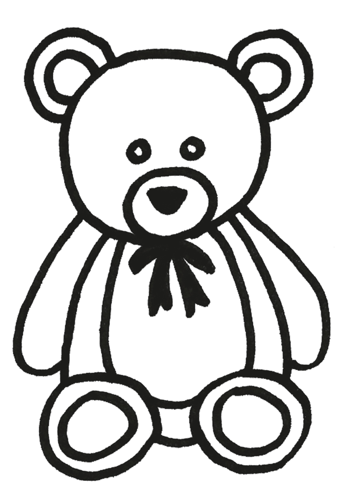
一家在全球拥有400个门店的公司Build-A-Bear，专注于提供高度多感官、引人入胜的互动体验。在店内，儿童可以选择、设计并参与制作属于自己的毛绒动物。虽然Build-A-Bear不称为”商店”，而是称其门店为”工作坊”，每只熊上方都挂着一个标牌，利用单纯接触效应(mere exposure)和禀赋效应(endowment effects)，鼓励儿童触摸这些熊：装扮我，拥抱我，听听我，蓬松我，选择我！
关于所有权效应的更多证据来自1984年的一项研究，研究人员向参与者赠送彩票或两美元。稍后，每个人都有机会用彩票换钱或用钱换彩票。只有少数参与者愿意进行交换。
在现实条件下情况如何？杜克大学的丹·阿里利(Dan Ariely)和齐夫·卡门(Ziv Carmon)研究了日常生活中的禀赋效应。杜克大学最受欢迎的运动是篮球——球场空间不足以容纳所有想观看比赛的人。因此，大学创建了一个随机抽签系统来分配每场比赛的门票。
关键的是，卡门和阿里利在大学篮球锦标赛”疯狂三月”的最后一轮期间进行了实验，此时对门票的需求比平时更高。经济学家调查的学生都在大学场地上耐心等待参加抽签。
抽签后，中奖学生被询问如果有人想购买他们的门票，他们愿意以多少价格出售。没有中奖的学生被询问他们愿意为一张门票支付多少钱。
平均而言，没有门票的人说他们愿意支付最多175美元。拥有门票的人说他们不会以低于2400美元的价格出售！因此，拥有门票的人对门票的估值几乎是没有门票的人的14倍。
占有欲可以追溯到人类历史的数千年前，在我们的一些灵长类近亲中今天仍能观察到。
2004年，两位经济学家使用黑猩猩、果汁冰棒和管装坚果酱进行了实验。选择这些食物是因为它们不能很快吃完，能持续足够长的时间用于交易目的。当给出选择时，58%的黑猩猩更喜欢坚果酱而不是冰棒。不出所料，在被给予坚果酱的黑猩猩中，近79%选择不用它换冰棒。但在被给予冰棒的黑猩猩中，58%拒绝用冰棒换坚果酱。
经济学家得出结论，禀赋效应可能在人类进化早期就根植于人类之中。但为什么早期人类如此保护他们拥有的东西，不愿意交易或为他们尚未拥有的东西付费？答案似乎是与交易相关的风险——特别是如果对方行为不公平——是一个严重的威慑因素。我们的祖先没有可靠的方法来执行交易条件，因此他们降低了愿意为物品支付的价格（交易的价值），以补偿最终一无所获或得到比应得更少的风险。
让客户拿到你的产品仍然是销售人员、营销人员和品牌的一个极其强大的工具。下次你试图让某人爱上某样东西并为其支付好价钱时，不要只是告诉他们它有多棒，利用禀赋效应的力量，学习苹果公司的做法：让他们触摸它、摆弄它、试驾它、试用它。如果你这样做，就像我的侄女一样，他们可能就不想把它还回去了。
通过所有权的镜头，平凡变成非凡。
争取前五秒
这个法则证明了为什么在营销、商业和销售中，你的成功往往取决于短短五秒钟。如果你把这五秒钟做对了，你就会成功。如果没有，你就会失败。
*尴尬的十秒钟停顿，不祥地盯着观众。*
“这正是你被学校开除的原因；你无法坚持任何你不相信的事情。而且你总是认为你知道更好的方法。在你回大学之前，不要打电话给我或任何家人！”说完，我妈妈挂断了电话。
这四句话是我在2015年到2020年间，在世界各个角落的300多个舞台上说出的第一句话。这些是我妈妈在我打电话告诉她我要辍学创业那天对我说的非常情绪化的话。
我没有自我介绍。我没有说出我的名字或者我所代表的公司。我知道，在最开始的五秒钟内，观众的习惯性过滤器要么会调谐并给我他们的注意力，要么决定我是背景，调出并将注意力转移到别处。正是因为这个原因，任何故事的前五秒钟，都是生死攸关的时刻。
正如我之前说过的，我的营销公司从未有过外向销售团队，但我们吸引了世界上最大的品牌作为客户——亚马逊、苹果、三星、可口可乐——并创造了九位数的收入。
如果我必须把我们的成功归结为一件事——尽管第10法则中提到的蓝色幻灯片也很接近——毫无疑问，那就是我们讲述了最引人入胜、最令人惊讶和最富有情感的故事。我从来不会”推销”。我从来不会用图表、统计数据或数据轰炸观众。我所做的每一场演讲开始时、听起来和结束时都更像是《哈利·波特》中的情节，而不是销售演示。
当我对某事感到无聊时，我和大多数人一样，注意力持续时间极短——如此之短，以至于我因为在课堂上睡觉、逃课而被学校开除，出勤率只有31%。然后我去了大学，在第一堂课上就睡着了，第二天就退学了，再也没有回去。我想正因为如此，我自然而然地理解了讲述能够吸引注意力的故事是多么重要——有人用单调的声音长时间对我说话会触发我大脑的打盹按钮。
但出于某种原因，大多数在舞台上讲述的故事仍然极其无聊。在花费数年时间流血流汗创造某样东西之后，那个东西的创造者几乎总是陷入一个妄想的、以自我为中心的泡沫中。他们开始相信他们所创造的东西是如此革命性、迷人和重要，以至于它本身就值得世界的全神贯注。
从这种扭曲的、自我陶醉的角度来看，那个东西的创造者在向世界讲述他们的故事时可能陷入的最常见和最危险的陷阱之一就是相信他们的观众像他们自己一样关心他们、他们的产品、他们的辛勤工作和他们的”创新”。当这种情况发生时，他们讲述的故事变得逻辑冗长且乏味。
相反，当一个讲故事的人理解没有人——绝对没有人——像他们关心自己一样关心他们（没有人在乎他们的牙膏多一点薄荷味，他们的营销机构多一点大胆，或者他们的服装品牌多一点合身）时，他们会讲述引人入胜的、富有情感的、有力的故事，让你别无选择，只能把全部注意力投入到他们说的每一个词上。
如果你不熟悉MrBeast，他可以说是世界上最著名的YouTuber：在撰写本文时，他拥有超过1.5亿订阅者，300亿视频观看量，据报道他每年从视频中获得数亿美元的收入。他最近宣布他将成为第一个亿万富翁YouTuber——我倾向于相信他。
他是如何做到的？用他自己的话说，每个视频的前几秒是最重要的——在他制作的每个视频的开头五秒钟内，他提供了他所谓的”钩子”——一个清晰、引人注目的承诺，解释你为什么应该观看这个视频，这绕过了你大脑的习惯性过滤器，让你想什么鬼？从而防止观看者调出并点击离开。
他说你不应该从其他任何事情开始；你不应该自我介绍，“过度解释任何事情”，甚至不应该有大多数视频创作者选择的典型B-roll镜头配音乐。他基本上在观众面前大喊一个令人信服的承诺，这让他们的注意力持续足够长的时间，让他能够兑现那个承诺。以下是他视频前五秒钟的一些例子：
视频1，前五秒：
我在现实生活中重现了《鱿鱼游戏》的每一个场景，这456个人中谁存活的时间最长，就能赢得45.6万美元！（3.5亿观看量）
视频2，前五秒：
我把100个人放进一个巨大的圆圈里，谁最后离开圆圈，就能赢得50万美元！（2.5亿观看量）
视频3，前五秒：
我在这架私人飞机上花了250万美元，让11个人把手放在上面。谁最后把手从飞机上拿开，就能赢得这架私人飞机！（1亿观看量）
在过去的十年里，我因为一遍又一遍地重复一个假设场景而闻名。每当我面对一个遗憾地陷入那种妄想的以自我为中心的泡沫的营销团队时——当他们陷入高估世界对他们有多关心的陷阱时——我会告诉他们这个：
想象一下，你试图接触的客户叫珍妮(Jenny)。想象一下现在，她刚刚离开家去上班，经过了一个漫长的不眠之夜和与丈夫的争吵。该死，她爆胎了，刚刚在倾盆大雨中在高速公路上抛锚；她现在上班迟到了，她很生气，她很累，而且时间紧迫。她在路边拿出手机打电话给救援服务，她看到的第一件事就是你的营销信息，你的广告，你的内容。在那一刻，你必须对她说什么才能让她注意到你？让她点击，让她购买。无论那个信息是什么，这正是你需要对所有客户说的，因为如果你能在路边的那种情况下得到珍妮，你就能得到其他所有人。
当你思考讲故事的技巧时，首先要迎合你最不感兴趣的客户。正是出于这个原因，你可能已经注意到这本书中的每一条法则都以一个引人注目的五秒钟陈述开始，说明你为什么应该阅读它。我知道你们大多数人会跳过这本书的一些章节，但通过在每条法则的前五秒钟给你一个引人注目的承诺，我想章节保留率至少增加25%——而在商业中，25%的增长，特别是在具有复合回报的领域，将完全改变你的轨迹。如果我在台上做300场演讲，询盘增加25%意味着在十年的过程中可能有数亿美元的收益——仅仅是通过专注于前五秒钟。
“你的注意力持续时间就像金鱼一样。”
这句话一直被用来嘲笑注意力持续时间短的人，但如果最近的研究是正确的，这实际上可能是一种赞美。
在微软于2015年领导的一项研究中，加拿大研究人员监测了2000名参与者的大脑电活动。研究显示，在过去15年中，人类的平均注意力持续时间已从12秒下降到8秒。
为了将此置于透视中，同一篇文章报告称金鱼的注意力持续时间为9秒：比人类整整长一秒！所以如果有人将你的注意力持续时间与金鱼进行比较，现在事实上恰当的回应是”谢谢”。
我们越来越容易分心。平均而言，办公室工作人员每周拿起手机超过1500次，相当于每天3小时16分钟，并且每小时检查电子邮件收件箱30次。
平均网页访问持续时间仅为10秒左右，英国通信监管机构Ofcom在2018年8月报告称，人们在醒着的时候几乎每10分钟就检查一次智能手机。
我采访了约翰·哈里(Johann Hari)，畅销书《被偷走的专注力》(Stolen Focus)的作者，这是一本关于人类注意力持续时间下降的书，他对我说：
我最终环游世界。我采访了世界上250位关于注意力和专注力的顶尖专家，从莫斯科到迈阿密；从里约热内卢的贫民窟——那里的注意力以特别灾难性的方式崩溃了——到新西兰的办公室。我们面临着真正的危机。我们的注意力持续时间确实在缩短。我们生活方式的变化正在向每个人的注意力能力泼酸。我们有一种注意力致病文化，一种对我们所有人来说都很难形成和维持深度专注的文化。这就是为什么需要深度专注形式的活动，比如读书，在过去20年中急剧下降。
在过去十年中，我制作了数千个视频，这些视频的保留图表讲述了一个可预测且往往令人沮丧的故事：在我制作的几乎每个超过五分钟的视频中，我在开场几秒钟内就失去了40-60%的观众，在每个社交平台上都是如此。
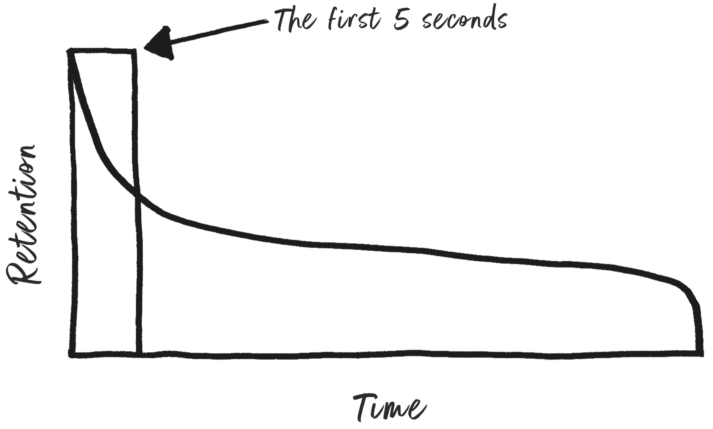
这证明了前五秒钟不成比例地决定了后续每一秒的命运。这对社交媒体内容、演讲、视频和任何其他争夺你注意力的媒介都是如此。
五年前，我的营销公司受托推广一个活动。这是一个搞笑的两分半钟视频，制作成本数十万美元，我们的工作是确保它被看到。
当公司向我们发送要分发的素材时，我们最初建议他们重新编辑视频，使开头五秒钟更具吸引力。在他们发送给我们的素材中，前五秒钟是一个地点的建立镜头，上面叠加着品牌标志。
我们被指示视频需要按原样分享，所以我们遵循了他们的指示，在各种高参与度的社交媒体渠道上分享了它。结果至少可以说是令人失望的。
当客户问我为什么表现不佳时，我们告诉他们开头五秒钟毁掉了整个视频。我们提出重新编辑前五秒钟，并向他们保证这五秒钟正在改变接下来两分半钟的命运。
幸运的是他们同意了。重新编辑的视频走红了，在七天内在我们的社交媒体渠道上获得了超过300万次观看。对前五秒钟的微小改变意味着150%更多的人继续观看超过十秒钟标记，并保持观看足够长的时间来享受视频，与视频互动(这使算法分享它)并直接在他们自己的动态上分享它。
我可以给你一百个更多的客户案例研究来证明前五秒钟对任何伟大故事都是成败的关键。如果你希望你的故事被听到，你必须积极、热情和挑衅地设计前五秒钟，使其具有令人停止滑动的吸引力、令人讨厌的磁性或情感吸引力。放弃温暖的介绍、客套话和音乐B-roll镜头，紧急地转到你能提供的最引人注目的承诺、观点或挑衅。无论媒介如何，你必须在前五秒钟内赢得你所寻求的注意力的权利。
注意力可能是任何人能够给予的最慷慨的礼物。
你必须关注小细节
这一法则揭示了每个伟大企业家、运动员和教练似乎本能地知道的事情：你的成功将由你对小细节的态度来定义——那些大多数人忽视、无视或不在意的事情。做大事的最简单方法就是专注于小事。
2023年，我的播客《CEO日记》根据Apple年终排行榜，成为英国下载量最高的播客。它在美国Spotify商业播客排行榜上达到第一位，并且史上首次在1月份的YouTube订阅者增长（32万）超过了传奇播客主持人Joe Rogan同月的增长。
与许多同行相比，我们的播客相对较新。我们仅在两年多前开始每周制作视频形式的播客。我实际上不认为播客的成功是因为我作为主持人的原因；我不认为我的问题明显更好，或者我们的剪辑是最棒的，甚至我们也不是拥有世界上最著名嘉宾的播客。我不是说我们在这些方面很差，但确实有其他人在这些方面做得更好。
在我看来，秘诀在于我们关注小细节比我遇到过的任何其他团队都要多。我们痴迷于数千个小细节，我相信大多数人会将这些细节视为琐碎、疯狂或浪费时间。
举几个例子：在嘉宾到达之前，我们会研究他们最喜欢的音乐，并在他们到达时轻柔地在背景中播放——没有嘉宾曾经提到过这一点，但我们相信这会让他们心情更好、更开放。我们研究了对话的最佳室温——不太热，不太冷。我们在播客向公众发布前几周，使用AI和社交媒体广告对每集播客的标题、缩略图和推广进行A/B测试。我们甚至聘请了一名全职的内部数据科学家，让他创建了一个AI工具，可以将播客翻译成多种语言，所以如果你在法国点击播客的YouTube版本，我和嘉宾的声音都会自动翻译成法语。我们建立了一个数据驱动模型，告诉我们应该邀请哪些嘉宾、嘉宾之前讨论过的表现最佳话题、对话的最佳时长，甚至播客标题应该有多少个字符。
我们的成功不能归因于在任何一个方面做得最好，但可以归因于我们对最小细节的不懈关注。寻找微小的、看似琐碎的改进方法已经成为我们的信仰。这种同样细致入微的philosophy体现在我所有的公司中，也是世界上最具创新性、快速增长和颠覆性品牌的共同特征。
77年来，通过起起落落，通用汽车(GM)一直引领潮流，年销量超过全球任何其他公司。但近年来，他们被丰田及其独特的造车方法、公司和文化所取代。
丰田在2022年再次被宣布为全球销量领先的汽车制造商。他们9.2%的同比增长扩大了与最接近的竞争对手大众汽车的差距，销量差距从前一年的25万辆增加到近200万辆。
公司成功的核心是被称为”丰田生产系统”的东西。它是在第二次世界大战后的日本发展起来的，当时国家正在重建，面临资本和设备短缺。为了应对这些挑战，丰田工程师大野耐一制定了一套philosophy，让公司能够从每个部件、机器和员工身上提取最大潜力。
丰田philosophy的秘诀是一个以其日文名称而闻名的原则，‘改善(kaizen)’，意思是’持续改进’。在改善philosophy中，创新被视为一个渐进过程；它不是要做大的跳跃，而是每天在你能做到的所有地方，以小的方式让小事情变得更好。
改善philosophy强烈反对只有公司层级中少数几个成员负责创新的观念；它坚持认为这必须是所有员工在所有层级的日常任务和关注点。
由于改善philosophy，丰田据报告每年实施惊人的一百万个新想法——其中大部分是普通工厂车间工人提出的建议。
值得注意的是，据说丰田的美国工厂从工人那里收到的建议比其日本同行少一百倍。
这些建议通常很小，包括增加水瓶的大小以更好地为员工补水、降低货架高度让工具更容易拿取，或者将安全警告的字体大小增加一个点来减少事故等。
这些建议在本质上听起来可能微不足道，但改善(kaizen)哲学相信，实际上正是这些最小的改进将累积推动企业向前发展，并使其领先于那些不关心细节的竞争对手。
改善哲学说，你必须创建一个标准，确保每个人都达到标准，要求每个人找到改进标准的方法，并永远重复这个过程。
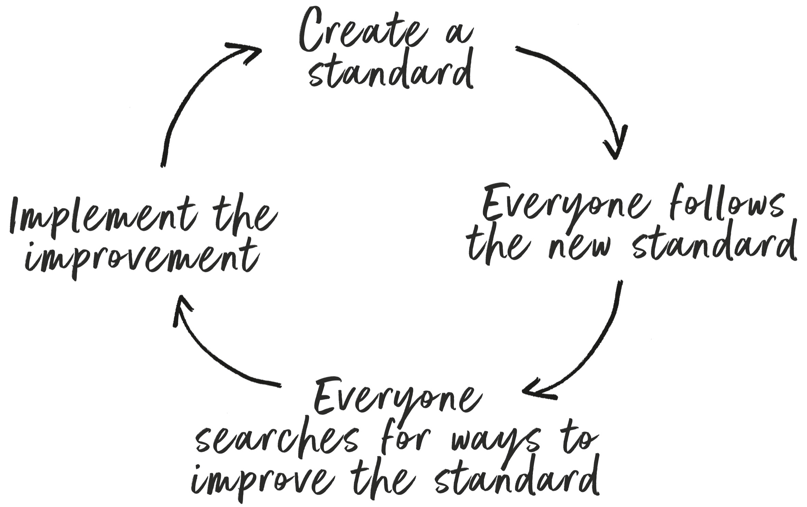
由于丰田是日本最成功的公司之一，许多人认为其成功归因于”日式”文化、薪酬体系或员工态度。但历史告诉我们另一个故事。
在1980年代初期，在罗纳德·里根总统任期内，美国和日本之间因大量进口汽车涌入美国道路而关系紧张。美国工业一直在苦苦挣扎。位于加利福尼亚州弗里蒙特的通用汽车工厂就是这种衰退的典型例子。在质量和生产力方面，它是通用汽车迄今为止最差的工厂：与任何其他工厂相比，组装一辆汽车平均需要更长时间，成品车的缺陷数达到两位数。
员工停车场中明显缺乏弗里蒙特生产的汽车，清楚地表明员工缺乏自豪感和信心。该工厂积压了约5,000起工会申诉，美国汽车工人联合会发生了多次罢工和”病假抗议”；劳动条件有毒且不可持续。
由于缺勤率超过20%，任何班次都需要大量临时工来补充。同时还雇佣了专门的清洁队伍，在每班结束后清理员工停车场的酒瓶和毒品用具。
通用汽车认为该工厂已无可挽回地损坏，2月份，他们关闭了工厂并解雇了所有员工。
丰田发现了一个解决更广泛贸易摩擦的机会，并在竞争对手的主场测试其改善哲学。1983年，丰田向通用汽车提出了合资伙伴关系的想法。弗里蒙特工厂将重新开放并更名为新联合汽车制造公司(NUMMI)，主要生产丰田花冠和雪佛兰Prizm。
丰田提出投资现金，监督工厂的顺利运营并实施他们的哲学。尽管该工厂在一年前遭遇了可怕的失败，他们甚至同意重新雇佣相同的工人，使用相同的工人工会、相同的设施和相同的设备。
丰田前董事长丰田英二认为，这是在北美拥有完全自有丰田制造工厂的必要第一步。但他也将其视为测试丰田生产系统可行性和可移植性的完美方式。
丰田重新雇佣了近90%的弗里蒙特小时工工会员工，并实施了”不解雇政策”，防止任何人被解雇。他们派遣450名小组和团队领导到丰田市接受独特的改善启发的”丰田生产系统”培训，成本超过300万美元。在丰田哲学下，工人在工厂运营中拥有强有力的发言权。工人原有的100行工作描述被两个词取代：“团队成员”。管理层级得到简化，从十四个级别减少到只有三个：工厂管理、小组领导、团队领导。
仿佛魔法一般，以前如此失望以至于反对雇主的员工开始参与与工作相关的决策。他们接受了问题解决和改善实践的培训，因此成为各自领域的真正专家。他们工作的参数也发生了根本变化：他们不再被期望只是做好自己的工作，而是被要求进行主动思考和改进。
团队成员有权快速实施改进想法，任何有效的做法都会被复制为最佳实践。所有团队成员还可以随时通过拉动工厂任何位置都能接触到的绳索来停止整条生产线以解决问题。
在1985年启动的一年内，NUMMI工厂拥有了通用汽车全球所有工厂中最高的质量和生产力。
每辆车的平均缺陷数从十二个降到了仅一个，尽管汽车装配时间是以前不满员工所需时间的一半。任何时候只有3%的工人缺勤，这反映了工人满意度和参与度的飙升。运营创新也开始起飞：员工对新想法的参与度超过90%，管理层记录了近10,000个新想法的实施。
到1988年，NUMMI开始获奖，到1990年，丰田生产系统及其改善哲学成为制造业的全球行业标准。所有这一切都在不到两年内完成。建筑、员工和设备都没有改变。哲学是新的，结果却截然不同。
生活和商业中的巨大错觉——使得改善哲学的渐进式改进如此缺乏采用、被忽视和被忽略——就是认为小事情就是小事情。
这在客观上是正确的，但大量的小事情加起来就是大事情，相比于激励人们去发现和实施大事情，专注于改进大量小事情更容易、更包容所有团队成员，因此也更容易实现。
生活中一个不幸的现实是，容易做的事情也很容易不去做。省下1美元很容易，所以不省也很容易。刷牙很容易，所以不刷牙也很容易。当事情既容易做也容易不做时，做与不做的结果在短期内是看不见的，所以我们经常选择不去做。但数学和经济学清楚地说明了我们最小的决定如何对我们未来的位置产生最大的影响。
随着时间的推移，让某事每天恶化1%与每天改善1%之间的差异变得极其显著。考虑以下情况：
| 年份 | 年初 | 年末：每天改善1% | 年末：每天恶化1% |
| 1 | £100 | £3,778 | £2.5517964452291100000 |
| 2 | £3,778 | £142,759 | £0.0651166509788394000 |
| 3 | £142,759 | £5,393,917 | £0.0016616443849302700 |
| 4 | £5,393,917 | £203,800,724 | £0.0000424017823469998 |
| 5 | £203,800,724 | £7,700,291,275 | £0.0000010820071746445 |
| 6 | £7,700,291,275 | £290,943,449,735 | £0.0000000276106206197 |
| 7 | £290,943,449,735 | £10,992,842,727,652 | £0.0000000007045668355 |
| 8 | £10,992,842,727,652 | £415,347,351,332,000 | £0.0000000000179791115 |
| 9 | £415,347,351,332,000 | £15,693,249,374,391,300 | £0.0000000000004587903 |
| 10 | £15,693,249,374,391,300 | £592,944,857,206,937,000 | £0.0000000000000117074 |
如果你年初有£100，并且成功地在365天内每天将这个价值改善1%，你将把这个价值增加37倍。在十年内，假设同样每天1%的增量改善，这个价值会膨胀到15万亿英镑！
相反，让那£100每天衰减1%，一年后你的钱会迅速减少到£2.55，两年后只剩6便士，之后就是0便士了。
今天不刷牙不会产生任何可见的影响。这周每天都不刷牙可能会造成轻微的异味，但不会有重大后果。五年来每天都不刷牙，你就会在椅子上尖叫，因为牙医从你嘴里拔出臼齿。这个牙科问题是什么时候发生的？它从今天开始，因为忽视了一件容易做也容易不做的事情。
对丰田来说，kaizen文化不是一夜之间发生的。每人每年两个建议成为整个企业的标准花了20年时间。
Kaizen哲学需要时间、投资和巨大的信念。
你在到处都见过它：公司建议箱——顶部有一个小开口供员工提建议，一把挂锁，看起来普遍被忽视。虽然它出于好意且用心良苦，但它未能产生任何有意义的结果通常源于两个因素。一：大量的”建议”按照丰田的标准通常不是”创意想法”，而是匿名抱怨、无建设性的批评或对公司运营方式的被动攻击。二：少数积极的建议要么从未被执行，要么因为不切实际而无法执行。正是员工的抱怨和管理层缺乏跟进的致命组合，可悲地导致了信任的破坏和建议箱的尘封死亡。
那么日本公司的teian（建议系统）有什么不同？为什么它们在其他系统失败的地方取得成功？是他们的员工更聪明或更理智吗？是管理者更善于在无用的建议中找到有用的建议吗？这与日本文化有关吗？答案要简单得多，而且与任何民族文化无关。
答案在于我们将称之为”创意教练”的人，任何公司都可以利用这一点。当丰田日本国内公关经理Ron Haigh被问及他们如何能够接受到达建议系统的99%的想法时，他给出了一个意味深长的答案。
Ron解释说，主管与员工一对一地审查他们的想法，指导他们的实用性，给他们方向和支持，使想法全面而有效，并帮助它成功。这与大多数西方建议箱系统形成鲜明对比，在那里经理说”是”或——也许更经常——“不”，然后解释为什么一个想法”永远不会奏效”。
在kaizen系统下，你的主管就是你的创意教练。它仍然是员工的想法，但通过与更有经验、对可能性艺术有更深理解的人合作，99%的想法被接受并协作发展成可行的东西。
丰田的所有员工都被要求每月至少提出一个想法——这成为每个人工作职责的核心部分。主管也被要求确保他们团队中的每个成员都能成功地每月提出至少一个想法。这确保每个人都朝着同一个方向努力——帮助想法成功符合每个人的最佳利益。
教练也有教练——每个主管都有上级教练，他们被激励帮助主管每月制定足够多的新想法。通过这种方式，从公司高层到基层的每个人都被积极鼓励倾听、完善和支持所有新建议。
关键的是，实施想法的人必须是最初提出想法的人。你可以想象仅仅这个原则如何改变人们提出建议的类型。批评不再是一个想法；“我讨厌办公室音乐”不能成为一个建议，因为根据这个原则，每个想法都必须是实用的、高效的并专注于解决方案。
最后，丰田员工都接受了关于改善(kaizen)、丰田生产系统以及想法建议流程如何运作的教育。西方同行很少教育他们的团队关于渐进收益的理念、如何正确制定建议以及他们理念背后的理论依据。
公司往往通过支付员工想要强化的行为来对待员工，就像迷宫中追逐奶酪的老鼠一样。这是简单、效果较差、短期且成本高昂的方法。更难但更有效、更便宜的方法是创造一种文化，让人们足够关心、有足够动力并得到足够认可，从而主动站出来、贡献并投入精力改善公司。
在改善理念下，你需要大量想法，而且非常频繁，才能随着时间推移取得有意义的进步。为了获得大量想法，你需要人们被自己的好奇心、动机和关怀所驱动。有一个著名的寓言很好地说明了这个想法：
从前有一位老妇人，独自居住。每天下午，她的安宁都被在她房子外街道上嬉戏的孩子们打扰。随着时间的推移，孩子们变得越来越吵闹，老妇人也变得越来越愤怒。一天她有了一个想法：她叫来孩子们，和蔼地向他们解释说，听到他们在外面快乐地玩耍是她一天中的亮点，但有一个问题：由于年老和孤独，她正在失聪。所以，她问道，他们是否愿意为了她制造更大的噪音？她进一步提出，为此给他们每人25美分的报酬。
第二天，孩子们热切地回来，按要求在她房子外制造了巨大的噪音；他们每人得到了25美分并被要求第二天再来。但这次，老妇人只付给他们20美分。第二天只有15美分！这位可怜的老妇人解释说她的钱快用完了，从现在开始他们的费用将降到每天5美分。孩子们对赚取仅仅几天前收入的五分之一感到震惊。他们愤然离去，发誓再也不回来了。他们说，每天仅仅5美分根本不值得这么努力。
老妇人的聪明想法是从孩子们热爱并免费做的事情中夺走快乐。但更大的教训是明确的：用合成动机替代真正的动机是可能的。这种现象也被称为”动机挤出”：如果你为想法附加经济奖励，它可能会干扰甚至消除人们真正的创造性能量和雄心。
这不仅仅是一个寓言；这是科学。我采访了动机专家和作者Daniel Pink，了解经济奖励对我们动机的影响，他分享了大量研究表明，为某人曾经免费做的有趣事情付费会使他们失去做那项任务的内在快乐。当爱好变成工作时，动机就会下降。
伦敦政治经济学院的学者们研究了51项关于绩效付费方案的研究并指出：“我们发现经济激励确实可能减少内在动机，并削弱遵守工作场所社会规范（如公平）的道德或其他原因。因此，提供经济激励可能对整体表现产生负面影响。”
创新经常被描绘为奇迹般的发生，只有从少数天才的天赋或幸运意外中才能产生。电灯泡、魔术贴、青霉素和便利贴只是延续这种误导性信念的几个例子。
在这些发明故事的重述中，突破背后痛苦的渐进过程几乎总是被忽略，只突出最终结果。
不要让这些神话欺骗你——真正的创新几乎总是诞生于持续个人和优秀团队的汗水和决心，他们被正确的文化和理念结合在一起，而不是来自灵光乍现、意外幸运或有意的天才。
在我创立的所有达到行业顶峰的公司中，没有一个决策、发明或创新单独让我们到达那里。我的核心关注点始终是让我们的团队”比竞争对手更用心”。通过认可、庆祝和证据创造一种文化，不断向我们所有人证明最小的事情——最简单和最容易获得的事情——能够产生最大的影响。
“百分之一”是我公司中重复最多的词汇，作为CEO，我的关键职责之一就是识别和鼓励这些1%的收益，无论它们可能在公司的哪个地方出现。
我一直觉得我有一个作弊码。当我们的竞争对手认为一致性或重大胜利是通往领奖台的道路时，我毫无疑问地知道——正确的路线是通过持续不断的小改进、关注最小的细节和争取微小的收益来找到的。
如果你不关心微小的细节，你就会产出糟糕的工作，因为好的工作是数百个微小细节的积累。世界上最成功的人都关注细枝末节。
现在的小失误会在以后造成大失误
这个法则揭示了为什么大多数人最终在他们的关系和工作中迷失，因为他们忽略了生活中一个简单而持续的纪律。
当被要求解释Tiger Woods如何成为有史以来最伟大的高尔夫球手之一时，我们大多数人都会重复同样众所周知的事实：他是一个神童，两岁时就已经显露出天赋；他将生命奉献给训练，著名的是花费数小时分析自己表现的录像；他自己的父亲称他为”天选之子”，对他的潜力有着不可动摇的信念。
但那些真正了解Woods的人会告诉你，是他对强迫性、持续微小改进的kaizen哲学值得为他的成就承担功劳。
1997年，在大师赛之后，转为职业选手仅七个月，Woods告诉他的教练Butch Harmon，他想要重新设计——实际上是重建——他的整个挥杆动作。Harmon警告Woods没有捷径，这将是一个漫长的旅程，他在锦标赛中的表现在看到任何改进之前会变得更糟。
朋友、同行球员和专家都同意这一点，但Woods知道他的挥杆可以稍微更好一些，所以他忽略了他们。他将重新发明他的挥杆视为不是对他比赛的威胁，而是逐步改进的机会，因此他抓住了机会并开始了他的kaizen之旅。
Woods直接受到Toyota追求完美的启发，开始谈论kaizen哲学，就像它是他的宗教一样。他和他的教练继续创造他们自己的kaizen式序列：反复击打练习球；回顾他挥杆的录像以发现改进；在健身房和球场上实施任何改进。然后重复。
正如他的教练预测的那样，这是一条漫长的道路。Woods停止了获胜——实际上他18个月内什么都没赢——评论家开始说他的一切都结束了。但Woods和他的教练们相信小的改进会在更长的时间后显现出来。他告诉他的批评者，“获胜并不总是变得更好的晴雨表。”
Woods的kaizen态度得到了回报。他的新挥杆发展成了一个致命武器：比以往任何时候都更精确、更准确、更多样化。从1999年底开始，他创纪录地连续获得六场胜利，从那时起，Tiger Woods可以说成为了有史以来最好的高尔夫球手，拥有82场PGA巡回赛胜利——比任何人以前达到的都要多。
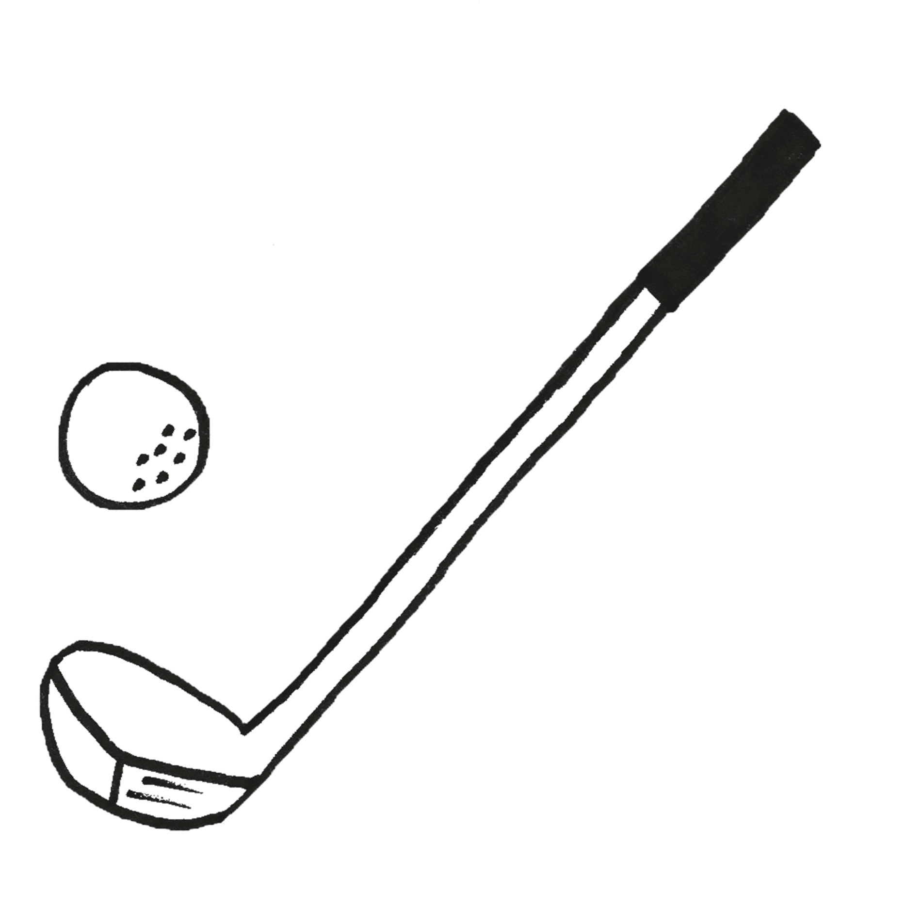
Woods证明了追求完美是一个纪律问题，而不是英雄行为。
Charles Darwin的进化论和”适者生存”假设不做小的适应可能导致灭绝，而小的突变创造生存优势。这个想法作为kaizen哲学的恰当类比。
正如Charles Darwin论证的那样，个体的成功不会由单一的天才之举决定。相反，它将是一种哲学的副产品，这种哲学在延长的时间内培养有机体任何和每个方面的渐进进化、突变和适应。
在航空中有一个叫做”60中的1规则”的原理，这意味着偏离目标1度将导致飞机在每飞行60英里时偏离最终目的地1英里。这个概念也适用于我们的生活、职业、关系和个人成长。仅仅是对最佳路线的小偏差会随着时间和距离被放大——现在感觉像小失误的东西可能在以后造成大失误。
这突出了kaizen哲学提供的实时路线修正和调整的需要。如果我们要成功，我们都需要简单的仪式来评估我们的路线，并在生活的所有方面尽可能频繁地做出必要的小调整。
著名关系心理学家约翰·戈特曼(John Gottman)通过数十年的研究得出结论：一段关系中”轻蔑”情绪的存在是预测离婚的最大指标。轻蔑是对伴侣的微妙不尊重和漠视——就像飞机偏离航道一度，在那些因为沟通不良或沟通不足而无法解决冲突的情侣关系中，伤害会缓慢地、随着时间的推移而发生。
这一洞察让我在我的恋爱关系中建立了最重要的改善式仪式之一：与伴侣的每周定期沟通。我们坐下来，开诚布公地交谈，寻求边际改进的方法，保持一致并解决未处理的问题——无论大小。
在我们最近的一次沟通中，她提到当我工作时被打断时回答”抱歉，我在忙”可能听起来生硬且有些恼怒。她问我是否可以在回答中加一个亲昵的词来软化这个信息——我无意中的生硬让她感到微妙的被拒绝感。
现在，我不再听起来像一个脾气暴躁的工作狂，而是说”抱歉，亲爱的，我在忙。“虽然这看起来是一个小改变，但表达和纠正这个问题防止了它随时间复合并在以后造成大问题。就像一架稍微偏离航道的飞机，我们通过一度的调整将我们的关系推回正轨，这样我们就能继续朝正确的方向前进。
我将同样的原则应用到商业、友谊和我与自己的关系中。我与我的主管和朋友进行每周沟通，甚至在我的日记中进行自我评估，以确保一切都在轨道上，保持一致，识别并实施任何必要的航向修正。
周复一周，我的收件箱充斥着来自那些发现自己在事业、商业、关系和友谊中迷失的人们的信息。几乎在每个案例中，最终都变得明显，他们目前的境况是长期忽视小事情的后果。他们未能与自己和他人进行沟通，未能发声，未能参与困难的对话或处理生活中看似琐碎的问题。因此，他们偏离了航道那么一点点——仅仅一度——这最终把他们带到了他们不想去的目的地。
改善哲学不仅仅关于商业、效率或改进；它关于持续确保你在正确的道路上，朝着你意图、想要和渴望访问的目的地前进。
今日疏忽的最小种子将绽放成明日最大的遗憾。
这条法则证明了你的失败率越高，你成功的机会就越大。它将激励你开始比目前失败得快得多！
托马斯·J·沃森(Thomas J. Watson)担任IBM总裁长达38年，是二十世纪上半叶美国最著名的企业家之一——与亨利·福特(Henry Ford)齐名——他因在IBM的巨大成功而成为当时最富有的人之一。他的创新核心原则可以用一个简单的句子概括：“如果你想提高成功率，就把失败率翻倍。”他还说：“每次我们在IBM取得进展，都是因为有人愿意冒险，把头放在砧板上，尝试新事物。”
当被问及是否要解雇一名犯错导致公司损失60万美元的男性员工时，他迅速回答：“不，我刚刚花了60万美元培训他。为什么我要让别人雇用他的经验？”
他本能地理解失败既是进步的机会，而相反——缺乏失败——将是IBM的死亡。他警告不要自满，即使当IBM达到行业顶端时，与改善方法一致，他说：“每当个人或企业决定已经获得成功时，进步就停止了。”
甚至在我听说托马斯·J·沃森和他对失败的非传统观点之前，我花了十年时间鼓励、测量和推动我团队的失败率。我们都知道失败是反馈，我们可以同意反馈是知识，正如陈词滥调所断言的，知识就是力量。因此，失败就是力量，如果你想增加成功的机会，你必须增加你的失败率。那些未能持续失败的人注定要成为永恒的追随者。那些比竞争对手失败更多的人将永远被追随。
Booking.com是世界上最大、最成功的酒店预订网站。但是，像每个行业领导者一样，它起步很小、破损且落后。
Booking.com前CEO吉莉安·坦斯(Gillian Tans)说：“许多公司从一个好产品开始，然后在全世界进行营销。Booking做了相反的事情。我们有一个基本产品，然后努力弄清楚客户想要什么。我们失败了很多次。”
在推出几年后，Booking.com的一名工程师在2004年参加了一个会议，在那里他听到了微软的Ronny Kohavi关于实验和失败重要性的演讲。他把这些学习成果带回了Booking.com的团队，当时团队在下一步行动、要实施的正确功能以及发展方向上存在持续的、浪费时间的分歧。
他们开始通过简单的实验来了解客户想要什么，然后利用这些洞察来构建产品——也就是我们今天所知的Booking.com。正如Tans所说：“我们就是这样成长的，没有任何营销或公关，只是不断测试和实验客户喜欢什么。”
看到增加实验和失败对公司产生的成功影响后，Booking.com在2005年开发并推出了自己的”实验平台”，这使它能够大幅扩展所运行测试的数量。
Booking.com产品开发高级总监Adrienne Enggist回忆道：
我来自小企业，那里的CEO每六个月推出一次大型产品重新设计，当你推出时，很难弄清楚什么有效，什么无效。在这里，团队很小，只占一层楼，看到每个人都承担风险、失败、非常快速地推进小改变，并使用实验来衡量影响，这很令人兴奋。
Booking.com甚至任命了一位”实验总监”，他公开宣传公司更多失败、更频繁失败并衡量这些实验是多么关键，他说：“我们相信受控实验是构建客户想要的产品最成功的方法。”
如今Booking.com拥有20,300名员工和100亿美元的年收入。该网站提供43种语言版本，在世界各个角落拥有超过2800万个房源。在你阅读这篇文章的时刻，Booking.com正在运行1,000个实验——由他们拥有的每一个产品和技术团队领导和设计。他们将超越竞争对手的失败文化归功于超越竞争对手的关键原因。
Amazon遵循同样的快速失败理念。这个万亿美元电商平台的创始人Jeff Bezos在公司成为史上最快达到1000亿美元年销售额的公司时，向股东发送了以下备忘录：
我认为我们特别与众不同的一个领域是失败。我相信我们是世界上失败的最佳场所（我们有大量的实践！），失败和发明是不可分割的双胞胎。要发明就必须实验，如果你提前知道它会成功，那就不是实验了。大多数大型组织接受发明的理念，但不愿意承受到达那里所必需的一系列失败实验。
超额回报往往来自于对传统智慧的反向押注，而传统智慧通常是正确的。给定10%的机会获得100倍的回报，你应该每次都下这个赌注。但你仍然会在十次中错九次。我们都知道，如果你全力以赴，你会经常三振出局，但你也会击出一些本垒打。然而，棒球和商业之间的区别在于棒球有截断的结果分布。当你挥棒时，无论你与球连接得多好，你能得到的最多跑数是四分。在商业中，偶尔，当你站到本垒板时，你可以得到1,000分。这种长尾回报分布就是为什么大胆很重要的原因。大赢家为如此多的实验买单。
在一次相关采访中，Jeff Bezos进一步阐述了这个观点：
要创新，你就必须实验。你需要每周、每月、每年、每十年做更多实验。就这么简单。没有实验你无法发明。我们希望失败的地方是我们试图做一些新的、未经测试的、从未被证明的事情。那是真正的实验。它们有各种规模大小。
Amazon拥有最大的商业失败墓地之一——我相信Bezos对此感到自豪——A9.com（Amazon搜索引擎）、Fire Phone和他们的Endless.com鞋类网站只是一些非常不成功的著名项目，你可能从未听说过它们。
然而，当他们的一个实验获得回报时，它完全改变了他们业务的轨迹，并覆盖了所有失败的损失：Amazon Prime、Amazon Echo、Kindle，以及最著名的Amazon Web Services (AWS)。
AWS作为与Amazon电商业务无关的实验推出，但在20年里已成为有史以来增长最快的B2B公司。它是世界顶级的云计算平台。它在24个地理区域有业务，在190个国家拥有超过100万活跃用户，收入620亿美元，年利润185亿美元。2022年，那个20年前的小实验成为Amazon总利润的最大单一贡献者。2011年，Amazon创建了自己的实验平台Weblab，现在每年运行超过20,000个实验，持续创新并改善客户体验。
Jeff Bezos在2015年的股东信中解释了Amazon如何决定公司应该追求哪些实验：
一些决策是关键性的且不可逆转或几乎不可逆转的——单向门——这些决策必须有条不紊地、谨慎地、缓慢地进行，需要深思熟虑和充分协商。如果你走过门去，不喜欢另一边看到的东西，你就无法回到之前的地方。我们可以称这些为第一类决策。
但是大多数决策并非如此；它们是可变的、可逆转的——它们是双向门。如果你做出了次优的第二类决策，你不必长期承受后果。你可以重新打开门并返回。第二类决策可以且应该由高判断力的个人或小团体快速做出。
随着组织规模的扩大，似乎有一种趋势是在大多数决策上使用重型的第一类决策制定流程，包括许多第二类决策。这样做的最终结果是缓慢、缺乏思考的风险规避、实验不足，进而导致创新能力下降。
六年来，我为一家行业领先的多十亿美元食品行业电商公司提供咨询，该公司旗下有两个品牌。一个品牌由创立整个集团的父亲经营，另一个更新的品牌是由儿子推出的。当我的公司被委任帮助他们扩大营销、客户获取、社交媒体和创新工作时，我最初每周在董事会会议室与父亲和儿子待上四天时间，了解他们的品牌、目标和目的。
我每周都会毫无例外地拜访两个品牌；我与他们一起环游世界；我在现场，做一切事情，从为他们的危机管理新闻稿提供建议到制定社交媒体策略，并就应该进行哪些营销活动向他们提供建议。当他们去巴黎推出新产品时，我在飞机上；如果他们在美国有活动，我就在那里；如果他们在新加坡有重要会议，我与他们一起出差；当他们在中东推出时，我在当地。
在我为他们提供咨询并作为他们大家庭成员的六年里，我看到儿子的公司部分从一个默默无闻、规模小、不盈利的品牌发展成为该行业最受喜爱、最具文化相关性、收入最高的品牌。与此同时，我看到父亲的品牌踌躇不前、停滞不前并放缓速度。最终儿子的品牌将超越他父亲的品牌——产生超过十亿美元的收入。
我在两个企业的前排观察它们的决策和理念，我可以完全肯定地说，儿子超越父亲的最重要原因是儿子的失败率比父亲高出十倍。
当我的团队在营销、增长或社交媒体方面有技术发现时，我们同一天将其带给两个品牌，但我们得到了截然不同的反应。我记得有一次创新，我们发现了一种使用特定平台发现的技术让他们的社交媒体关注者增长速度比通常可能的速度快20倍的方法。2016年，我亲自在两个单独的会议中将这一发现告诉了儿子和父亲。
父亲的团队听了这个想法，要求进行更大规模的演示，对我们的费用嗤之以鼻，并告知我他们需要各种层级的签字才能继续。九个月后，他们仍在”内部讨论”。
儿子一开始没有让我面对一个团队；他想亲自听这个想法。在我还没能完成解释之前，他就向他的助理喊道：“立即把所有营销团队的人叫到房间里来。”当营销团队到达时，他让我重复我刚才说的话，在我完成解释后，他看着他的团队说：“我们今天就要做这件事。”他回头看着我说：“Steven，无论你需要什么，都搞定了——现在就全力以赴！”
没有合同、没有律师、没有层级签字、没有延迟——[信任]、[速度]和[授权]。
这一个想法使儿子的品牌在接下来的几个月里为其社交媒体渠道之一增加了1000万名关注者。最终，使用我们的发现来增长社交媒体页面的成本比该品牌过去采用的所有策略少了95%。
儿子本能地知道这是一个”第二类”决策——如果失败不会造成不可逆转的伤害，可以逆转，但如果成功也可能最终改变品牌进程的那种决策。他知道面对第二类决策时，应该遵循Jeff Bezos的话：“第二类决策可以且应该由高判断力的个人或小团体快速做出。”
儿子知道最大的成本不是失败，而是错失增长机会和浪费时间去学习新课程，无论结果如何。如果实验失败了，它只会花费他们一天时间和一点钱，我们在24小时内就会进行下一个实验，离正确答案又近了一次失败。
到父亲的品牌大约十个月后决定谨慎地进行这个想法时，它已经不再有效了——我们使用的平台漏洞已经被关闭，增长社交媒体渠道再次变得昂贵、复杂和困难。
需要注意的是，我们为那个儿子带来的大部分想法并没有产生如此惊人的结果。无论设计得多么完善，大多数实验都会失败。我估计十个实验中，三个是悲剧性失败，三个是普通失败，三个是好的，一个是伟大的——如此伟大，以至于改变了他们企业的命运，并弥补了其他九个实验造成的任何损失。
达到51%的确定性，然后做决定。
多年后，我有幸与巴拉克·奥巴马在巴西同台，奥巴马说，当面临艰难决定时——比如是否在夜间不打招呼地飞入巴基斯坦，希望暗杀奥萨马·本·拉登——他转向概率而不是确定性。
他说每个决定都是痛苦困难的：“如果这是一个容易解决的问题，甚至是一个中等困难但可以解决的问题，它不会到达我这里，因为根据定义，其他人会已经解决了它。”
他不会说”如果我做这个决定，X或Y会发生吗？“而是会说”X或Y发生的概率是多少？“他坚持认为房间里有更聪明的人是关键：”有信心让比你更聪明或与你意见不同的人围绕在你身边是至关重要的。“他会根据正确的概率和如果他错了会产生的影响来权衡每个决定：”你不必在重大决定上达到100%的确定性，达到51%，当你到达那里时，迅速做出决定，并对你基于你拥有的信息做出的决定感到平静。”
正如我从与父子公司合作中学到的，从我十多年来为世界领先品牌提供咨询中学到的，以及从巴拉克·奥巴马那里学到的，事实是完美的决定只存在于事后；过长时间地思考潜在结果，并在过程中拖延，是徒劳的。商业中优柔寡断的真正成本是浪费时间。那些时间本可以用来通过失败获得最终帮助你成功的知识。相反，一些品牌因恐惧而冻结，在试图避免任何损失的过程中，他们最终失去了最昂贵和重要的东西：机会、知识和时间。
纳西姆·塔勒布(Nassim Taleb)，作者兼研究员，用这个图表总结了这一点：
我合作过的一些公司做对了这一点：他们有闪电般快速的实验周期，他们将变化视为机会，他们比竞争对手失败得更多，并且几乎总是超越他们的行业。我合作过的一些公司相信这种理念，尝试了并失败了；他们要求团队更多地创新，把它写在办公室墙上，但它从来没有发生。一些公司根本不相信它；这些公司几乎从来不是创始人领导的，他们要么停滞不前，要么在衰落，他们将变化的世界仅仅视为威胁。
我发现最具创新性的公司自然体现的五个一致原则，我相信这些原则使团队能够比竞争对手失败得更多：
“这是一个恶棍，”沃尔玛首席执行官道格·麦克米伦(Doug McMillon)说。“它的触手应该被当作癌症来对待，”伯克希尔·哈撒韦副主席查理·芒格(Charlie Munger)说。“这是一种疾病，”摩根大通首席执行官杰米·戴蒙(Jamie Dimon)说。
所有这些受人尊敬的商业领袖都在谈论”官僚主义”——一个似乎没有成功粉丝的词。简单来说，最糟糕的企业官僚主义是有很多规则、冗长而痛苦的审批流程、以及底层和高层之间有几个层级的公司。
这些系统剥夺了员工的权力，拖慢了公司的速度，不鼓励实验，延迟创新，并抑制了存在于员工头脑中的想法金矿。
这样的系统是对人类智慧、活力和企业家精神的税收。
正如《彼得原理》作者劳伦斯·彼得(Laurence Peter)所说：“官僚主义在现状早已失去其地位之后，仍在为现状辩护。”
公司领导者通常将官僚主义视为在复杂监管和国际环境中运营的企业的不幸必需品。美国劳动力就是一个例子：自1983年以来，经理、主管和管理人员的数量增加了100%以上，相比之下，所有其他职业的增长大约为40%。
近年来，根据《哈佛商业评论》的调查，近三分之二的工人表示他们的组织变得更加官僚化。与此同时，生产力增长停滞了。在已经主导西方经济的大公司中，官僚主义特别有害。在美国劳动力中，超过三分之一的工人受雇于5000名或更多员工的公司——一线工人通常由八个管理层级监督。
考虑到世界正在发生的惊人变化速度——如第五定律所揭示的——在历史的这个时点上做任何减缓公司实验速度的事情都是自寻死路。
海尔集团是一家年销售额超过350亿美元的中国家电企业，他们比任何人都更深刻地理解这一点。为了避免官僚主义的有害后果，他们将75,000名员工分成4,000个微型组织，其中大多数只有10到15名员工。决策由小型自治团队以闪电般的速度做出，因此他们成功超越了竞争对手的失败率，以市场速度进行创新，并主导了他们的行业。
苹果公司联合创始人兼首席执行官史蒂夫·乔布斯在谈到公司的官僚主义时说：
我们的组织就像一个初创公司。我们是地球上最大的初创公司，我们每周聚会三小时，讨论我们正在做的一切。团队合作依赖于信任其他人会完成他们的部分，而不需要一直监视他们，而是相信他们会完成他们的部分。这就是我们真正擅长的。
正如我在自己的所有公司、客户和案例研究中所见证的，关键是让项目团队尽可能小，在做决策时给予他们更多的权威、信任和资源获取权，并削减所有审批流程，特别是当团队试图做出第二类——低后果、可逆转——决策时。
2020年，我的公司受托拯救一家濒临财务崩溃的时尚电商公司。新冠疫情导致他们的实体店关闭，员工和工资减少。员工士气低落，新首席执行官刚刚被任命来引导公司走向新方向。
在我向首席执行官做的第一次演示中，我概述了公司需要在所有领域（包括营销）将失败率提高一个数量级的必要性。他们落后于竞争对手，错失机会，并在无效的传统策略上浪费资源。
听到我的提议后，首席执行官提到公司已经鼓励团队进行更多实验，引用了员工手册中四个核心价值观之一的”更快失败”，以及办公室厨房墙上醒目显示的两个词。
演示后，我与员工——从经理到实习生——进行了数小时的私人会谈。在与品牌营销团队的会议中，我提出了问题：“你有什么理由要更经常地失败？”随后是一段漫长而具有启发性的沉默，然后我重新表述了问题，问道：“你有什么理由不更经常地失败？”营销经理此前瘫痪的嘴巴突然活跃起来，她用一系列回应淹没了我，包括”我不想感到尴尬”、“我不会得到加薪”、“人们会看不起我”、“我可能会被解雇”、“我太忙了，没时间尝试新事物”。
当她说出越来越多的理由时，越来越明显的是，这个组织患有一种叫做”激励错位”的疾病——公司对员工的期望与激励他们去做的事情不一致。公司想要创新者、冒险者、企业家——但仔细检查后——就像大多数缓慢、垂死的公司一样——人们只是被激励去…做他们的工作，不多也不少。
令我仍然震惊的是，任何首席执行官会相信他们在员工手册中放入的可爱词汇、陈词滥调的标语和理想价值观有任何意义。
词汇需要证据、激励和例子来赋予它们生命。人类行为不是由陈词滥调、标语和一厢情愿的想法驱动的。
如果你想预测一群人长期会做什么，你需要看他们的激励，而不是他们的指示。
为了重新设计营销部门的激励机制，我实施的众多系统之一是一个认可流程，旨在当员工或团队成功执行实验时予以庆祝，无论结果如何。毕竟，执行实验是可控因素；它在市场上是否成功是无法控制的，所以这不应该是我们激励的重点。
我告诉时尚公司的首席执行官要识别出失败最快的员工，并尽可能将他们提升到组织的高层。公司没有单一的公司文化；组织中的每个经理都在其下属中创造一种亚文化。
在我的第一家营销公司，我们有近30名经理，我一次又一次地观察到一个团队的满意度、态度和理念可能与他们旁边的团队截然不同，纯粹是因为他们的经理。有30名经理，我们实际上有30种公司文化。
影响力向下传递：你需要公司最高层的人成为你文化价值观最热心的信徒。
当你晋升这些员工——或给他们加薪——时，让所有团队成员知道他们为什么被晋升，并指出他们异常高的失败率。
相反，重要的是要迅速移除那些阻碍新想法流动、快速失败和实验的团队成员。特别是如果这些员工是经理——一个糟糕的经理可以摧毁一个由完全有能力、充满希望和具有企业家精神的员工组成的优秀团队的士气、动机和乐观情绪。
在为时尚电商业务提供咨询时，我要求CEO建立、教育并持续向所有团队成员传达一个”实验流程”，每个人都应该遵循、用于测量，并用于沟通他们想要追求的新想法或实验。
员工往往不敢提出新想法，因为他们不清楚应该遵循的流程。教育是消除运营心理摩擦的最简单方法。
最后，我告诉CEO要按团队测量组织的失败率，明确目标是在年底前将每个团队的失败率提高十倍。
在商业中，你不测量就不会改进，你关注什么就会增长什么。通过建立可见的KPI（关键绩效指标）和明确目标，并让它们成为每个人的责任，时尚业务中没有人可以因为”太忙”而不进行实验——正如改善哲学中的情况——这成为了每个人工作的核心部分。
组织慢慢改变方向，七年来首次在第一年实现收支平衡，并在第二年实现了可观的利润。
新发现的创造力、创新能力和被赋权的员工队伍让它感觉像一家全新的公司。员工留存率提高了，员工满意度得分飙升，公司比以往任何时候都更具创新性。
如果你想最大化每次失败的回报，关键是要在整个组织中传播每个失败假设、实验和结果的详细信息。这些信息代表了一种知识资本形式，可以作为未来实验的基础。通过公开分享失败，你可以防止重复不成功的努力，激发新想法的发展，并培养持续实验的文化。正如托马斯·爱迪生所说：“我没有失败。我只是找到了一万种行不通的方法。”
失败不是坏事，为了增加成功的机会，你需要增加失败率。每次尝试并发现不起作用时，就获得了可以与团队分享的宝贵信息。更快实验、更快失败，然后继续实验的企业，几乎总是超越竞争对手。
失败 = 反馈。
反馈 = 知识。
知识 = 力量。
失败给你力量。
你必须成为A计划思考者
这个法则将展示为什么你人生中的B计划可能正是你A计划成功路上的最大障碍。
我即将告诉你的故事改变了我的生活。
1972年10月13日星期五，南多·帕拉多(Nando Parrado)在昏迷48小时后醒来。他不是在手术后苏醒，也不是从两天的狂欢中清醒过来：他被死尸和受伤的朋友们包围，身处海拔数千英尺的安第斯山脉冰川山谷中，在飞机失事的残骸中，没有办法呼救，甚至不知道自己确切的位置。
45名乘客中，包括一支前往智利比赛的乌拉圭橄榄球队成员，29人在坠机中幸存。最初他们尽力而为，喝融化的雪水，吃从行李中能找到的任何东西。“第一天，”帕拉多回忆道，“我慢慢地舔掉花生上的巧克力…第二天…我轻轻地含着花生几个小时，只允许自己偶尔小咬一口。第三天我也这样做，当我最终把花生啃到什么都不剩时，就完全没有食物了。”
一周后，面临饿死的威胁，并在找到一台晶体管收音机后得知智利当局已经停止搜救工作，南多和他的幸存伙伴们做了不可想象的事：他们决定别无选择，只能吃死人的尸体。
飞机上为数不多的女性中包括帕拉多的母亲和小妹妹，他邀请她们来看他比赛。他的母亲泽尼娅(Xenia)，49岁，在撞击时立即死亡；他的小妹妹苏西(Susy)最初在坠机中幸存，但一周后死在了她哥哥的怀里。
他们吃的第一具尸体是飞行员的，因为他们认为他应该为坠机负责。其他尸体，幸存者们同意，是禁区，包括泽尼娅和苏西的。但帕拉多被这样的想法折磨着：有人会违反他们的协议，如果那样的话他无法继续活下去。
坠机两个月后，帕拉多宣布他要出发寻求帮助。他挨饿、没有登山经验，不知道要去哪里，但不知何故这比吃掉他母亲和妹妹的尸体是更好的选择：“我不想不得不吃她们的尸体，我不想面对那一刻，”他说。
南多和他的朋友罗伯特(Robert)缝制了睡袋材料，拼凑了一个雪橇，然后出发了。他们决定往上爬而不是往下走，因为更高的制高点会让他们更有机会找出逃生路线。他们花了三天艰苦的时间，三天后以某种方式到达了15000英尺高峰的顶部，但没有找到他们希望的东西。
当我们到达第一座山峰时，我看到的景象真的让我震惊到无法动弹。我无法呼吸，无法说话，也无法思考，我看到的景象太可怕了；我们看到的不是绿色的山谷，而是山峰和雪覆盖的山峰，360度环绕着我们，延伸到地平线上我们能看到的最远处。就在那时我知道我死定了…但是我没有办法回去，去吃我母亲和姐妹的尸体，唯一的路就是向前，我们会死，但我们会在尝试中死去…我会继续前进直到停止呼吸。
他们摇摇晃晃地走下山的另一边，开始强迫自己沿着下面的冰川前行，日复一日地变得越来越虚弱。这对搭档在冰冷的山脉中跛行了十天，穿过深雪和致命的裂缝。
“这是一种模糊的、持续的、痛苦的努力，山脉如此巨大，感觉就像你没有取得任何进展，你会在远处设定一个目标位置，你会认为需要两三个小时才能到达那里，但它如此巨大，你似乎永远无法到达那里，”他说。
疾病开始侵袭，男人们的身体开始衰竭，然后在12月18日，他们遇到了一条河流。当他们沿着河流走时，他们看到了有人最近来过这里的迹象：一个汤罐、一个马蹄铁，甚至一群牛，直到最终在12月20日，他们在一条巨大河流的对岸发现了一个骑马的人。
这些人无法在河流的咆哮声中让自己被听到，所以Parrado做手势模仿飞机坠毁来试图解释他们是谁，尽管他担心那个人会认为他疯了然后骑马离开。相反，那个人把一张纸条绑在石头上扔过河：“告诉我你想要什么。”
Parrado写回：“我来自一架坠落在山中的飞机。我们已经走了十天。我们没有食物，我再也走不动了。”他解释说他在山中还有14个朋友活着，他们迫切需要帮助。
那个人收到纸条后震惊了，但相信了他读到的内容，他骑马行进了十个小时到达最近的文明地区，第二天带着救援队回来了。奇迹般地，在飞机坠毁72天后，Parrado和他的朋友得救了，第二天他乘坐直升机带着救援队回到坠机地点，在那里找到并救出了其他14名幸存者。
“你唯一向前走的方式，是因为你不能往回走，”他解释说。
Parrado的故事是一个关于人类在绝望的绝境面前坚持不懈、坚韧不拔和勇气的故事。我在19岁时偶然发现了他的故事，当时我正处于可怕的财务困境中，试图追求我的第一个商业想法，因为从大学辍学而被父母断绝关系，在最糟糕的日子里偷窃和搜寻食物，住在国家的贫困地区，孤独而破产。
他的故事改变了我的生活。它在我最黑暗的时刻给了我希望，在我最需要的时候给了我前进的动力，以及更多的理由来克服我所处的环境继续前进。经过几年的坚持，我也逃脱了我的困境：我建立了一家成功的公司，我获得了财务自由，我的生活就像我最疯狂的梦想一样。
“你唯一向前走的方式，是因为你不能往回走。”我不能回去。我没有”回去”的地方。没有B计划成为了我生命中最不可思议的动力。当人类的思维排除所有其他可能性并专注于单一路径时，那条路径会吸引你所有可用的激情、坚持和力量，不留余地给犹豫或偏离。
“在世界上任何其他人相信之前的第一步是你必须相信它——没有理由有B计划，因为它会分散对A计划的注意力。”
Will Smith
如果我有替代路径可供选择，完全有可能那些最黑暗的时刻会诱使我走向它。这可能听起来像是可爱但毫无意义的励志话语或不现实的陈词滥调，但令人惊讶的是，研究人员最近发现，在任何抱负中拥有B计划——对我们A计划成功的机会产生净负面影响。
你可能听过”不要把所有鸡蛋放在一个篮子里”的建议。当涉及选择职业、申请大学，甚至申请新工作时，拥有备用计划被广泛认为是一个好主意。研究表明，这种方法确实有助于缓解与不确定性相关的一些心理不适，但令人震惊的是，新研究也表明它会带来很大的代价。
拥有备用计划，甚至考虑一个，已被证明可能通过让你对实现主要目标的驱动力减少来阻碍你的表现。
在三项研究中，近500名学生被要求解决一个困难的单词拼图，涉及解开混乱的句子。如果他们成功了，他们会得到美味的零食。在尝试拼图之前，一些学生组被告知要考虑一个备用计划——如果他们不能解开句子，在校园里获得免费零食的其他方式。
研究人员发现，没有备选计划的小组比有备用计划的小组表现明显更好；他们的动机水平更高，更重视成功，并解决了更多的难题。后续实验在其他背景下用不同奖励（例如金钱、其他奖品和节省的时间）重复了结果，结果总是相同的。
其中一位研究人员，行为科学家凯蒂·米尔克曼(Katy Milkman)得出结论：“这表明制定备用计划实际上会让你更少地想要实现目标，这会损害你的努力、表现，最终损害你成功实现目标的机会。这些发现适用于那些成功高度依赖于努力的目标。”
此外，虽然有些人可能因为害怕失败而感到被冻结，但研究表明，对失败的恐惧实际上可以提供达成目标所需的动力。类似地，其他研究表明，你越是感受到失败时的负面情绪，你就越有动力成功。然而，如果你有一个备用计划，成功的动力就会减弱，因为你已经消除了对失败的恐惧。
如果你正在阅读这篇文章，并且它让你考虑在安第斯山脉进行致命的十天跋涉，我需要提供一个免责声明。冒险——将你的整个身心专注于一个目标——与彻底的鲁莽之间是有区别的。
当然，在我的故事中，我并没有死亡的风险；我很幸运地生活在一个如果我需要帮助的话，会接纳我、喂养我、给我住处的社会中。你们中的许多人都有家属、抵押贷款和其他可以理解的需要保护的责任。实用性必须是优先考虑的。
这个法则仍然是人类状况中那些令人不安的、不可避免的现实之一。我们能够投入到一个结果中的自己的程度——思维、精力和专注力——与该结果的可能性呈正相关。有些人称之为显化(manifestation)，但我称之为A计划思维。在追求你最重要的目标时，备用计划是一个额外的负担，一个需要承担的激励负担和一个分散注意力的伴侣。
没有比一个不被B计划分散注意力的人更大的创造力、决心和承诺的力量了。
在这个法则中，你将了解为什么当我应该像狮子一样行动时，我在商业中的最大职业错误是表现得像鸵鸟。在你的职业生涯中，做鸵鸟会让你丧命。这个法则将教你如何避免成为鸵鸟。
“上帝本人也无法让这艘船沉没，”泰坦尼克号的船长爱德华·史密斯(Edward Smith)说道，当时人们警告他该地区存在冰的危险。
几小时后，当船撞上冰山并开始进水沉没时，据报道，碰撞时当值的大副默多克(Murdoch)转向总管约翰·哈迪(John Hardy)说：“我相信她[泰坦尼克号]完了，哈迪。”
尽管面临迫在眉睫的命运，乘客们后来回忆起甲板上一种奇异的平静、难以置信和正常感。“有些人在打牌，有一个人在拉小提琴。他们就像在客厅里一样平静，”乘客伊迪丝·罗素(Edith Russell)说。
另一位乘客埃伦·伯德(Ellen Bird)描述了一些人似乎完全忽视他们即将到来的命运：“我看到一两个男人和女人起身，向窗外看了看，然后又坐下，显然想着他们会回去睡觉。”
威廉·卡特(William Carter)爬上了一艘折叠式救生艇幸存下来，这是最后一艘离开的救生艇之一，他说他曾试图说服乔治·怀德纳(George Widener)和他一起上救生艇。卡特说怀德纳忽视了他的警告，说：“我想我宁愿碰碰运气。”
因此，本来就数量有限的救生艇正在半空着离开。随着情况变得更加严峻，船员们开始疯狂地吹哨子、恐慌并大喊命令，试图让乘客们登上救生艇。根据幸存者的描述，一些船员不得不强行让人们违背意愿登上救生艇。
在沉船的最后阶段，就在船完全沉没前几分钟，当大部分甲板都完全被洪水淹没时，才开始出现广泛的恐慌。二副莱托勒(Lightoller)不得不挥舞手枪，五副洛威(Lowe)实际上沿着船侧开枪，以防止人们在装载和降下最后一批救生艇时涌入救生艇。一名惊慌失措的船员甚至进入无线电室，试图偷走正在操作无线电的高级无线操作员杰克·菲利普斯(Jack Phillips)的救生衣。
因此，在船上的2240人中，几乎70%的人死亡。
这种否认是一件复杂的事情。当你阅读这个故事时，后见之明可能会将这些回避、无反应的乘客描绘成愚蠢、不理性和鲁莽的。然而，他们的反应完美地说明了一种非常人性化、非常常见的行为现象，称为”鸵鸟效应”。
当鸵鸟感受到危险时，它会把头埋在沙子里。这种想法是，如果鸵鸟能够躲避威胁，危险最终会过去。我们人类也没有什么不同。在处理困难的信息、情况或对话时，我们往往也像鸵鸟一样把头埋在沙子里。
作为人类，我们天生就会避免不适。当我们知道自己超支时，会阻止自己查看银行账户；我们会避免不想进行的困难对话；更成问题的是，我们会推迟预约医生检查，以避免收到关于健康状况的坏消息。
英国TSB银行最近发布的一份报告显示，负债的英国人因为不面对自己的财务状况和进行简单的改变，每月累计损失5500万英镑。一项证实性研究发现，当市场整体上涨时，投资者更可能查看他们的个人投资组合价值，但当市场持平或下跌时，他们会避免查看。
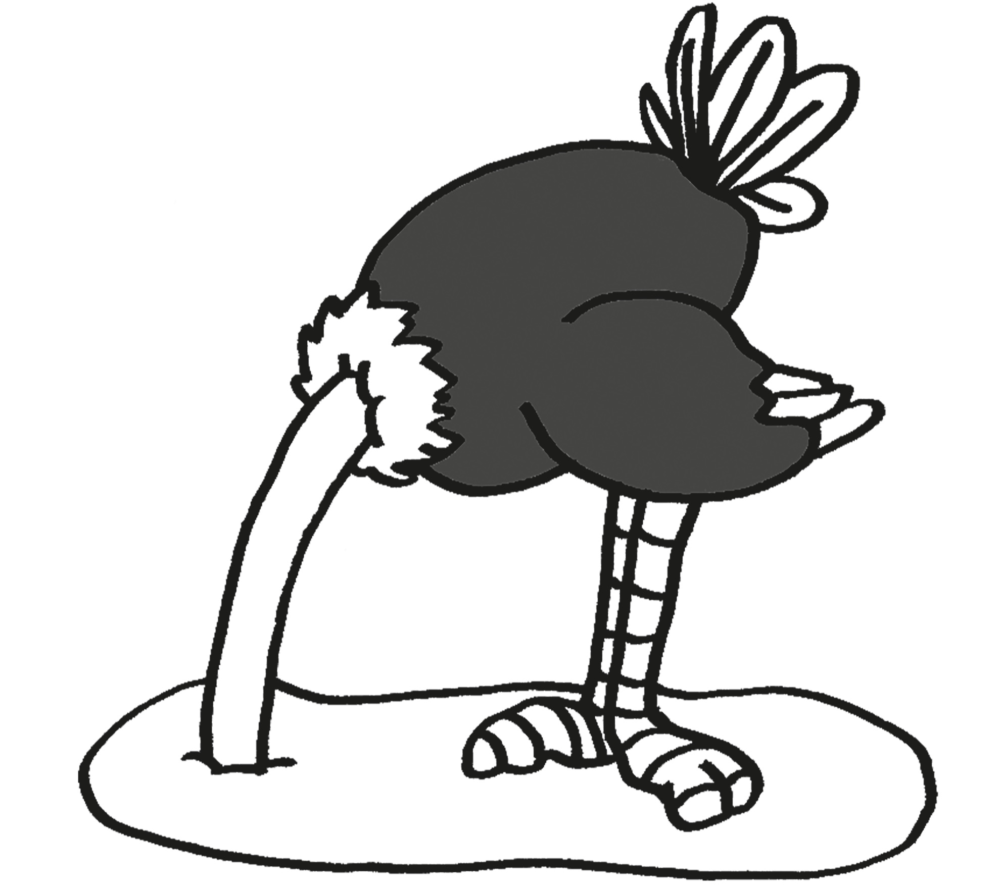
在一项针对7000名年龄在50-64岁女性的更令人震惊的研究中，研究人员发现，那些听说同事被诊断出患有乳腺癌的女性，自己去接受免费检查的可能性几乎低了10%。
当鸵鸟效应发作的那一刻，我们不仅仅是有焦虑，而是焦虑控制了我们，这种焦虑迫使我们把目光从最让我们焦虑的事情上移开。正如精神病学家乔治·韦兰特(George Vaillant)所指出的：“否认可以是健康的，使个人能够应对而不是被焦虑所麻痹，或者它可能是无益的，创造一种自欺，以危险的方式改变现实。”
在创业中，鸵鸟效应往往是公司成功与失败的分界线。企业调查公司Leadership IQ进行的研究，收集了来自近300个解雇了CEO的组织中超过1000名董事会成员的数据。他们发现，23%的董事会因为”否认现实”而解雇了CEO，31%因为”变革管理不善”，27%因为”容忍低绩效员工”，22%因为”不作为”。这些都是鸵鸟效应的常见企业症状。
在商业中，盲点最少的人获胜机会最大。
当我们最接近现实时，我们思考得更好，做出更好的决定，取得更好的结果。柯达、诺基亚、百视达、雅虎、黑莓和MySpace的故事清楚地说明，那些感觉最不可见的人往往最容易在面对创新、变革和令人不快的真相时成为鸵鸟。
我在纽约的办公室采访了世界知名作家尼尔·埃亚尔(Nir Eyal)，为这本书做准备；他花了几年时间研究在最好和最坏的时候激发人类行为的动机。他告诉我：
人们认为他们的动机是寻求快乐；他们错了，他们的动机是避免不适。即使是性——以及它产生的欲望——也是我们寻求解脱的一种不适形式。
大多数人不愿意承认这个令人不舒服的真相：分心总是对现实的不健康逃避。
我们如何处理令人不舒服的内在触发因素决定了我们是追求健康的牵引行为还是自我挫败的分心。
在我自己的职业生涯中，我最大的职业错误和遗憾都不是我做出的不成功的商业决定；而是那些本能上显而易见但极其不舒服的决定，我没有做出：那些因为恐惧、不确定性和焦虑而避免面对的事情。我知道需要解雇但没有解雇的人，我需要与客户进行但避免了的对话，以及我需要向董事会表达但推迟了的警告。
同样，我们都能理解鸵鸟效应对我们浪漫关系可能产生的毒性后果：避免困难的对话，逃避尴尬的问题，假装一切都很好。这些共同否认和相互回避的症状维持着一个失败的关系，当双方都没有言语、勇气或信念来面对他们未满足的需求时。争吵会发生，但很少是正确的争吵。在一段关系中，如果你一遍又一遍地进行同样的对话，你就是在进行错误的对话。你在避免应该进行的令人不舒服的对话。
在生活的每个方面，痛苦都是不可避免的，但我们试图避免痛苦而创造的痛苦是可以避免的。
在商业中，鸵鸟效应和它所创造的未解决冲突的痛苦会被你的员工感受到，在育儿中会被你的孩子感受到，在你自己的生活中会在你的思想、身体和灵魂中感受到。
肯尼迪政府期间的一名白宫工作人员曾经评论说，当总统和第一夫人之间存在冲突与他们关系融洽时，总是很明显的。当采访者对他们的关系如此透明表示惊讶时，这位工作人员回答：
他们实际上对自己的斗争相当私密，但我们知道他们在争吵，只是通过观察他们个人工作人员的互动。当美发师和交通人员争吵时，我们知道这是因为JFK和杰奎琳在某种形式的冲突中。当这些团体行动一致时，我们知道第一夫妇相处得还不错。
肯尼迪政府这个故事的核心观念是，冲突在社会系统的内部和层级之间不断流动。当我们选择埋头于沙子中而不解决问题时，这些问题并不会静静等待被处理；它们会变得有毒、具有传染性，对周围的人造成伤害，每一天不被解决都会造成更多的连带损害。
五年前，我意识到我需要找到一种方法来克服自己鸵鸟般的行为，这样我就能以速度和诚实来面对生活、商业和爱情中最令人不安的现实。我相信，如果没有与不适感、坏消息和不便真相建立更好的关系，你就无法达到最高潜力。运用行为经济学、心理学和社会学的建议，我创建了自己的四步方法来处理不适感并避免拖延。
第一步是暂停并承认某些事情不对。这样的暂停时刻往往出现在人们注意到自己不想要的情绪的力量和可怕持久性时。如果你不暂停，这个过程就无法开始，你也无法为下一步创造足够的空间。
下一步是从感受、行为和情绪方面检视自己。这些检查至关重要。它们使人们能够开始表达他们只是感觉到的东西：他们内心有些不对劲，有些错位，某种需求没有得到满足，或者恐惧已经占据了控制权。
暂停并检视自己的人就像意识到犯罪已经发生的侦探——他们可以看到事后的证据，但还没有找到罪魁祸首。解决这类案件通常需要他人的帮助。人们需要帮助才能跳出自己的叙述，准确诊断自己，而不是简单地被他们偏好的框架和指责方式所驱动。
下一步是说出你的真相。分享你检视的发现，不带指责，并强调个人责任。这标志着未解决的人际冲突从错误的对话转向正确对话的时刻。
在鸵鸟效应中，人们回避并且不直接谈论困扰他们的情绪。他们转移视线，误诊问题，用其他事情分散注意力。潜在的问题仍然未被说出。这种沉默驱动着鸵鸟效应。松开其控制始于人们说出尚未被说出的话的时刻。具有讽刺意味的是，科学表明，正是在谈论我们的隔阂时，人们彼此之间创造了更多的联系。
在最后一步中，你必须谦卑地寻求真相——在我们的认知偏见、自以为是和无知面前，这比说起来容易做起来难。这意味着倾听。但不仅仅是为了听而听，而是为了理解而听。不是从寻求胜利的对手角度，而是从伙伴的角度，耐心地专注于克服困难。
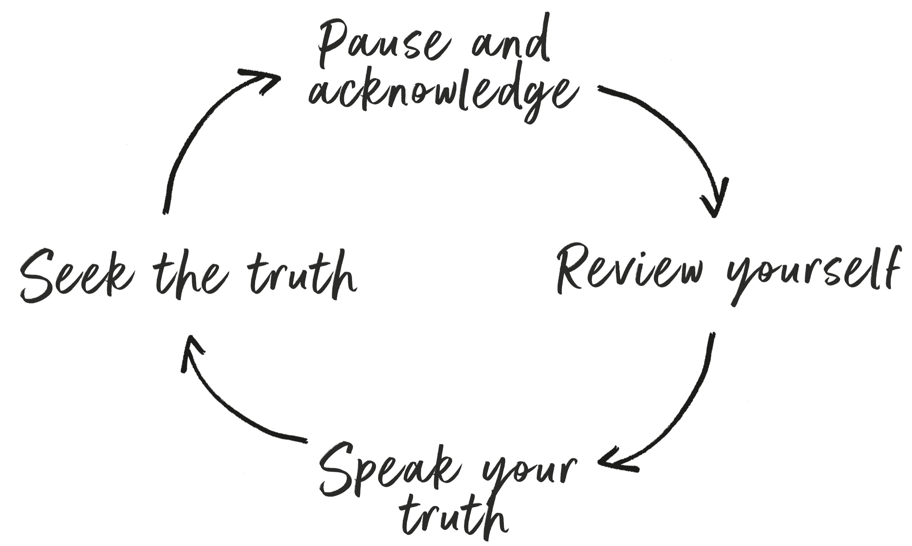
当你确实寻求、听到并理解真相时，它产生的不适感可能会诱使你再次埋头，但关键是回到第一步，暂停一下，重复这个过程直到达到终点。
回避不舒服的现实和困难的对话是无益的——无论在商业还是个人关系中。我们必须认识到什么是不对的，评估我们能做什么，分享我们的发现，并找到真相，无论这有多么具有挑战性。
如果你想在商业、关系和生活中获得长期成功，你必须在尽可能快地接受不舒服的真相方面变得更好。
当你拒绝接受不舒服的真相时，你是在选择接受不舒服的未来。
这个法则教你舒适是如何在精神上、身体上和情感上慢慢杀死我们的。它将帮助你理解我们必须如何以及为什么让生活的压力成为我们的特权。
拥有39个大满贯冠军头衔的比利·简·金(Billie Jean King)被期望获胜。人们指望着她。这种压力对任何其他人来说可能都太大了，但对她来说不是。她在温布尔登赢得了创纪录的20个冠军，整个网球世界都在看她比赛，每个体育记者都准备批评她的每一个动作。当被问及如何应对世界期望这种不可思议的负担时，比利·简·金随意地回答：“压力是一种特权——它只会降临到那些赢得它的人身上。”
这句话——“压力是一种特权”——自然会引起复杂的反应，就像大多数过于简化的格言一样。当人们听到这句话时，他们听到的是”压力(stress)是一种特权”，所以有必要澄清压力(stress)和压力(pressure)是两个完全不同的概念。压力(stress)是内在的心理反应，而压力(pressure)是外在的环境力量。当然，压力(pressure)可以引起好的或坏的压力(stress)，这取决于个人，但压力(pressure)本身并无过错。压力(pressure)是一种主观情境，而不是客观情绪，在强大的压力(pressure)面前，一个人的压力(stress)可能是另一个人的快乐。
我并不享受我所有的压力(pressure)——尤其是在当下——我的压力(pressure)都不容易；它经常以我不愿意接受的方式考验我，但我所有最大的压力(pressure)都在我所有最大的特权之前出现。这两个概念有着清晰、不可分割的关系，我发现理解这种关系是解放性的、激励性的和令人安心的。压力(pressure)同时照亮了我是谁和我不是谁，同时揭示了我已经走了多远以及我还要走多远。对我来说，没有压力(pressure)的生活就是没有目标的生活。压力(pressure)不是问题——正如我所说，压力(pressure)既不好也不坏——但我们与压力(pressure)的关系、观点和评价，以及它所创造的压力(stress)，可能产生有意义或致命的后果。
压力(pressure)不是生死攸关的问题，但你对它的看法可能是。
在威斯康星大学，研究人员对3万名美国成年人进行了压力(stress)研究。他们向参与者询问诸如”你在过去一年中经历了多少压力(stress)？“和”你认为压力(stress)对你的健康有害吗？“这样的问题。八年后，他们使用公共死亡记录来查看谁仍然活着。不出所料，在研究期间经历大量压力(stress)的人死亡风险增加了43%。但是——这是一个重要的”但是”——这只适用于那些说他们相信压力(stress)对健康有害的人。那些经历了大量压力(stress)但不认为它有害的人死亡的可能性并不更高。事实上，分析表明他们的死亡风险是研究中所有人中最低的，甚至包括那些报告经历相对较少压力(stress)的人。研究人员估计，在他们追踪死亡的八年中，有182,000名美国人过早死亡——不是死于压力(stress)，而是死于相信压力(stress)对你有害的信念。Kelly McGonigal是斯坦福大学的健康心理学家和讲师。在关于这项研究的TED演讲中，她指出，如果研究人员的估计是正确的，相信压力(stress)对你有害将是美国第十五大最常见的死亡原因，杀死的人比皮肤癌、艾滋病和谋杀还要多。
你能回想起上次感受到真正压力(pressure)的时候吗？你的心脏可能在剧烈跳动，你可能呼吸更快，你可能手心出汗。通常我们将这些生理症状解释为焦虑或我们无法很好地应对压力(pressure)的迹象。
但如果你用不同的方式看待它们——作为你的身体为面对挑战而为你提供能量的迹象呢？这正是哈佛大学研究人员在让参与者接受高压力测试之前告诉他们的。学会将压力反应视为有助于表现的参与者不那么焦虑，感到更自信，表现也更好。特别有趣的是他们生理压力反应的变化。通常，在压力(stress)状态下你的心率会上升，血管会收缩——这是一种保持下去不健康的状态。
但在研究中，当参与者将他们的生理症状视为有益时，这并没有阻止他们的心率上升，但他们的血管保持放松和开放，这意味着他们的心血管反应要健康得多。McGonigal指出，将压力(stress)视为有益的参与者具有与正在经历快乐和勇气时刻的人相似的心血管特征。
此外，哈佛商学院教授Alison Wood Brooks已经展示了那些在心理上将焦虑重新定义为兴奋的人如何在销售、谈判和公开演讲等任务中提高他们的表现。
这一个心理思维转变，以及它创造的身体转变，可能是60岁时压力(stress)诱发心脏病发作和活到90岁之间的区别。
目标不是试图摆脱你的压力(pressure)，而是完全改变你与它的关系。
改善与压力关系的一个重要方法是提醒自己它存在的积极特权、意义和背景。志向型压力——创业、参加比赛或养育孩子——与工厂流水线上低薪工人面临的压力（如果不提高产量就有被解雇威胁）之间的区别在于我们如何看待这种压力。我们认为是自愿的、有意义的、高度自主的压力会被视为一种特权。相反，强制性的、无意义的、低自主性的压力更像是心理痛苦。
“只是珠峰边上又一个寒冷黑暗的夜晚”是我在过去五年最艰难时刻自然重复的一句话，它让我回到压力的背景中。
当登山者决定攀登珠穆朗玛峰时，期待一帆风顺的旅程是天真的。当然，创业、攻读大学学位或养育孩子也是如此：所有这些事情都会产生压力、应激和痛苦，但因为这种压力在主观上是值得的，感觉就不同了——我敢说——甚至是愉快的。
当你忘记生活中压力的背景时，你最容易感觉像是压力的受害者。你生活中最有意义的挑战将伴随着珠峰边上的几个黑夜。
幸运的是，改变与压力的关系是可能的。结合多年的心理学定性和实证研究，《哈佛商业评论》发表的一项研究基于他们与高管、学生、海军海豹突击队员和职业运动员的合作，发现采用”压力是增强性的”心态的人在工作中表现更好，负面健康症状更少，而那些将压力视为消极、使人衰弱的事物的人则相反。
我相信改变你对压力和应激的反应方式可以帮助你利用压力的创造力，同时最大限度地减少其有害影响。我通过采用《哈佛商业评论》的三步法做到了这一点，在这里与你分享——加上我自己的最后一步。
意识是劫持任何类型认知循环的第一步。不要否认、回避或让它麻痹你：说出来，命名它。这实际上改变了你的大脑反应方式，因为它激活了大脑更有意识、更深思熟虑的区域，而不是原始的、自动的、反应性的中枢。正如《哈佛商业评论》解释的：
在一项研究中，参与者在脑部扫描中观看负面情绪图像。当被要求标记图像引发的情绪时，神经活动从杏仁核区域（情感中枢）转移到前额叶皮层，这是我们进行有意识和深思熟虑思考的大脑区域。换句话说，有目的地承认压力让你暂停内脏反应，让你选择更增强性的反应。
除此之外，试图否认或忽视压力感似乎是适得其反的。Peter Salovey和Shawn Achor的《哈佛商业评论》研究表明，那些认为压力是有害的并努力避免它的人要么过度纠正，要么对压力反应不足，而那些具有允许他们拥抱积极面心态的人对压力有更温和的皮质醇反应。这在实践中意味着他们”更愿意在压力下寻求并接受反馈，这可以帮助他们长期学习和成长。”
布法罗大学进行的一项研究发现，每一次重大的压力性生活经历都会使成年人的死亡风险增加30%——除非他们随后花费大量时间与所爱的人和直接社区联系。然后，死亡风险就没有增加。
与支持性社区分享我们的压力完全改变了压力对我们的心理影响。当我们选择在压力下与他人联系时，会产生难以置信的韧性。
“拥有”你的压力的关键是认识到它发挥的积极作用和它所代表的强大信号。当某些事情重要、有利害关系、我们关心时，我们就会感到压力。在这种背景下框定你的压力会释放积极动机并平静你的生理反应。
它提醒你这只是珠峰边上又一个寒冷的夜晚——一座你选择攀登的山峰，一座值得攀登的山峰。
在海军海豹突击队训练中，前海豹突击队指挥官Curt Cronin说：
领导小组设计的情况比任何作战行动都要指数级地更有压力、更混乱、更动态，这样团队就能学会在最艰苦的环境中集中自己。当训练的压力似乎难以忍受时，我们可以拥有它，知道这最终是我们选择做的事情——成为一个能够在任何任务中成功的团队的一员。
这是值得承受的压力。
在压力之下，压力可以帮助你取得成功。压力的进化目标是推动你在精神和身体上都发挥最佳表现；提升你的水平，迎接你面临的场景或问题。我们对压力的生理反应是产生荷尔蒙，如adrenaline(肾上腺素)和dopamine(多巴胺)，这些荷尔蒙为大脑和身体提供急需的血液和氧气。这导致更高的能量状态，增强的警觉性和专注力的提升。
我们的身体以这种奇妙的方式为我们做好准备。不要与之对抗，要利用它。
前海军海豹突击队指挥官Cronin最近说：“学会问’这些经历如何为我们服务？’，并被推动使用它们来激励我们，这证明是帮助我们的个人、团队和组织蓬勃发展的强大工具，不是尽管有压力，而是因为有压力。”
正如Teddy Roosevelt的名言，如果我们要失败，至少我们在”勇敢地挑战”中失败，这比那些”既不知道胜利也不知道失败的冷漠而胆怯的灵魂”更值得钦佩。
在为这本书做准备时，我就压力、压力及其对健康的影响这一主题采访了十多位健康专家。我遇到的最令人惊讶的反复关注点之一，可以总结为10X Health创始人Gary Brecka对我说的话：
“我们正生活在舒适危机中。我们通过避免对健康有益的困难事情，正在慢慢用舒适让自己窒息而死。衰老是我们对舒适的激进追求。”
他认为人类在生理上会蓬勃发展，并且天生就是为了在适当类型的压力下生活而设计的。他说我们应该体验极冷和极热的温度——我们不是为了生活在完美调节的室温环境中。我们应该对身体施加物理压力；我们不是为了如此久坐不动而生的。
我采访的其他健康专家告诉我，避免这些类型的生理压力的代价在肥胖危机、心脏病增加和许多类型的可预防疾病中可以看到。
职业、心理和生理压力通常是我们选择忽视的特权，因为它……‘困难’，正如之前所述，我们是避免不适的人类。
然而，在生活的各个方面，’困难’是我们今天为明天’轻松’付出的代价。
压力不必是一件负面的事情，如果正确框架的话，它可以是充满活力的。识别、拥有和使用压力在实现我们在商业和生活中的目标方面可以是一个强大的工具。
舒适和轻松是短期朋友但长期敌人。如果你寻求成长，选择挑战。
这个法则教给我们一种我称之为消极显化的奇妙力量，以及它如何帮助你看到红旗、未来风险和任何其他阻碍你成功的事物。
存在一个问题，根据我的经验，它为我避免的财务损失、浪费的时间和浪费的资源比任何其他问题都多。这个问题，我通过一连串的失败、挫折和错误认识到了它的重要性，由于它在我们内心激起的不安，经常不被问及。
避免这个问题让你处于危险的境地，类似于法则23中描述的谚语中的鸵鸟把头埋在沙子里。无论你是否问这个问题，你最终都会找到答案——要么现在，通过一次不舒服的对话，要么在未来，以一种更痛苦的方式。
2013年我18岁时，通过一个痛苦的教训学会了这个问题的价值。
我开始建立一个名为’Wallpark’的在线学生平台，在把三年的时间、投资者的资本以及比喻意义上的血汗和眼泪投入到这个项目之后，它最终以失败告终。
俗话说，事后诸葛亮。回顾过去，我失败的原因似乎很明显——我在不知不觉中与Facebook竞争，这是一场我没有获胜机会的比赛。
但是，这个启示不需要事后诸葛亮；我不需要经历失败才能认识到它。如果我有谦逊、经验和力量真诚地问自己一个简单的问题，我相信我本可以完全避免时间、金钱和努力的损失。
这个关键问题是：“这个想法为什么会失败？”
这个问题可能看起来简单而明显，但当我调查了1000多名初创企业创始人时，令人震惊的是，只有6%的人声称他们清楚地知道他们的想法为什么可能失败，而高达87%的人清楚地知道它为什么会成功。
现实是大多数初创企业最终都会失败，当它们失败时，就像我的一样，创始人们似乎突然看到了明显的问题——他们中的大多数将失败归因于高估了他们的前景并低估了风险。
例如，根据美国小企业管理局的数据，52%的失败创始人承认低估了成功所需的资源，42%承认没有意识到市场并不需要他们的产品，19%承认低估了竞争对手。
我相信，这些失败的创业创始人在追求他们的事业之前，应该问自己和同事的最关键、最具启发性的问题是：“为什么这个想法会失败？”医生和患病的病人都可以证明预防胜于治疗这一观念，在商业中，如果在开始之前不谦逊地面对失败的可能性，就没有预防的机会。
有五个主要原因使我们回避进行这种对话，甚至不愿考虑失败的可能性。这五个心理偏见在众多研究中得到一致确认，很可能会阻止你和你的团队提出这个看似简单却至关重要的问题：
Tali Sharot告诉我，大约80%的人都有这种偏见。简单来说，它让我们专注于好事而忽略坏事。它阻止我问”为什么Wallpark会失败？“，因为我本能地相信并希望事情会有好结果。人们认为这种偏见给了我们进化优势——乐观主义帮助我们承担更多生存风险，探索新环境并找到新资源，但在我们的职业生涯中，它阻止我们充分考虑风险。
我们都在某种程度上有这种偏见。它使我们关注支持我们现有想法和假设的信息——它让我关注并接受证明Wallpark是个好想法的信息，而忽略所有暗示相反结果的数据、邮件和反馈。研究表明，这种人类偏见通过让我们的世界观感觉一致、连贯和正确来提升我们的自尊心并给予我们情感慰藉。
这种偏见在不同程度上影响着我们大多数人，它使我们相信我们的成功或失败是我们自己技能和努力的结果。它确实阻止了我思考为什么Wallpark会失败，因为它让我高估了自己的能力，同时低估了外部因素的影响——比如市场条件、竞争或其他不可预见的情况。
这种偏见使我们坚持一个决定——即使证据表明这是一个错误的决定——因为我们已经在上面花费了时间或金钱。这就是为什么Wallpark持续了三年而不是一年的原因——潜意识里我不想通过放弃来”浪费”或”失去”已经投入的时间和金钱——但这样做，我最终浪费了更多的时间和金钱。
这种偏见阻止一群人问”为什么这个想法会失败？“因为他们不想与群体意见不一致。在Wallpark，创始团队中没有任何人质疑过这个想法是否会失败；我们很可能都围绕同一个盲目的假设达成了一致，因为我们渴望社会凝聚力，这为任何新团队成员创造了强烈的一致性压力。
2021年，我有了一个大胆的想法。乘着我的播客《CEO日记》成功的浪潮，我设想推出整个播客网络。这个雄心勃勃的计划涉及创建大量全新的播客，每个播客都有知名和有才华的主持人。我的目标是利用我们团队的商业、制作和营销专业知识，将这些播客推向与《CEO日记》相同的高度。
我们有扩大排名第一播客的丰富经验，我有一个充满知名人士的电话簿，他们渴望与我在自己的播客上合作，我有一个30人的团队为《CEO日记》工作，我有财力投资这个新事业。
为了实现我的愿景，我从《CEO日记》团队中聚集了一个由五人组成的专门小组，在一年的过程中，我们精心规划网络，与潜在主持人会面并寻找合作伙伴。我在规划和准备过程中投入了数十万美元，以及我自己和团队成员的无数时间和精力。项目进行六个月后，我向世界上最大的媒体公司之一的负责人提出正式邀请，让他担任网络的CEO。令我高兴的是，他暂时接受了，并告诉我当我给他绿灯加入我们时，他就会辞职。
最后，经过12个月的规划，关键时刻到来了。我面临着一个关键决定，是否要求这个新播客网络的即将到来的CEO离开他高薪的工作并加入我们的行列。我知道这个选择标志着不归路的起点。如果我做出这个决定，就没有回头路——将全速推进大规模播客网络的启动。
在那个决定性的时刻，我在十年商业生涯中积累的智慧发挥了作用。我召集了我的团队，提出了一个简单而深刻的问题：“为什么这是一个坏想法？”当我观察他们不舒服的表情时，很明显他们的头脑正在努力应对一个全新的挑战：一个他们以前从未考虑过的挑战。
片刻之内，闸门打开了。一位团队成员指出，我们有限的人才池会分散得太薄，危及我们现有的成功播客业务。另一位附和道，强调了知名主持人的潜在不可靠性以及如果主持人决定离开就会失去一切的风险。还有人指出对经济的严重担忧，以及这将如何导致赞助机会的减少。另一个人解释说，复制我们最初的成功会比我们想象的更困难，因为其中一些成功是由于运气、环境和机遇。
一连串合乎逻辑的理由平息下来后，一位团队成员将问题转向了我：“为什么你认为这是一个坏主意？”在这一刻，我意识到我的潜意识一直怀有一种根植于过去经验的担忧，由于心理偏见，我一直在回避这种担忧。我的回答简单而诚实：“专注。”
我解释说，我们的集体专注力是我们最宝贵的资源。失败会诱使人们失去专注力，因为动力和信念会下降，但成功更会诱使人们失去专注力，因为机会、邀请和能力会增加。保持对我们现有项目的专注——该项目仍处于关键的增长阶段——将是我们要做的最困难也是最重要的事情。我们有限的专注力、注意力和思考能力不能在多个项目之间分散而不产生严重后果。那些淋浴时的想法、凌晨1点的顿悟、走廊里的随意对话——我们需要所有这些珍贵的时刻都专注于我们现有的播客业务，专注于找到边际改进的方法，专注于发挥我们的潜力。
我强调，通过集中我们的努力，我们可以获得远超任何播客网络的复利回报。
几分钟后，我们一致投票关闭该项目。
值得注意的是，就在一小时前，房间里的每个人都支持这个想法，并渴望启动新的企业。但一个简单而不舒服的问题改变了我们的集体思维模式，邀请了重要的批判性思考，并让我们高清晰度地看到了项目的缺陷。
一年后，凭借后见之明，我可以自信地说，追求网络会是一个代价高昂的错误。我们的团队会被拉伸到极限，我们现有的业务会受到影响，2022年的经济衰退会严重影响我们的财务表现。
我们的专注得到了回报，2022年我们现有的播客业务在受众规模方面增长了900%，收入攀升了超过300%。
在商业世界中，像我们这样的团队经常花费数月时间精心勾勒他们的想法将如何以及为什么会成功。然而，他们很少分配同等水平的时间来审查他们的想法可能不起作用的潜在原因。这就是一个简单问题——“为什么这是一个坏主意？”——发挥作用的地方。
通过提出这个问题，我们鼓励一种基本形式的批判性思维，揭示了经常被前述五种固有人类偏见遮蔽的风险和挑战。我们不仅仅是为我们的想法寻求验证，而是挑战自己直面它们的弱点。我们的意图不是简单地找理由放弃一个想法，而是拥抱预防胜于治疗的格言。在开始项目之前识别潜在问题使我们能够解决和规避它们，为通向成功的更顺畅旅程铺平道路。
遗憾的是，人性往往阻止我们预先思考或行动以避免最坏情况的发生。我们中的许多人忽视采用健康习惯，如适当的锻炼和营养，直到我们的健康处于危险之中；我们忽视保持汽车维护的重要性，直到面临故障；我们不会更换损坏的屋顶，直到水滴在我们头上滴答作响。
事后验尸检查，或解剖，是医疗专业人员通过检查尸体来确定死因的程序。“事前验尸”是事后验尸的假想对立面——你在死亡发生之前进行。“事前验尸法”是科学家Gary Klein开发的一种决策技术，鼓励一个团队从失败的角度思考，在项目开始之前。它不是简单地问”什么可能出错？“，事前验尸法依赖于你想象”患者”已经死亡，并要求你解释确实出了什么问题。
现在，想象如果我们能够利用这个概念并将其应用于我们的日常生活和职业努力。科学研究表明，这个简单的思想实验——在灾难发生之前进行隐喻的”解剖”——可以大幅减少完全失败的机会。
在1989年的一项开创性研究中，研究人员深入探讨了事前验尸法的迷人世界及其对预测结果的影响。参与者被分为两组：一组利用事前验尸法的力量将各种商业、社交和个人事件设想为已经展开，并剖析它们可能没有成功的原因。相比之下，另一组仅仅在没有任何指导的情况下进行预测。
使用事前验尸法的小组在预测给定情况的发展结果和确定这些结果的原因方面表现出明显更高的准确性。这些发现表明，通过提前考虑失败，我们可以更好地理解其潜在起源并采取主动措施来避免它。
1989年由两所大学研究人员进行的另一项研究发现了同样显著的结果——这种简单的想象失败已经发生的方法将正确识别未来结果原因的能力提高了30%！
自2021年以来，我在我所有的公司中都实施了事前验尸分析，取得了巨大成功。以下是我用来部署事前验尸法的五步流程：
1. 设置场景： 召集相关团队成员，清楚地解释事前验尸分析的目的——识别潜在风险和弱点，而不是批评项目或个人。
2. 快进到失败： 让你的团队想象项目已经失败，鼓励他们生动详细地想象这种情况。
3. 头脑风暴失败原因： 指导每个团队成员独立生成一份可能导致项目失败的原因清单，考虑内部和外部因素。重要的是这要独立完成并写在纸上，以避免群体思维。
4. 分享和讨论： 让每个团队成员分享他们的失败原因，促进开放和不带偏见的讨论，以发现潜在的风险和挑战。
5. 制定应急计划： 基于识别出的风险和挑战，共同努力创建应急计划和策略，以减轻或完全避免这些潜在陷阱。
事实是，人类做出非常糟糕的决定——被情绪蒙蔽、由恐惧引起、受不安全感影响的决定。我们不是很有逻辑，我们充满了偏见，在决策中，我们总是寻找捷径。
事前验尸法的力量远远超越了商业领域；它一直是我在个人生活各个方面做出更好决定的有力工具。拥有强有力的决策框架让我能够在我生活中最重要的领域、在我生活中最重要的时刻做出更有效和更少遗憾的决定。
以下是你可以在不同情况下应用它的方法：
1. 选择职业道路： 在决定职业时，通过设想自己多年后在该职业中经历重大不满或失败来进行事前验尸分析。向后推理以识别这种不满的潜在原因，如对工作缺乏兴趣、成长机会有限或工作与生活失衡。通过考虑这些因素，你可以完善你的职业选择或制定策略来减轻潜在问题。
2. 选择伴侣： 在考虑长期关系或婚姻时，想象一个关系失败或变得不令人满意的情况。识别可能导致关系恶化的因素，如价值观不一致、沟通不良、亲密关系问题或期望不同。通过主动解决这些担忧并主动寻找危险信号，你可以对伴侣关系做出更明智的决定，或从一开始就努力加强关系。
3. 进行重大投资： 在考虑重大投资时，如购买房屋或投资股市，设想投资导致财务损失的情况。识别这种结果的潜在原因，如市场波动、研究不足或提前高估你的财务能力。通过理解这些风险，你可以做出更明智的决定，进行彻底的尽职调查，并采取措施将潜在损失降到最低。
在当今时代，我遇到的每一个社交媒体名言似乎都要求我”想象成功”，赞美”显现”和”积极思考”的美德。虽然乐观无疑具有巨大价值，积极思考具有真正的优点，但拥抱消极思考同样具有深刻的力量——想象失败并相应地制定计划。
我们的认知系统本能地引导我们远离引起心理不适的想法。然而，就像把头埋在沙子里的寓言鸵鸟一样，这种回避往往导致我们走向更大的心理困扰。
矛盾的是，在生活的各个方面，今天进行一次不舒服的对话为未来更舒适的生活铺平道路——预防比治疗更容易。
拥抱这种思想的双重性——平衡积极性和消极性——为我们提供了智慧、坚韧和远见，以开辟更成功的前进道路。
你可以通过观察某人处理不舒服对话的意愿和能力来预测他们在生活任何领域的成功。你的个人进步被困在一次不舒服的对话后面。
你的技能毫无价值，但你的环境背景很宝贵
这条法则解释了如何让你已有的技能获得数倍更高的回报，以及为什么所有价值都来自环境背景，而非技能本身。
2020年，在经历了建立社交媒体营销公司的过山车般的十年后——这家公司曾与世界上一些最知名的品牌合作——我告别了CEO职位，踏上了自我发现的旅程。
辞职后不久，我宣布永远不会再从事营销工作。探索不同行业未知领域的诱惑太强烈了，难以抗拒。重新穿上熟悉的社交媒体营销CEO鞋子的想法，已经无法像十年前那样点燃我内心的火焰。更重要的是，我渴望摆脱社会给我们贴上的限制性职业标签——诸如律师、会计师、牙医、社交媒体经理或平面设计师这样的通用职位头衔。我相信这些标签限制了我们的潜力，最终导致不满足感。
我理解——标签充当快捷方式，它们让我们感到被理解，告诉我们自己属于某个地方，并巧妙地让我们相信自己在这个世界上有目标。然而，这些标签也成为职业枷锁，扼杀我们的创造力，缩小我们经历的范围。
27岁的我太年轻了，不应该被任何标签所限制。我唯一愿意给自己的标签是”拥有多元技能的好奇家伙”。我渴望致力于更广泛的社会挑战，而不是仅仅帮助公司提升运动鞋、碳酸饮料或电子设备的销售。
于是，我激动人心的新篇章开始了。
嗯，其实不是这样的…
我一直对全球心理健康危机、其原因和潜在解决方案着迷、担忧并深感好奇。
2020年，也就是我辞职的那一年，Covid-19大流行迫使世界进入封锁状态，剥夺了我们许多心理稳定因素，并将心理健康推到了公共对话的聚光灯下。有了时间，我开始在各种与心理健康相关的有趣主题中进行数字化探索，其中最引人入胜的是致幻剂(psychedelics)世界。
我吞噬了无数关于某些致幻剂化合物在治疗人类心理健康障碍方面有效性的研究论文、临床研究和在线文章。这些化合物的科学原理和未开发潜力让我完全敬畏。
生活有时会给我们带来无法解释的缘分时刻、偶然相遇和看似一致的机缘，接下来我要说的绝对是其中之一。
就在我完成对致幻剂世界的深入研究几天后，我收到了一位商业熟人的短信，问道：“嘿，史蒂文，你能帮我转发这个吗？”令我惊讶的是，链接指向一则关于我刚刚研究过的一家致幻剂公司IPO（首次公开募股——股票发行）的新闻报道！我回复道：“我花了几周时间阅读关于这家公司的资料——我对它很着迷。你参与其中吗？”他回答：“我是最大的股东，现在正在做一个类似的项目。我希望你能帮助我们做营销！”
“我们进一步讨论一下，”我回复道，我们安排了本周晚些时候的午餐会面。仅仅花了几个小时了解公司使命、会见执行团队并审查他们的工作后，我就知道我想成为他们旅程的一部分。
这家公司在”生物技术”领域运营，这个行业充满了杰出的头脑——穿着白大褂在实验室里的聪明人——但缺乏精通在推动公共对话的现代数字平台上制作引人入胜故事的前沿营销人才。
为了在即将到来的IPO中取得成功，公司知道它需要有效地传达其极其及时的文化使命，不仅要面向大型机构投资者，还要通过所有可用的社交媒体平台面向普通大众。
公司的目标是数十亿美元的IPO，有效和无效的故事叙述及营销之间的区别可能决定其估值的成败。
我拥有他们所需的专业知识。
凭借在每个数字平台上的经验以及与几乎每个行业领先品牌的合作经历，我是帮助他们应对这一挑战的完美候选人。会面一周后，我提议在IPO前的九个月内加入公司。
我的职责包括制定营销策略、定义品牌、组建长期营销团队、设定团队哲学，并在我离开前为所有营销工作奠定基础。他们接受了我的提议，并承诺第二天给我发送报价。
说实话，我加入他们公司的动机不是金钱。如果说有什么的话，我渴望投资这家公司，因为我对致幻剂力量的信念日益增强。我想沉浸在科学中——让自己被该领域前沿的先驱者包围，填满我的知识桶，满足我的好奇心，同时决定职业生涯的下一步。
第二天，我醒来后收到了一封来自公司的邮件，主题是”薪酬待遇”。当我阅读邮件内容时，我不敢置信地眯起了眼睛。他们提供给我高达600-800万美元的股票期权，外加月薪，让我领导他们的营销工作九个月，直到股票上市。这超出了我预期的十倍以上。
在这一刻，我学到了关于任何技能价值的四个持久教训。
我们的技能一文不值。正如那句话所说，价值就是别人愿意支付的价格。
每种技能在不同行业中都有不同的价值。
在生物技术行业，我的高级社交媒体和营销技能就像粗糙中的钻石——如此稀缺，以至于公司非常愿意为此支付高价。然而，当我在其他行业——如电子商务、消费品和技术行业——销售这些相同技能时，它们的感知价值大大降低了。在这些环境中，我的技能更加常见，这意味着我能收取的费用只有生物技术行业客户愿意支付给我的十分之一。
这家生物技术公司正处于可能数十亿美元IPO的边缘，在这种高风险环境中，我的技能具有大幅影响公司估值的潜力。自然地，他们准备为这种影响相应地支付费用。
回顾我之前的职业生涯，我意识到当我用相同的技能营销连衣裙、T恤和配饰等消费品时，我为客户创造的财务回报与这家生物技术公司的潜在回报相比微不足道。因此，我收到的费用也相应地微不足道。
事实是，你决定销售技能的市场将比技能本身更大程度地决定你的收入。工程或生物技术领域的技术或医学写作者比媒体和出版行业的写作者赚得更多，尽管写作的核心技能是相同的。
在金融或咨询行业工作的数据分析师比在学术界或政府部门工作的数据分析师赚得更多，即使执行相同的数据分析任务。
在人工智能、网络安全或金融科技等高需求行业工作的软件开发者和程序员比在传统IT角色或网页开发中工作的人获得更高的薪水，即使使用相同的编程语言。
技术领域的项目经理比在艺术、教育或社会服务领域管理项目的人获得更高的薪酬，尽管项目管理的基本技能是相同的。
在制药、医疗器械或房地产等高价值行业的销售专业人士通过佣金和奖金可以比零售或消费品行业的销售人员赚得更多，尽管两种角色都需要相同的基本销售技能。
在娱乐、体育或奢侈品牌工作的公关专业人士比在非营利组织、医疗保健或教育领域的公关人员有更高的收入潜力，即使使用相同的技能管理公关活动。
在时尚、广告或商业摄影工作的摄影师可以比从事新闻摄影或婚礼摄影的摄影师收取更高的费用，尽管基本技能非常相似。
在收入和增长更高的行业（如技术或金融）的人力资源专业人士比非营利或公共部门的同行赚得更多，尽管执行相同的人力资源职能，如招聘、培训和福利管理。
在投资银行、私募股权或对冲基金工作的金融分析师可能比在企业金融或政府角色中工作的分析师赚得更多，即使应用相同的金融分析技能和知识。
一个常见的误解是，获得加薪的唯一途径要么是争取在当前职位上的晋升，要么是在同一行业内寻找类似的角色。然而，一个更有效且可能更有回报的方法可能在于将自己的技能组合移植到一个全新的环境——不同的行业——在那里它可以为雇主提供更大的价值。通过这样做，你现有的能力可能被视为更稀缺的商品，增加其价值，进而提升你的价值。
也许最鲜明的例子说明环境如何创造价值认知，可以在《华盛顿邮报》2007年进行的一项社会实验中看到。这个实验旨在探索人们如何在日常的、意想不到的环境中感知和评价才华和艺术。
在一个繁忙的一月早晨，世界知名小提琴家约书亚·贝尔(Joshua Bell)穿着普通服装，伪装成街头表演者，在华盛顿特区地铁站定位。他演奏了大约45分钟，用他价值350万美元的斯特拉迪瓦里小提琴演奏了六首古典作品。
尽管贝尔拥有巨大的天赋、技艺和优美的音乐，但那天经过的数千名通勤者中，只有极少数人停下来聆听或欣赏他的表演。在整场演出过程中，只有7个人停留了至少一分钟来聆听，贝尔只收集到52.17美元——这与他在世界最著名音乐厅演出时每分钟通常赚取数千美元形成了鲜明对比。
这个故事突出了人们在特定环境下经常忽视价值，引发了关于我们在日常生活中真正擅长欣赏和奖励才华程度的问题。
这也恰好比喻了我自己的职业生涯；我之前是在地铁站销售我的技能——仅仅通过将相同的技能转移到著名音乐厅，我的收入就增加了十倍。
2021年，我与我最好的朋友之一分享了这个故事以及它教给我的道理，当时他的职业生涯正处于僵局——厌倦了没有足够的钱买房，但似乎每天所有可用的时间都在工作。当时他是一名平面设计师，在曼彻斯特为夜店传单和当地公司标志设计，每件作品收费100-200英镑——他的年收入平均约35,000英镑。在我们对话几周后，他做出了一个大胆的决定，在新环境下销售他的技能——他搬到迪拜，重新定位他的设计服务，专注于奢侈品牌和区块链技术公司。
在迪拜的第一年，他创造了450,000英镑的收入，2023年——与他的新商业伙伴一起——他预测收入将超过120万英镑。
相同的平面设计技能，在不同的环境下销售，收入增加了三十倍。
不同的市场会对你的技能给出不同的价值评估。如果雇主或客户认为你的专业知识是稀有或独特的，他们愿意为此支付更多费用，而不是在你的技能更为常见的行业中。环境是关键——通过向不同行业提供相同技能，你可以显著提升你的赚钱潜力。
要在你的行业中被认为是最好的，你不需要在任何一件事上都是最好的。你需要擅长各种互补且稀有的技能，这些技能是你的行业重视而你的竞争对手缺乏的。
这条法则通过一个简单的”自律方程式”教你如何在任何你下定决心做的事情上保持自律，以及为什么自律是我们在任何抱负中取得成功的终极秘诀。
这可能是你在这本书中读到的最令人不安的几页。
我今年30岁。这意味着如果我有幸活到目前（美国）大约77岁的预期寿命，我还有17,228天。这也意味着我已经花费了10,950天，而这些日子我无法挽回。
这是一个分解表，显示如果你活到平均（美国）预期寿命，你还有多少天，以及你已经花费了多少天。
| 年龄 | 已花费天数 | 剩余天数 |
|---|---|---|
| 5 | 1,825 | 26,315 |
| 10 | 3,650 | 24,455 |
| 15 | 5,475 | 22,630 |
| 20 | 7,300 | 20,805 |
| 25 | 9,125 | 18,980 |
| 30 | 10,950 | 17,228 |
| 35 | 12,775 | 15,403 |
| 40 | 14,600 | 13,650 |
| 45 | 16,425 | 11,825 |
| 50 | 18,250 | 10,073 |
| 55 | 20,075 | 8,248 |
| 60 | 21,900 | 6,570 |
| 65 | 23,725 | 4,745 |
| 70 | 25,550 | 3,131 |
| 75 | 27,375 | 1,306 |
对于你们大多数人来说，面对这个现实会令人不安。正如我在第一本书《快乐性感百万富翁》中详述的，作为人类，我们似乎天生就会避免死亡这个话题，将其视为禁忌话题，就像维多利亚时代的性一样。我们似乎认为死亡只是发生在别人身上的事件，我们似乎缺乏情感力量来接受自己的死亡，直到悲惨的诊断迫使我们这样做。
我真诚地相信，人类大脑无法真正掌握许多事情：其中之一是我们多么微不足道——生活的每个接触点都会诱惑我们高估日常事情的重要性，另一个是我们实际上总有一天会死去。是的，从逻辑上我们知道死亡是一回事——我们见过动物、亲戚和其他人死去，但如果你仔细观察我们专注的事情、我们如何对待他人、我们如何囤积财产、我们如何担忧，你会发现我们既高估了自己的重要性，又在某个更深层次上，似乎相信我们会永远活下去。
科学家们早就说过，作为人类，我们难以理解无限，但也许我们对终结的概念也是盲目的，对我们的旅程终有一天会结束这个不可避免的真相也是如此。
我们天生认为生命将永远延续，这种假设很可能是作为一种心理机制进化而来，用以减轻焦虑、鼓励前瞻性思维，并最终增强我们的生存机会。从本质上说，如果人类持续意识到自己的死亡，他们可能更容易受到令人瘫痪的焦虑影响，使其难以专注于其他关键任务，比如确保获得维持生命的资源，如食物和住所。
然而，在当今快节奏的数字世界中，我们不断被各种刺激轰炸——新闻、社交媒体、电子邮件和无数的通知——这些往往使我们担忧、将自己投射到未来、陷入无意义的分心、变得疏离，并永远漂浮在不安的状态中。
也许这种现代病症的解药在于拥抱我们的死亡。通过承认我们的有限本性，我们可以优先考虑真正重要的事情，摆脱不重要的事情，并培养平静的紧迫感，帮助我们专注于更充实、更真实、更符合我们最重要价值观的生活。
我需要借用你的想象力一秒钟。想象一下半夜在朋友公寓里醒来，这是一栋老高层建筑的20楼，听到尖叫声并闻到烟味。想象跌跌撞撞地走向门试图逃脱，却发现门锁着，意识到窗户也锁着，没有出路。想象最终屈服于火灾，失去知觉并死去。
当研究人员在2004年的一项研究中要求一群人想象这个确切的场景，然后回答一些相关问题时，他们发现参与者的感恩水平飙升。经历这些”死亡反思”练习的人报告了更高的生活满意度、更强烈的与所爱之人共度时光的愿望、实现有意义目标的动力增加、善良增加、慷慨增加，以及更大的与他人合作的意愿。与对照组相比，他们还报告了更低水平的焦虑和压力。
你将会死去，在这个分心、嘈杂、复杂的现代世界中，这个真理是治疗性的、解放性的，也是保持专注于另一个重要真理的绝佳方式，即你的时间——以及你如何选择度过它——是你对世界的唯一影响。
你时间的分配将决定你在人生工作中是成功还是失败，是否会健康快乐，是否会成为成功的伴侣、丈夫、妻子或父母。我们的时间——以及我们如何分配它——是我们影响力的中心点。
之前，我说过人类难以理解抽象概念，如终结、无限和我们自己的微不足道，但我们也无法理解时间本身。它缓缓爬行，无形而不可见，在某个看不见的地方。为了使其足够可感知以便我们欣赏它，我创建了一个心理模型，我每天都会通过放在办公桌上的一个小轮盘钟来反思这个模型。我称这个心理模型为”时间赌注”。
我们都是赌徒，站在生活的轮盘赌桌前。
在这场名为生活的赌博中，我们持有的筹码数量等于我们剩余的生活小时数。作为一个30岁的人，我可能持有大约400,000个筹码，但我不能确定——没有人能确定。我可能只剩一个，也可能有500,000个。
游戏的唯一规则是我们必须每小时放置一个筹码，一旦筹码放置，我们就再也拿不回来了。轮盘总是在转动，我们如何下注决定了我们从生活中赢得的奖励类型。
我们可以将这些筹码放在任何我们喜欢的地方；你可能将它们放在看Netflix、去健身房、烹饪、跳舞、与伴侣共度美好时光、创业、学习技能、抚养孩子或遛狗上。
你如何放置这些筹码是生活中我们可以控制的唯一事情，也是对塑造我们的成功、幸福、关系、智力发展、心理健康和遗产影响最大的因素。
尽管一旦筹码被放置就永远无法收回，但如果你将一些筹码分配给改善健康的活动，荷官会再给你几个筹码。
当你的筹码用完时，游戏就结束了，一旦游戏结束，你也不会保留任何你赢得的东西。
考虑到这一点，你应该意识到你用筹码赌博试图赢得什么奖品——你应该优先考虑带给你快乐的事情，不优先考虑试图获得那些只带来消极、焦虑和幻觉的来之不易的奖品。
如果我确实还有400,000个筹码，我可能会在睡觉上押133,333个筹码；如果我达到平均水平，我会在无意识地浏览社交媒体上放置50,554个筹码，在吃喝上放置30,000个筹码，在浴室里放置8,333个筹码。这给我留下了大约200,000个筹码——200,000小时或大约8,000天来实现我的目标、建立我的关系、抚养我的家庭、追求我的爱好、旅行、跳舞、学习、锻炼、遛狗和过我余生的生活。
我说这些不是为了吓唬你。
我之所以这样说，是为了帮助你认识到每一个筹码——你一天中的每一个小时——是多么不可思议地重要、珍贵和宝贵。正是这种对时间重要性的清晰认识，由对我们即将死亡的清晰认识所引起，促使我们有明确意图地投放我们拥有的每一个筹码——不让它们被数字、社交和心理干扰无意识地从你手中夺走——而是深思熟虑地，一个筹码一个筹码地，投放在真正最重要的事情上。
在50岁时，史蒂夫·乔布斯发表了有史以来观看次数最多的大学毕业典礼演讲之一。在演讲结尾，他说：“记住我很快就会死去，这是我遇到过的最重要的工具，它帮助我在生活中做出重大选择。”
在战胜了一场危及生命的癌症之后（尽管他最终在2011年死于这种疾病），他继续论证”死亡很可能是生命中最好的发明”。乔布斯相信，死亡的不可避免性可以激励个人追求他们的激情，承担风险，并在生活中规划自己的道路。他恳求学生听众避免浪费时间去迎合别人的期望，提醒他们时间是有限的。
在所有史蒂夫·乔布斯可以对那些年轻、易受影响的大学毕业生说的话中，在刚刚面对自己的死亡率之后，他觉得提醒他们自己的无常是最重要的话。
在写这个定律时，我曾考虑与你分享一些时间管理的战术、技巧和窍门——有太多我无法一一列举的方法：番茄工作法、时间块、两分钟规则、艾森豪威尔矩阵、ABCDE方法、艾维·李方法、任务批处理、看板方法、一分钟待办清单、1-3-5规则、时间盒方法、宋飞策略、时间管理的四个D、两小时解决方案、行动方法，清单还在继续。
真相是：之所以有这么多时间管理”方法”、“技巧”和”策略”的原因，与有这么多时尚饮食的原因相同——因为坦率地说，从根本上讲，它们实际上都没有解决问题——没有时间管理系统、终结拖延的方法或生产力窍门能够给你长期坚持、做出正确决定和专注于重要事情所需的根本东西——自律。
如果你有自律，任何一种可用的数百种方法、窍门和技巧都会奏效。如果你没有自律，它们都不会奏效。
所以，与其给你生产力”方法”——在缺乏自律的情况下你无法坚持，让我们直接谈论自律。
对我来说，自律是对追求目标的持续承诺，不受动机水平波动的影响，通过持续锻炼自制力、延迟满足和坚持不懈。
长期自律的心理原因可能是多方面的，受个人特质、心态、情绪调节和环境因素的组合影响。
然而，当我反思我生活中自律在数年和数十年间保持一致的关键领域——我的健康和健身制度、建立我的公司、我的恋爱关系，甚至我的家庭关系——很明显有三个自律的核心因素，形成了我所称的自律方程式：
你对实现目标的感知价值。
追求目标的过程在心理上的奖励性和参与感。
追求目标的过程在心理上的成本和疏离感。
让我以DJ为例，我在过去12个月里一直在学习DJ。我每周五次，每次练习一小时，在过去12个月里我以良好的一致性做到了这一点。
目标的价值：我真的想成为一名DJ并制作我自己的歌曲，因为我痴迷于音乐，我热爱DJ的艺术，在我的厨房为六个同事做了第一场表演，然后在一个派对上为3000人表演之后，我被现场音乐能让我和一屋子人感觉棒极了的方式所吸引。
追求的奖励：每周下载新音乐，参与以新方式混合音乐的挑战，沉浸在练习的治疗性心流状态中，这在心理上非常有奖励性，因为进步的力量（在第29定律中讨论）——它强调进步的感觉创造动机——我对这个过程极其投入。
追求的成本：练习所需的时间，专注所需的能量，以及为了在人们面前表演我必须忍受的轻微焦虑。
因为目标的价值和追求的奖励超过了追求的成本，我的自律——无论我的动机如何波动——都保持稳固。
出于无知、不安全感和不成熟，我在十几岁后期和成年初期顽固地追求金钱目标、社会地位和恋爱关系。作为成年人，我们往往从那些在年轻时让我们感到无效的事物中寻求认可，对我来说，上述所有都是如此。
我是否意识到我的行为是由不安全感驱动的？远非如此。事实上，我并不是被”驱动”——我是被拖拽的。我是否理解我努力追求的真正目标？当然不是。我相信财富、成功和外部认可是我的目标，而实际上，潜在的目标是平息我根深蒂固的不安全感和童年羞耻感。我不知道是什么在拖拽我，也不知道我被拖拽到哪里去。
我怀疑阅读这本书的大多数人都是这种情况。我怀疑你们大多数人并没有真正、真实、根本地清楚你们的目标是什么，以及为什么这些目标对你们真正重要。
要确定纪律等式中的第一个因素，即你对实现目标的感知价值，你需要非常清楚地了解你的目标是什么，并确切地确定为什么实现这个目标对你而言具有内在和真实的意义。这样做有助于建立系统和提示，持续提醒你目标的价值。
这就是可视化已被科学证明具有巨大重要性的地方。一旦我们能够看到自己在那里，并将其可视化为一个很棒的地方，到达那里的感知价值（第一个因素）就会增加。
普通人每天在手机上花费3.15小时；对我来说超过每天5小时，所以我把手机的壁纸转换成了一个可视化情绪板。如果你每天盯着手机屏幕3小时，拥有能强化你生活中目标感知价值的壁纸可以产生巨大的潜意识影响。
对于纪律等式中的第二个因素，即追求目标的奖励程度，你必须竭尽所能地享受这个过程，并运用心理战术来保持高度参与。
我已经成功保持了连续三年的健身纪律，每周六天。我的生理机能不仅在每次训练时用天然的多巴胺(dopamine)提升奖励我，而且我还故意创建了问责制和游戏化系统来最大化我对过程的参与度。
我创建了一个叫做”健身区块链”的东西，本质上是一个包含我十个朋友和同事的WhatsApp群组，每天我们都要提交从可穿戴健身追踪器拍摄的锻炼截图。月底时，最不坚持健身的人会被踢出，通过抽奖添加一个新人；前三名最坚持健身的人会获得金、银、铜牌，每个奖牌给予积分，这些积分被添加到我们的排行榜中。
日常对话、月底奖牌仪式、玩笑、联系、风险和竞争都创造了所谓的社会契约——个人之间相互支持并相互监督以实现目标的共同协议。这种游戏化——融入类似游戏的元素，如奖励、积分和挑战——已被科学证明能增加问责制和享受感，因此增加对过程的参与度。
这不仅使过程更加愉快和引人入胜（第二个因素），而且还使目标本身——变得更健康更强壮——更有价值（第一个因素），因为现在我可以赢得一个虚构的头衔，并在接下来的几个月里非常愉快地在我最好朋友面前炫耀它。
如果你的长期纪律要可持续，你必须竭尽所能地限制与追求目标相关的心理摩擦和物质障碍，这就是纪律等式中第三个因素——追求目标的心理成本——发挥作用的地方。
任何使过程感觉不那么内在愉快的东西——使其看起来太困难、太复杂、充满太多负面反馈、太多不公平、太耗时、太耗费金钱、太令人恐惧、太多地剥夺自主权、太孤立或太难看到进步——都会增加追求目标的感知成本，从而降低你维持纪律的机会。
当我开始学习DJ时，我意识到如果练习的障碍和成本尽可能低，我练习的纪律将会显著改善。考虑到这点——以及来自法则8的习惯框架，它强调了提示的力量——我把我的DJ设备设置在厨房桌子上，整年都清楚可见，并确保我只需要按一个按钮就能打开整个系统并开始练习。
如果它被收拾起来，每次练习都需要20分钟来设置，或者甚至设置在一个我不会经常看到的备用房间里，我绝对相信我的纪律会动摇。过程的感知摩擦是你实现目标机会的负担——你必须努力消除任何会增加心理成本和/或使你脱离过程的因素。
记住：纪律 = 目标的价值 + 追求的奖励 - 追求的成本。
“我们不必比其他人更聪明。我们必须比其他人更有纪律。”
沃伦·巴菲特(Warren Buffett)
成功并不复杂，它不是魔法，也不是谜团。运气、机遇和财富可能会给你绝佳的助力，但其余部分将是你选择如何使用时间的副产品。大部分成功取决于找到足够吸引我们的事物，让我们能够每天坚持不懈，以及找到一个深刻共鸣的目标，让我们在追求中保持坚定。成功是纪律的体现——虽然可能不容易，但其核心原则却美妙地简单。
对如何花费时间以及与谁共度时光保持选择性，是自尊的最大表现。
问的是谁不是如何
这条法则展示了如何以简单的方式创建令人难以置信的公司、项目或组织——而无需自己学习更多或做更多。
坐在桌子对面的是理查德·布兰森(Richard Branson)，世界上最著名的企业家之一，冒险家、太空旅行者和维珍集团的创始人。我参加了在曼哈顿市中心举行的一部新人生故事纪录片的私人放映会，第二天我请求他给我两小时时间，为《CEO日记》采访他。他解释说：
我有诵读困难症，在学校表现很糟糕；我只是认为自己可能有点笨。我勉强能够加减法。但当涉及更复杂的东西时我就不行了。
我大约50岁时在一次董事会会议上，我问董事，这是好消息还是坏消息？其中一位董事说，‘出来一下，理查德。’我出来后他说，’你不知道净利润和毛利润的区别，对吧？’
我说，‘不知道。’
他说，‘我想也是，’然后拿出一张纸和一些彩色笔，他涂成蓝色，然后在里面放一张渔网，然后在渔网里放一条小鱼。他说，’所以，网中的鱼，那是你年底的利润，海洋的其余部分，那是你的毛营业额。’我说，’我懂了。’
这真的不重要。对于经营公司的人来说，重要的是你能否创造该行业中最好的公司？别人可以计算数字。能够加减法是有帮助的，但如果你做不到这些事情，我不会太担心。你可以找到其他能做的人。
我只是善于与人相处。我能信任人。我周围都是真正优秀的人。这就是诵读困难的好处；我别无选择，只能授权。
我坐在那里，惊讶得说不出话来。听到一位多元化十亿富翁、摇滚明星企业家，他的集团由40家公司组成，雇用71,000人，年销售额达240亿美元，告诉你他不能很好地阅读或数学，而且这”真的不重要”，这让我感到无比解脱、鼓舞和振奋。
这个坦白对我来说如同天籁之音，不仅因为它人性化且诚实，还因为它让我自己感觉不那么像个骗子！在我27岁生日时，我创立的公司销售额已达数亿，我们在全球雇用了数百人，我大部分时间都在欧洲大陆、英国和美国的办公室之间飞行。但在我内心深处，我有一种挥之不去的感觉，觉得自己不是真正的CEO，因为我在数学、拼写或经营企业的大部分运营方面都不出色。在过去十年里，我把精力集中在创造我能做的最好产品上，我把任何我不喜欢做和做不了的事情（通常是同一件事）都委托给更有能力、经验和信心的人。
这对我一直很有效——我早就放弃了成为自己不擅长也不喜欢的事情专家的希望——但这种观点与我从商学院、创业书籍和成功博客中听到的建议不一致，这些建议通常断言你需要在各种事情上都擅长才能成功。
我在伦敦的家中采访了单口相声喜剧演员吉米·卡尔(Jimmy Carr)，他用智慧和幽默支持了这一点：
我认为学校可能教给我们错误的教训。学校教给我们关于平庸和成为全才的教训。然而我们生活在一个不奖励全才的世界中。谁他妈在乎全才？如果你物理得D，英语得A，那就去上英语课吧……‘我们让你在物理上达到C级’……我告诉你世界不需要什么——不需要物理很差的人！所以，找出你的天赋所在，找出你做得最好的事情，然后专注于此！
吉米的这番话似乎完美概括了我过去十年遵循的策略。事实是，从我31%的出勤率和随后被开除的经历可以看出，我真的很不擅长做我不喜欢的事情，这被证明是一种超能力，因为它让我能够在我既擅长又喜欢的少数几件事上加倍和三倍投入。
在商业中——特别是如果你有创建一个真正大企业的梦想——关键不在于学会如何做某事，而在于知道谁能为你做这件事。商业就是关于人的。每家公司，无论他们是否意识到，本质上都是一家招聘公司。每位CEO和创始人都将简单地根据他们的能力来评判：1. 雇佣最优秀的个人，2. 用一种能发挥他们最佳潜能的文化将他们凝聚在一起——让他们变得大于各部分的总和，让1 + 1 = 3。如果我雇佣了16岁的理查德·布兰森并创造了一种能发挥他最佳潜能的文化，我手中就会有一家价值200亿美元的公司。
创始人，特别是缺乏经验的创始人，往往会严重夸大自己的重要性——他们陷入了相信自己的成果将由自己的聪明才智、想法和技能决定的陷阱中。
事实是，你的目标将由你所组建的团队的创造力、想法和执行力的总和来定义。每个伟大的想法，你创造的一切，你的营销，你的产品，你的战略——所有这些都将来自你雇佣的人的头脑。
你是一家招聘公司——这是你的优先事项，意识到这一点的创始人会建立改变世界的公司。
“我认为像我这样的人最重要的工作就是招聘……我的很多成功都建立在找到这些真正有天赋的人的基础上，不满足于B级和C级员工，而是真正追求A级员工。雇佣聪明人然后告诉他们该做什么是没有意义的；我们雇佣聪明人是为了让他们告诉我们该做什么。”
史蒂夫·乔布斯
当我们需要完成某事时，我们被训练成问自己：“我怎么能做这件事？”更好的问题，也是世界上最伟大的创始人默认会问的问题是：“谁是能为我做这件事的最佳人选？”
你的自我会坚持你亲自去做。
你的潜力会坚持你授权他人。
这个法则解释了在任何团队、公司或组织内创造真正伟大文化的秘密。
“你应该像经营邪教一样经营你的初创公司。”
彼得·蒂尔，PayPal联合创始人
你有没有想过”喝Kool-Aid”这个短语是从哪里来的？
它来自一个集体自杀协议：群体思维的终极表达。
吉姆·琼斯是人民圣殿邪教的领袖。1978年，他洗脑了他的追随者，让他们相信世界即将结束。有一天，按照他的指示，900多名他的信徒——其中包括妇女和儿童——通过饮用氰化物和Kool-Aid饮料的鸡尾酒结束了他们的生命。
邪教是腐败的、邪恶的、操控性的，并使用心理洗脑来控制其成员。他们需要那种阻止追随者独立思考的领导者类型。相比之下，在快速变化、不可预测、动荡的世界中运营的现代企业需要各级员工都能够独立思考。作为今天的领导者，你最不想要的就是无法独立思考的员工。
然而，正如吉姆·柯林斯在他的里程碑式著作《基业长青》中所论证的，员工对特定价值观的邪教式承诺并没有什么错。柯林斯发现，有远见的公司的建筑师有意鼓励这种承诺，而不是纯粹依赖员工的职业道德、理想或执行能力。
邪教是可怕的、邪恶的和令人恐惧的机构。它们利用人们的脆弱性、不安全感和忠诚。我绝不是在鼓励你复制他们的不道德、邪恶或妄想。然而，我对一群人如何能够变得如此投入、奉献和专注于一个事业、品牌或使命，以至于他们会做出献出生命的命运性决定感到着迷和困惑。
我与一些世界上最受崇拜品牌的CEO坐在一起，其中一些——用他们自己的话说——拥有”邪教追随者”。他们中的一些还拥有”邪教般的”公司文化，其他人则在公司成立时提到了”邪教心态”。
德裔美国亿万富翁企业家、PayPal联合创始人彼得·蒂尔说：
每个公司文化都可以在一个线性谱系上绘制：最好的初创公司可能被认为是稍微不那么极端的邪教类型。最大的区别是邪教往往在一些重要事情上狂热地错误。成功初创公司的人们在那些外部人士忽略的事情上狂热地正确。
为什么要与一群甚至不喜欢彼此的人一起工作？仅仅从职业角度看待工作场所，其中自由代理人基于交易基础进出，这比冷漠更糟糕：这甚至不理性。由于时间是你最宝贵的资产，与那些不设想任何长期共同未来的人一起度过时间是奇怪的。
如果你仔细观察旧金山人们工作时穿的T恤，你会看到他们公司的标志——科技工作者非常在乎这些。这种初创公司的制服体现了一个简单但至关重要的原则：公司里的每个人都应该以同样的方式与众不同——一群志同道合的人，狂热地致力于公司的使命。
最重要的是，不要陷入福利战争。任何会被免费洗衣服务或宠物日托强烈影响的人，都不适合加入你的团队。只需覆盖基本需求，然后承诺别人无法提供的东西：与优秀的人一起，在独特问题上做不可替代工作的机会。
我们都见过那些怀旧的画面：一小群人聚集在棚屋、地下室或公寓里的电脑周围，构建着后来成为下一个价值数十亿美元的大公司的东西。他们总是看起来非常疲惫，有点营养不良，但专注度极高。Facebook、Amazon、Microsoft、Google、Apple都是这样开始的，仅举几例。所有这些公司在最初几年都具有邪教般的特质，它们的创始人经常将这种宗教般的奉献精神、信念和痴迷归功于他们最终的成功。
“初创公司的能量就像成为运动或邪教的一部分。”
Kevin Systrom，Instagram联合创始人
“当我创办公司时，我想，’谁愿意加入邪教？那听起来很可怕。’但当你是一家初创公司时，这正是你想要创造的。你想创造一家人们真正热衷的公司。”
Tony Hsieh，Zappos前CEO
“这有点像邪教，你知道吗？那种能量、友情、使命感和目标感。”
Evan Williams，Twitter联合创始人
这是我的信念——来自我自己成功创办十多家初创公司的经验，以及与数百位成功创始人的对话——最好的公司会经历一个进化过程，这个过程确实最初类似于邪教，尽管对某些人来说这可能听起来不太吸引人。
公司生命的四个阶段是邪教、增长、企业和衰落阶段。在邪教或”从零到一”阶段，创始团队成员通常被他们妄想的信念、热情和紧迫感所消耗，以至于他们”全身心投入”，牺牲社交生活、人际关系，不幸的是，还有他们的健康，试图让他们的宝贝起步。
在增长阶段，公司在幕后一团糟。员工工作过度、资源不足，往往缺乏经验。他们没有处理增长所需的系统、流程或人员，但他们觉得自己在一艘火箭船上飞向某个伟大的地方，所以无论如何，他们都会带着巨大的兴奋、恐惧和希望紧紧抓住这艘船。
在企业阶段，人们是稳定的。他们的生活往往更加平衡，员工留存率提高，期望、流程和系统得到明确定义。
最后阶段，衰落，最终会降临到所有公司——通常是因为我在法则23中描述的风险规避、自满和鸵鸟效应。
当你创办公司时，你将做出的最重要决定是挑选前十个人。他们每个人都代表着你公司文化、价值观和哲学的10%，所以选对这十个人并用正确的文化将他们团结在一起，将不可逆转地定义你的公司。当文化强大时，新人会变得像文化一样。当文化薄弱时，文化就会变得像新人一样。你的第11个人在价值观和哲学上会奇妙地与其他十个人相似。
“我发现当你把足够多的A级员工聚集在一起时，当你通过令人难以置信的努力找到五个这样的A级员工时，他们真的喜欢彼此合作，因为他们以前从未有机会这样做，而且他们不想与B级和C级员工合作。所以这变成了自我监管，他们只想雇佣更多的A级员工。所以你建立起这些A级员工的小团体，它会传播。这就是Mac团队的样子。他们都是A级员工。”
Steve Jobs
最初的十人团队是一个窗口，让你看到当你们有一百人时将拥有的文化。这就是为什么那些变得伟大的公司一开始感觉像邪教——他们对自己的价值观很明确，致力于事业，痴迷于解决问题。
尽管这种不可持续的心态在其不可避免的生命周期中会稀释，但其本质仍然作为一套明确的价值观保留下来，继续渗透到公司所做的一切事情中。
所以问题变成了，邪教的要素是什么？
Joshua Hart是联合学院的心理学教授，他研究过邪教，他说：“它们提供意义、目的和归属感。它们提供清晰、自信的愿景，并断言群体的优越性。渴望和平、归属感和安全感的追随者可能通过参与群体获得这些感觉以及信心。”
“邪教是一个具有共同承诺于通常极端意识形态的团体或运动，”邪教研究专家Janja Lalich说。他们也有明确的共同身份，有时是制服——在商业中，有时是公司标志。
“至于领导者本身，他们通常表现得无懈可击、自信且宏大。他们的魅力吸引人们，”Joshua Hart说。
邪教往往有明确的对手。在天门教(Heaven’s Gate)邪教的案例中，整个文明和非信徒都是他们的对手。在商业中，往往是行业竞争对手——其他有着竞争使命的团队。
“当你在一家初创公司时，你必须相信的第一件事就是你将改变世界。”
Marc Andreessen，Netscape和Andreessen Horowitz联合创始人
定义公司的核心价值观，并将其与使命、愿景、原则或目标等方面保持一致，为组织创建坚实的基础。
将期望的文化融入公司的每个方面，包括所有部门和职能的招聘政策、流程和程序。
就所有团队成员的预期行为和标准达成一致，促进积极的工作环境。
建立超越公司商业目标的目标，为员工培养更深层的联系。
使用神话、故事、公司特定词汇和传说，以及符号和习惯，来强化公司文化并将其嵌入集体意识中。
发展作为团体的独特身份，在团队内培养排他性和自豪感。
创造一种庆祝成就、进步和践行公司文化的氛围，提升动机和自豪感。
鼓励团队成员之间的友谊、社区和归属感，鼓励相互依赖和集体责任感，强化团队的相互关联性质。
消除障碍，使员工能够在组织内真实地表达自己并拥抱他们的个性。
强调员工个人和集体的独特品质和贡献，将他们定位为独特和卓越的。
如果你正在构建持久的东西，为了长期目标，邪教般的痴迷是不够的。任何背景下的邪教——尤其是在商业中——从根本上都是不可持续的，在情感上令人疲惫，因此在实现商业和生活的长期目标方面是无效的。任何希望实现长期商业目标的人最重要的总体原则是创造一种可持续的文化；在这种文化中，人们真实地参与到他们关心的使命中；被赋予高度的自主权；在工作中受到充分的挑战；获得前进的动力和进步感；被一群他们喜欢与之共事的关怀、支持的人包围，这些人为他们提供”心理安全感”。
如果你能做到这一点，你就为长期成功奠定了基础。
邪教般的心态和员工邪教般的承诺在初创公司的初始阶段可能非常有用；它可以决定文化并产生启动新业务所需的激情。但随着公司的成长，它需要发展以实现更长期的目标——邪教是不可持续的。
如果文化强大，新人将变得像文化一样。
如果文化薄弱，文化将变得像新人一样。
这个法则向你展示了世界上最伟大的领导者如何决定在他们的组织中雇用、解雇和提升谁，以及为什么在构建团队时你需要将文化置于一切之前。
Sir Alex Ferguson被广泛认为是有史以来最伟大的足球经理。在他执掌曼联的26年中，他赢得了38个奖杯，在2013年夏天，在最后一次赢得英超联赛后，他宣布在71岁时退休。
当他在1986年首次加入这支苦苦挣扎的球队时，他说”曼联最重要的是俱乐部的文化。俱乐部的文化来自经理。“他强调文化和价值观——而不仅仅是球员和战术——决定了球队的成功。他说这些价值观必须从球员加入球队的那一刻起就灌输给他们，并且必须由俱乐部的每个人——从球员和教练到工作人员和高管——来维护。
几年前，帕特里斯·埃弗拉，这位在2006年加入弗格森执教的胜利曼联队的球员告诉我，经理在法国一个机场的后室里会见了他，准备签约让他加入球队。
‘弗格森爵士想要看着我的眼睛问我一个问题。他用钢铁般的目光看着我说，“你愿意为这个俱乐部而死吗？”我回答”是的”，他立即伸手越过桌子说，“欢迎来到曼彻斯特联队，孩子！”’
弗格森相信，在俱乐部内创造一种强大、团结的文化将在球场上造就一支获胜的球队，并建立长期的可持续成功。他是对的。在他之前或之后，没有任何足球经理能够像弗格森那样以如此稳定性、一致性和成功来统治。
他的哲学的一个标志是永远不让个人球员阻碍他的团队精神、文化或价值观。他在新闻发布会上以说”没有人比俱乐部更大”这句话而闻名，并会意外地转让任何不再体现”曼联方式”的球员，无论他们踢得多好、有多出名或他多需要他们。
在过去几年里，我采访了五名前曼彻斯特联队球员，他们都说弗格森最大的优势之一是他能够让明星球员离开——即使他们正处于巅峰状态。
里奥·费迪南德告诉我：
雅普·斯塔姆当时是世界上最好的后卫，弗格森爵士说，‘再见’。大卫·贝克汉姆正处于职业生涯的巅峰状态，他让他走了！路德·范·尼斯特鲁伊是曼联的头号射手，他把他从球队中运出去了！这个人就是看得早。
在弗格森的领导下，贝克汉姆被广泛认为是欧洲最好的右边锋。但弗格森对跟随贝克汉姆与流行歌星维多利亚结婚后纠缠不休的狗仔队感到厌倦。当他在曼彻斯特的人气飙升，贝克汉姆变成一个日益增长的干扰时，这违背了弗格森爵士对他球队文化的一切期望——下一个夏天——贝克汉姆被卖给了皇家马德里。
另一个例子是基恩，他是曼联黄金时代的队长，与俱乐部一起赢得了七个冠军，并带领他们在1999年赢得了三冠王(英超联赛、足总杯和欧洲冠军联赛)。但在训练场争论和批评队友的采访爆发后，这位直言不讳的中场最终与弗格森闹翻，并在2005年被卖给了凯尔特人。
路德·范·尼斯特鲁伊是曼联历史上最多产的射手之一。但当他在赛季最后一场比赛中被替补后愤然离开体育场时，他再也没有在曼彻斯特联队出现过。
你的普通经理，无论是在体育还是商业中，都不会有勇气、远见和信念来做出如此大胆的关键决定——解雇你最有价值的员工，因为他们在挑战你的文化是一件有问题的事情。但每一个我采访过的真正伟大的体育或商业经理都本能地知道，更有问题的事情是让一个’害群之马’破坏其余的人，无论他们的才能如何。
‘我必须学习的最难的事情就是解雇人。你必须这样做来保护公司的完整性和团队的文化。’
理查德·布兰森
芭芭拉·柯克兰是73岁的美国女商人，鲨鱼坦克投资者，也是十亿美元纽约房地产帝国的创始人。在我对她的采访中，她强调从你的团队中清除’毒性影响’是多么重要，在他们感染你其他的’孩子’(员工)之前：
我迫不及待地想要解雇那些消极和不合适的人。他们在毁掉我的好孩子。消极的人总是需要有人和他们一起消极。你必须摆脱他们。我从不让一个不符合文化的消极人员超过几个月。这些人是夜间小偷，他们带走你的能量，而你最宝贵的资产就是你的能量。
犹豫是否解雇一个我知道对我公司文化产生负面影响的人是我在商业中最大的遗憾。正如柯克兰强调的，这些人是有传染性的——他们有将年轻、高潜力、优秀团队成员转变为消极、平庸担忧者的毒性力量。
‘一个害群之马的成本可能是失去许多好员工。’
通用电气首席执行官
哈佛商业评论对坏员工对企业的影响进行了一项研究。该研究旨在了解新想法和行为如何在同事之间传播。使用监管文件和员工投诉，研究发现当员工遇到一个有不当行为历史的新同事时，他们在工作中犯不当行为的可能性增加37%。令人难以置信的是，这项研究表明毒性员工确实具有传染性。结果显示工作场所的不当行为有1.59的社会乘数，这意味着公司中的每一个不当行为案例——像病毒一样——传播并导致当一个行为不当的员工被允许留下时额外产生0.59个不当行为案例。
威尔·费尔普斯，华盛顿大学商学院的前研究员，问他的妻子她工作中的事情是否还在困扰她。’他们这周不在办公室，气氛好多了，’她说。
Felp的妻子指的是一个特别有毒的同事，经常欺负和羞辱团队中的个人，这让本就充满敌意的工作环境变得更加糟糕。但当这名员工因病请假几天时，发生了一件有趣的事情，Felps回忆道。
人们开始互相帮助，在收音机里播放古典音乐，下班后一起出去喝酒。但当他回到办公室时，一切又回到了令人不快的状态。在他生病之前，她并没有注意到这名员工是办公室里的重要人物，但通过观察他不在时的社交氛围，她开始相信他产生了深远的负面影响。他确实是那个”害群之马”，毁掉了整个团队。
受这个个体对整个团队影响的启发，Felps和他的同事、商业与心理学教授Terence Mitchell梳理了24项关于团队和员工群体如何互动的已发表研究，并进行了后续研究，展示了单个”负面”团队成员——那些逃避承担应有工作份额、欺凌队友或情绪不稳定的人——能在多大程度上破坏一个原本运转良好的团队。而且他们比你想象的更常见：事实证明，大多数人在职业生涯中都能想到至少一个与之共事过的”害群之马”。
他们的研究还表明，大多数组织没有有效的方法来处理负面员工，特别是当负面员工在公司中具有资历、经验或权力时。
他们发现[负面行为完全][outweighed positive behavior]，这意味着一个”害群之马”可以[破坏团队文化]，而一个、两个或三个好员工[却无法修复它]。
他们得出结论，当”害群之马”没有被解雇时，可能导致员工疏离、其他员工模仿这种行为、社交退缩、焦虑和恐惧。这最终导致团队内信任的恶化和团队成员的进一步疏离。
研究人员发现了我在整个商业生涯中一次又一次学到的东西：没有一个人离开好公司会毁掉它，但有时一个人留下来却可以。
“害群之马可能毁掉整个团队，但重要的是要记住，团队是可以被清理的。采取行动移除有毒个体以维护积极文化是很重要的。”
Oprah Winfrey
解雇某人从来不容易。所有上述伟大的领导者，他们理解不惜一切代价保护公司文化的重要性，也都谈到了当他们不得不让某人离开时所经历的困难、痛苦和情感动荡。正是这种心理摩擦，以及它产生的鸵鸟效应(见法则23)，导致我们拖延、质疑自己并避免做我们知道应该做的事情。
考虑到这一点，我创建了一个简单的框架，在过去十年中，我在管理团队中一直成功地使用这个框架来帮助我们看透这种摩擦，并明确哪些团队成员应该被雇佣、提升和解雇。我称之为”三个标准”框架。
它从问自己(或你的管理团队)一个关于特定团队成员的非常简单的问题开始：“如果组织中的每个人都拥有与这名员工相同的文化价值观、态度和才能水平，那么标准(平均水平)会被提高、维持还是降低？”
这个问题不寻求观点、经验或兴趣的相似性，思维多样性、生活经历或世界观。但它确实寻求公司文化价值观、标准和态度的相似性。
想想你所在的任何团队——体育团队、创意团队或你工作中的团队——现在随机想想那个团队中的一个人，问问自己：“如果团队中的每个人都体现他们的文化价值观，标准会被提高、维持还是降低？”
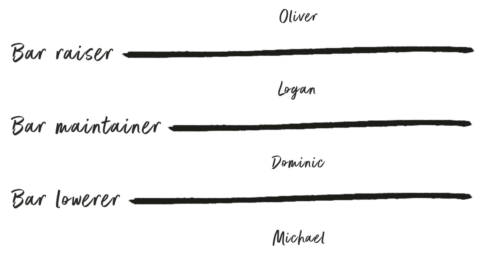
在这幅图中，我使用这个问题绘制了四个假设的人。很简单：Michael——标准降低者——需要被解雇，而Oliver——标准提高者——需要被提升到管理职位。正如研究表明的，Michael会对团队文化产生不成比例的毒性影响，而如果Oliver有机会在组织中坐上更高的位置，他可以对团队文化产生不成比例的积极影响。
这个框架在根据当前团队标准评估新员工时也非常有用。
每次招聘时，你都应该寻求提高标准，就像Sir Alex Ferguson所做的那样，如果任何现有员工——无论他们过去为你赢得了多少奖杯——成为标准降低者，你必须迅速果断地采取行动，阻止他们的影响破坏神圣的集体文化。
“公司”这个词的定义就是”一群人”。
利用进步的力量
这个定律揭示了任何组织中团队参与、动机和满足感的最重要力量。如果你能让人们感受到这一点，他们会热爱成为你团队的一部分。
‘赢得奖牌似乎遥不可及，就像远方的一座高山，触不可及。人们在想，天哪，我们怎么可能从现在的位置到达那里？我们能相信什么？我们如何获得一些动力？我们如何获得一些具有感染力的热情？’
Sir David Brailsford，英国自行车运动前绩效总监，在《The Diary Of A CEO》节目中
几年前，我采访了Sir David Brailsford，他以一个名为“边际收益”的理论背后的策划者而闻名。他的理论因2008年英国自行车队的故事以及他们在多届奥运会上的持续成功而广为人知。
在2008年之前，英国自行车运动被普遍视为这项运动的笑柄。为了扭转局面，管理机构聘请绩效总监David Brailsford来改变团队的理念、策略和文化。
Brailsford相信，自行车运动各个方面1%的改进会汇聚成显著的性能提升。在他的指导下，英国自行车队停止考虑重大进步，开始专注于最小、最容易的细节：使用抗菌洗手液减少感染，在自行车轮胎上涂抹酒精以获得更好的抓地力，重新设计自行车座椅以提高舒适度，更换运动员卧室的枕头以改善睡眠，对自行车和比赛服进行大量风洞测试等。
Brailsford接手后，在五年内，英国自行车队在2008年北京奥运会上赢得了57%的公路和场地自行车金牌，在2012年伦敦奥运会上创造了7项世界纪录和9项奥运纪录！从2007年到2017年，英国自行车手赢得了178个世界冠军、66枚奥运或残奥会金牌，并夺得了5次环法自行车赛冠军。这使得这十年成为历史上任何自行车队最成功的时期！
在我对Brailsford的采访中，我问他专注于小的边际进步如何带来如此巨大的动力、成功和一致性，他告诉我：
人们想要进步的感觉，如果我们追求完美，我们会失败，因为完美太遥远了。
所以不追求完美，让我们有一点点进步，仅仅一点点，这会让我们感觉良好。所以，让我们确定基础，把它们做对，然后下周问自己，我们还能做什么其他小事情？
有无数事情可能影响自行车表现。我们能不能，我不知道，改变我们的饮食，让它比本周稍微更优，并在下周做到？每个人都说，是的，我们能做到！好。我们还能做什么？我们本周能在健身房多做一些吗？我们能稍微改变我们的态度吗？你能做到吗？是的，我们能做到。好。所以我们开始行动。然后到了下周问，我们做了所有那些事吗？是的，我们做了。我们没有走得很远，但我告诉你，感觉相当好。
突然间你开始有了这种想法，你在前进。当你感觉自己在前进时，你对自己感觉良好。微小的进步对人们意味着很多，当他们感受到时，他们意识到明天可以再次做到。
而当你试图做大事时，这不太可持续。我们都在一月份在健身房全力以赴，然后当然到了二月，我们又都停止了。为什么会这样？很少有人能做出重大改变并使其可持续，但做出小的渐进式改变并使其坚持下去是相当容易的。我认为，随着时间推移的坚持能力是产生巨大差异的关键。我们从来不考虑领奖台、终点线或奖杯——我们不谈论那些——我们考虑今天能做的最小的事情来取得进步。
当你创造这种文化时，人们感受到进步，他们充满活力。更多想法开始从团队中涌现，它们也被采用。团队中出现了一种叙述，我们在前进，我们在改变，我们在做所有小事，因为我们愿意做其他人不愿意做的小事。这产生了差异。
我经常在我们团队中这样说，我们会工作到很晚，我说，好吧，伙计们，让我们聚在一起一分钟。我们之所以优秀，是因为我们愿意做所有这些小事，而那些现在被锁在酒店里睡觉的其他团队懒得去做。这很有效，你知道，这很有效，百分百有效，我做了20年。这很大程度上是关于那种热情和积极拥抱的态度，不把小改变视为琐事。进步是一种强大的力量。
进步的概念通常被认为是一种有形的结果，然而研究持续表明，进步真正的激励力量更多是感受和情感，而非事实和数据。
正如研究员Teresa Amabile在《哈佛商业评论》中指出的，‘在工作者感觉他们在工作中取得进展的日子里，或者当他们得到帮助克服障碍的支持时，他们的情绪最积极，成功的动力达到顶峰。’
这里的关键短语是’当工作者感觉他们取得进展时’。
你实际完成了多少几乎与你的动机无关：但如果你感觉自己在取得进展，你就会有动力继续前进。
当加入一个缺乏动力、苦苦挣扎的团队时，集体心理就像路边抛锚的双层巴士，四个轮胎都瘪了。灵感和集体信念是所有团队运行的能量——它是他们动力的源泉，轮胎中的空气和引擎中的燃料。
大卫·布雷尔斯福德爵士在加入失败的英国自行车队时理解了这一点——他知道在那个时候，取得巨大的有形成就不如给团队一种他们正在完成某些事情的感觉更重要，这就是为什么他首先专注于小胜利——因为这是释放进步动机力量、启动巴士、给引擎加油并让车轮转动起来的最简单方法。
‘这些小胜利之所以更重要，是因为与世界上的重大突破相比，它们更容易发生。如果我们只等待大胜利，我们会等很长时间。而且我们很可能在看到任何切实成果之前就放弃了。你需要的不是大胜利，而是小胜利带来的前进动力。’
Teresa Amabile
通过她令人难以置信的研究——分析了近12,000份日记条目和动机情绪的日常排名，Amabile发现”在工作中取得进展——即使是渐进式进展——比任何其他工作日事件都更频繁地与积极情绪和高动机相关联”。
当我采访《Indistractible》一书的作者Nir Eyal时——这本具有里程碑意义的书揭示了人类为什么拖延，他断言人们拖延的唯一原因是他们试图避免生活中某种形式的”心理不适”。任务越大，我们对完成它的能力感觉越不胜任，拖延就越严重。你必须就一个你不完全理解的话题写的那篇文章，你必须在关系中面对的那个敏感问题（很可能会导致激烈争吵），你想要启动但不清楚从哪里开始的那项业务——这些挑战感觉像要攀登的山峰；它们造成巨大的心理不适，因此激发巨大的拖延。
克服这种不适并防止拖延的关键是将任务”小型化”为容易的、可实现的微目标。
让目标听起来和感觉上可实现，是伟大的组织理论家Karl E. Weick在几十年研究组织生活中深入探索的内容。
1984年，Weick发表了一篇开创性论文，将社会未能解决重大社会问题归咎于我们向世界呈现挑战的方式。“构思社会问题的巨大规模往往会阻止创新和行动，”他抱怨道。“人们往往以压倒他们做任何事情能力的方式来定义社会问题。”他甚至说”除非人们认为它们不是’问题’，否则无法解决问题”：
当问题的规模被放大时，思考和行动的质量会下降，因为挫折、焦虑和无助等过程会被激活。
因此，行动、信心和运动的关键是将你的挑战缩小。
他承认，小胜利”可能看起来不重要”。但”一系列胜利”开始显现”可能吸引盟友、威慑对手并降低对后续提议阻力的模式”。小胜利”紧凑、有形、积极且无争议”。
太少的领导者理解这一点。
在1968年发表在《哈佛商业评论》上的一篇开创性文章中，美国心理学家Frederick Herzberg理论化，当个人在工作中获得”成就机会”时，他们最有动力。
然而，当《哈佛商业评论》调查了全球各公司和行业的近700名经理时，他们发现大多数经理、领导和CEO根本不相信或理解这一点。
当被要求对影响员工动机和情绪最有效的工具进行排名时，仅有5%的受访者将”在工作中取得进展”作为主要动机因素，95%的人将其排在最后或第三位。
相反，大多数人将”对出色工作的认可”排为激励员工和促进幸福感的最关键因素。虽然认可无疑能增强员工的内在工作生活，但它最终取决于成就。
作为领导者，理解进步的变革力量以及培养和催化它的方式至关重要。这种知识可以对员工福祉、创新、动机和创造性产出产生重大影响。
Amabile教授的五种方法可以帮助你促进团队的进步并获得唾手可得的成果的好处：
人类有着做有意义工作的深层渴望。1983年，史蒂夫·乔布斯利用这一点，在试图说服约翰·斯卡利离开他在百事可乐的极其成功的工作，成为苹果新任CEO时，问他：“你想花余生的时间卖糖水，还是想要一个改变世界的机会？”他的策略成功了——斯卡利不久后加入了苹果——因为它专注于苹果工作的意义性。取得进步能够提升你的职业动机，但前提是这项工作对你有意义。
在过去十年的所有公司中，我们做过的最有价值的事情之一就是建立系统，确保每个部门的每个团队成员都能感受到工作对世界产生的有意义影响。在一家公司里，我们有一个名为”Impact”的内部工作场所频道，专门分享强有力的故事、推荐信和反馈，展示每个团队成员的努力如何影响了世界各地真实人们的生活。
管理者不能把这件事留给偶然；在日益数字化的世界中，我们更多地处理数字、统计数据和屏幕，比以往任何时候都更容易忽视指标背后的意义。
当工作感觉毫无意义时，动机就会蒸发。
根据来自各行各业工人的238份日记条目，杀死意义感最快的因素是领导团队驳回员工的工作或想法，剥夺他们的所有权和自主权，让他们花时间做在完成前就被取消、更改或忽视的工作。
领导者重要的是要清楚地阐述目标，让团队成员确切知道他们需要完成什么。目标应该分解为更小的中期里程碑，专注于早期胜利来建立势头。应该跟踪进度，确保小胜利不被忽视。
在我的公司里，我们在所有团队中使用OKR（目标和关键结果）——一个定期目标设定框架——来确保这一点得以实现。
一旦期望的结果明确，领导者应该给团队成员空间来掌控全局。鼓励他们利用自己的技能和专业知识规划自己的路径。
在我所有团队中最重要的特征之一是给人们既失败又成功的空间。作为CEO，我的工作是扮演支持型促进者的角色，而不是批评性的微观管理者。
领导者应该主动消除阻止团队每日进步的任何障碍、官僚主义和签署流程。这包括识别和提供他们完成工作所需的资源。
如法则20中提到的，与我所有总监的频繁检查让我能够快速果断地做到这一点。团队成员往往确切知道什么在阻碍他们——但领导者很少费心去问他们，当他们问时，也很少足够快地行动来解决问题。这导致信任的衰减，团队成员在未来越来越不愿意对造成摩擦的问题发声。
领导者需要尽可能大声、广泛地指出、宣传和赞扬进步。认可强化行为，但它也作为证据向相邻团队表明进步对他们来说也是可能的。
在我经营的每家公司和团队中，团队负责人被要求向整个公司广播每周更新，详述他们团队那一周取得的所有进步。这个仪式在创造一种集体感方面极其强大，正如大卫·布雷斯福德爵士所说，让我们感觉”正在前进”，当人们觉得他们正在前进时，他们更有动力，感觉更快乐，对领导层更投入。
要解决问题，鼓励并庆祝小胜利。这提供了持续的前进动力，创造成功氛围和团队正在朝着更大目标前进的积极感觉。当员工投入到他们正在做的工作中，并感觉他们正在产生影响时，他们最有动力。
世界上最有职业回报感的感觉是前进的感觉。
你必须成为一个不一致的领导者
这个法则将教你如何成为真正伟大的管理者和领导者——通过不一致。
我与曼联传奇帕特里斯·埃弗拉坐下来交流，他在亚历克斯·弗格森爵士手下踢了近十年左后卫，想了解用他自己的话说，是什么让弗格森成为有史以来最伟大的体育经理。帕特里斯立即提到了2007年的一天，完美地突显了这位经理的才华。
那是2007年2月4日的下午，伦敦一个寒冷、阴沉的周日。天空阴云密布，细雨纷飞，曼联抵达白鹿巷球场，当时是托特纳姆热刺的主场。
红魔队本赛季开局强劲，位居联赛榜首，领先三分，今天面对的是一支状态良好的主队，他们决心击败联赛领头羊。
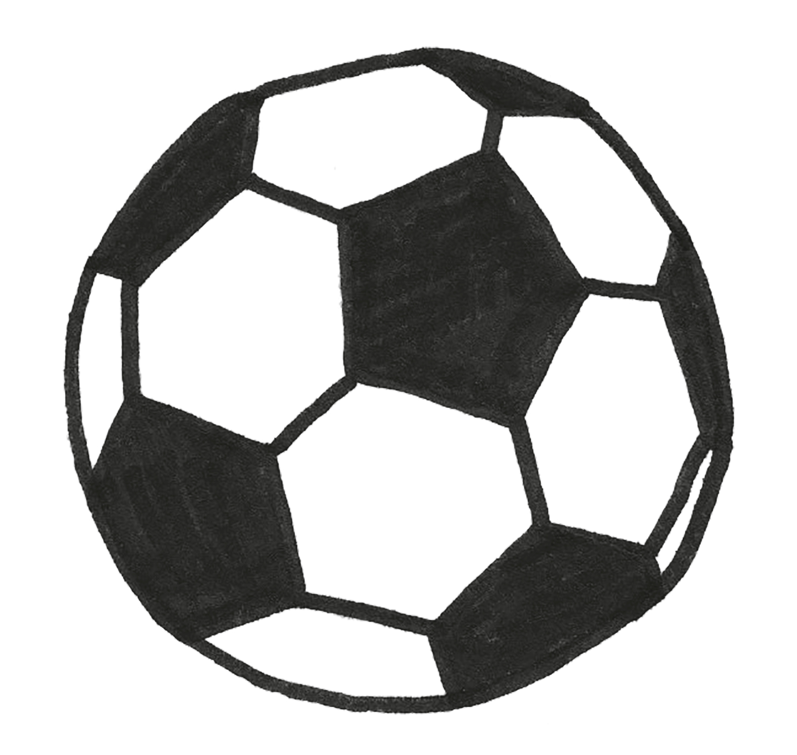
上半场比赛紧张激烈，双方都无法取得明显优势。两队为争夺控球权激烈拼抢，中场区域到处都是飞溅的球鞋和滑铲动作。然而，上半场最后一分钟，曼联幸运地获得了一个点球，这让他们在半场休息时以1-0领先进入更衣室。
当球队进入更衣室时，弗格森走了进来，坐下后三分钟内一言不发。更衣室里异常安静，球员们紧张地坐着，避免与沉默的主教练有眼神接触。他们知道当弗格森沉默不语时，这不是什么好兆头。
埃弗拉正在踢着他后来形容为”人生最佳比赛”的表现。他一直是托特纳姆防线的噩梦，在左翼不断突进并送出精准传中。
帕特里斯正微笑着喝水，接受队友们的祝贺，这时他注意到弗格森正直直地看着他。他回忆道：
我正在踢人生最佳的比赛。我向你保证，我当时状态火热。我回到更衣室时，很放松、很开心，在喝水。我的队友们都在祝贺我，说’哇，帕特里斯，你状态太棒了！‘然后弗格森走进来，坐了三分钟，眼睛盯着我。他问我，’帕特里斯，你还好吗？’我说，’是的，我很好，老板。’然后他问我’你累吗？’
说真的，我环顾四周，觉得他的问题一定是在开玩笑。也许有隐藏摄像头，他在逗我玩。我周围的球员也同样困惑。
‘不，我很好’，我回答。
’你为什么把球传回给门将，’他继续问。
‘因为我前面没有任何选择，那是我唯一的选择’，我解释道。
‘如果你再那样做，你就来坐在我旁边看剩下的比赛。这是你为曼联效力以来踢得最糟糕的比赛。’他喊道，’如果你再回传，我向你保证，你永远不会再为曼联踢球。’
我闭嘴了。我咬着嘴唇。但我从不想在队友面前顶撞他。人们都震惊了。每个人都在想，这是怎么回事？
曼联在下半场带着renewed energy(重新焕发的能量)、满腔怒火和更加专注的状态走出更衣室。他们主导了下半场，又进了三球，以4-0击败主队。这场表现将作为曼联最伟大的客场胜利之一载入史册。《独立报》称其为”一支处于巅峰状态球队的神圣拆解”。
帕特里斯仍然对半场时弗格森的训斥感到困惑：
我洗了澡，穿好衣服，迫不及待想睡觉，第二天回到训练场和他谈谈发生的事情。第二天我敲了敲他办公室的门，他邀请我进去。
’哦哦哦，帕特里斯，你好吗，我的孩子？过来坐下！’弗格森说。
我回答：‘老板，昨天发生了什么？你为什么对我说那些话？’
‘帕特里斯，你是场上最好的球员。但是你知道，克里斯蒂亚诺·罗纳尔多开始做太多花哨动作，你的一些队友在浪费控球机会，当你为曼联踢球时，你需要进一个球，然后第二个，然后第三个。你不能只进一个球。你是最好的球员，我的孩子，出去吧！’
他在吹口哨、唱歌和大笑。
他知道我能承受这种火力；他对我吼叫是因为他想给其他球员传递信息，给克里斯蒂亚诺，确保他们保持专注并尊重托特纳姆。所以，他选择了场上最好的球员，一个他知道能承受的球员，这样我们队的每一个其他球员都会想，如果他在杀死场上最好的球员，我最好提高我的比赛水平。这就是我所说的管理，这就是弗格森。
令我惊讶的是，我采访过的每一位曼联球员都说亚历克斯·弗格森爵士不关心战术、策略和阵型。他主要关心的是如何发挥每个个体的最佳水平、球队文化和他们的态度；他不希望他们变得自满。
在弗格森的曼联度过整个球员生涯的加里·内维尔告诉我：
他知道如何触动你的心灵，无论你是谁，他都知道如何触动你。当他想激励我时，他会谈论我的祖父母。我的祖父在战争中受伤，他的肩膀里至今还有战斗中的弹片。所以，亚历克斯爵士会说，’你的祖父母怎么样，每天起床，打领带，努力工作，去打仗？’当亚历克斯爵士对我说这些话时，我会坚持下去。当他和别人说话时，他会说完全不同的话。他会以不同的方式触动每个个体，确保他们永远不会放弃。
里奥·费迪南德作为中后卫和队长为曼联效力了12年，他告诉我弗格森最大的特质是他能够了解每个个体，并成为适合所有人的不同形状的拼图片：
他理解人性。他不会对所有球员采用相同的方式。一刀切的管理方式并不是带领团队的最佳方法。每个人都不同，每个人接受建议的方式也不同。每个人接受批评的方式也不同。这就是为什么领导者或管理者需要了解每个个体。这是弗格森爵士最伟大的品质之一。他了解每个人的一切。有一次我祖父住院时，尽管他只见过我祖父两次，他还是知道我祖父最喜欢的饮品，花束送到了我妈妈家里。他知道这对我很重要。正是这些小事，让我为他拼得更加努力。
以下是弗格森的其他前球员们的话，总结了他成为杰出管理者的原因。
‘他有不同的方式对待不同的球员。他知道如何激发出每个人的最佳状态。’
彼得·舒梅切尔
‘他对我很严厉，但他必须这样做。他在我身上看到了在其他球员身上没有看到的东西，他推动我成为我能成为的最好的自己。’
大卫·贝克汉姆
‘他总是知道什么时候该给我一脚，什么时候该拥抱我。他知道如何以不同的方式对待不同的球员。’
瑞安·吉格斯
‘他对我的待遇与其他球员不同，但这是好的方式。他推动我变得更好，我认为这就是我成为今天这样球员的原因。’
韦恩·鲁尼
‘他对我的待遇与其他球员不同。他总是和我交谈，给我建议。他帮助我成为更好的球员。’
克里斯蒂亚诺·罗纳尔多
每本致力于领导力和管理的书籍都推崇一致性、可预测性和公平性作为伟大领导者的标志。然而，我对真正杰出管理者长达十年的研究揭示了相反的真相。我自己领导四家公司超过1000名个人的经验告诉我，我适应每个个体的能力，在方法上保持不一致的能力，以及像变色龙一样巧妙地转换情绪以激发团队中每个成员最佳状态的能力，与我的激励能力呈正相关。
正如我们在本书之前的定律中探讨的那样，人类并不是我们自以为的那种理性、逻辑和分析性的生物。我们是情感化的、非逻辑的，被多种情感冲动、恐惧、欲望、不安全感和童年经历所驱动。鉴于此，一种一刀切的、以理性、信息和事实为中心的领导方法，对于激发任何群体的激情、动机和行动都是极其不足的。
对于作为领导者的我们来说，要成为团队中每个成员的互补拼图块，我们必须像团队中的人们一样不一致、情感多变和波动。
里奥·费迪南德讲述了弗格森如何是一个精湛的演员，能够假装任何情绪，从愤怒到兴奋，以激发他认为最有利于团队成功的情绪：
他是如此有计算性。我们球员之间经常讨论这一点。他说话的方式——他会在失败后上电视，故意愤怒地抨击裁判，以转移对球员的注意力。他这样做是为了将焦点从团队身上移开，确保我们不会对自己感到沮丧，这样我们就会为下一场比赛而有动力。他是如此有计算性。最好的人员管理者。
除非你理解团队中每个成员的独特形状，否则不可能无缝地融入团队成为一块拼图。弗格森爵士在这方面的敏锐度是传奇性的，正如他的前球员和员工，甚至竞争对手管理者所证实的那样。他拥有百科全书式的知识，从他球员妻子的爱好到他们宠物的名字，正如里奥·费迪南德告诉我的，甚至包括他们祖父偏爱的威士忌品牌。更重要的是，他知道团队中的每个成员都被截然不同的激励因素所推动。虽然一个球员可能在弗格森臭名昭著的’吹风机’待遇下茁壮成长（他会在更衣室或训练场上愤怒地对他们大喊），另一个可能需要更富有同情心的方法，而还有一个可能被更不干预的方法所激励。这就是为什么弗格森不必成为许多人认为他必须是的战术大师，而是一个情感专家。当你从事激励人们的业务时，情感管理就是一切。
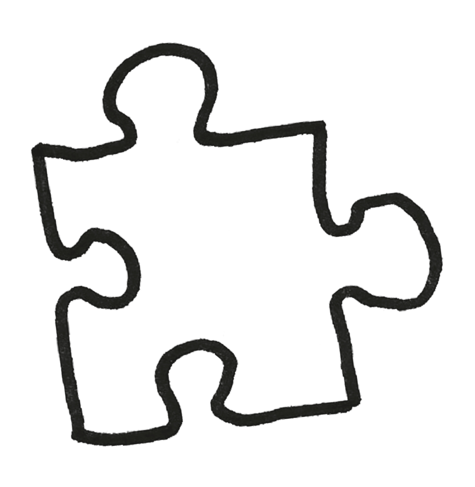
伟大的领导者是流动的、灵活的，充满波动的。
他们是任何他们需要成为的形状，以完成你的激励。
学习永无止境
扫描这里：
伟大的四大支柱
Covey, S. R. (2004). The 7 Habits of Highly Effective People: Powerful Lessons in Personal Change. Simon & Schuster.
Duckworth, A. (2016). Grit: The Power of Passion and Perseverance. Scribner.
Langer, E. J. (1989). Mindfulness. Addison-Wesley.
Brown, B. (2010). ‘The Power of Vulnerability’ [Video file]. TED Conferences. https://www.ted.com/talks/brene_brown_the_power_of_vulnerability
Godin, S. (2018). This is Marketing: You Can’t Be Seen Until You Learn to See. Portfolio. Penguin
Pink, D. H. (2005). A Whole New Mind: Why Right-Brainers Will Rule the Future. Riverhead Books.
Covey, S. R. (2004). The 7 Habits of Highly Effective People: Powerful Lessons in Personal Change. Simon & Schuster.
Haidt, J. (2006). The Happiness Hypothesis: Finding Modern Truth in Ancient Wisdom. Basic Books.
Keller, T. (2012). Every Good Endeavor: Connecting Your Work to God’s Work. Viking.
Collins, J. (2001). Good to Great: Why Some Companies Make the Leap and Others Don’t. Random House Business.
Duhigg, C. (2016). Smarter Faster Better: The Secrets of Being Productive in Life and Business. Random House.
Lencioni, P. (2002). The Five Dysfunctions of a Team: A Leadership Fable. John Wiley & Sons.
Abbate, B. (2021, January 29). ‘Why a Good Reputation is Important to Your Life and Career’. Medium. https://medium.com/illumination/why-a-good-reputation-important-to-your-life-and-career-80c1da06430e
Bolles, R. N. (2014, September 2). ‘4 Ways To Change Careers In Midlife’. Forbes. https://www.forbes.com/sites/nextavenue/2014/09/02/4-ways-to-change-careers-in-midlife/?sh=38da133419df
Forbes Coaches Council. (2017, October 10). ‘15 Simple Ways To Improve Your Reputation In The Workplace’. Forbes. https://www.forbes.com/sites/forbescoachescouncil/2017/10/10/15-simple-ways-to-improve-your-reputation-in-the-workplace/?sh=d88cf7f53607
Schoeller, M. (2022, November 15). ‘Behind The Billions: Elon Musk’. Forbes. https://www.forbes.com/sites/forbeswealthteam/article/elon-musk/
SpaceX. (n.d.). SpaceX. https://www.spacex.com/mission/
Umoh, R. (2018, January 16). ‘Billionaire Richard Branson reveals the simple trick he uses to live a positive life’. CNBC. https://www.cnbc.com/2018/01/16/richard-branson-uses-this-simple-trick-to-live-a-positive-life.html
WatchDoku – The documentary film channel. (2021, December 8). ‘ELON MUSK: THE REAL LIFE IRON MAN’ Full Exclusive Biography Documentary English HD 2021 [Video file]. YouTube. https://www.youtube.com/watch?v=TUQgMs8Fkto
Western Governors University. (2020, July 29). ‘The 5 P’s of Career Management’. Western Governors University. https://www.wgu.edu/blog/career-services/5-p-career-management2007.html#close
Williams-Nickelson, C. ‘Building a professional reputation’. (2003, March). gradPSYCH magazine. https://www.apa.org/gradpsych/2007/03/matters
The Decision Lab. (n.d.). ‘Why do we buy insurance?’ The Decision Lab. https://thedecisionlab.com/biases/loss-aversion
Education Endowment Foundation. (2021, September). ‘Mastery learning’. | Education Endowment Foundation. https://educationendowmentfoundation.org.uk/education-evidence/teaching-learning-toolkit/mastery-learning
Feynman, R. P. and Leighton, R. (1992). Surely You’re joking, Mr Feynman!: Adventures of a Curious Character. Vintage.
Harari, Y. N. (2018). 21 Lessons for the 21st Century. Random House.
Hibbert, S. A. (2019). Skin in the game: How to create a learning curve that sticks. John Wiley & Sons.
Kahneman, D. and Tversky, A. (1979). ‘Prospect theory: An analysis of decision under risk’. Econometrica, 47(2), 263-292. https://doi.org/10.2307/1914185
Manson, M. (2016). The Subtle Art of Not Giving a F*ck: A Counterintuitive Approach to Living a Good Life. Harper.
Sinek, S. (2011). Start with Why: How Great Leaders Inspire Everyone to Take Action. Portfolio Penguin.
Taleb, N. N. (2018). Skin in the Game: Hidden Asymmetries in Daily Life. Allen Lane.
Thaler, R. H. and Sunstein, C. R. (2008). Nudge: Improving Decisions About Health, Wealth, and Happiness. Yale University Press.
Thompson, C. (2013). Smarter Than You Think: How Technology is Changing Our Minds for the Better. William Collins.
Bazerman, M. H. and Moore, D. A. (2013). Judgment in Managerial Decision Making (8th ed.). John Wiley & Sons.
Fisher, R. and Ury, W. L. (2011). Getting to Yes: Negotiating Agreement Without Giving In. Penguin Books.
Gladwell, M. (2000). The Tipping Point: How Little Things Can Make a Big Difference. Little, Brown and Company.
Heath, C. and Heath, D. (2007). Made to stick: Why some ideas survive and others die. Random House.
Sharot, T. (2017). The Influential Mind: What the Brain Reveals About Our Power to Change Others. Henry Holt & Company.
Sharot, T., Korn, C. W. and Dolan, R. J. (2011). ‘非现实乐观主义如何在面对现实时得以维持’. Nature Neuroscience, 14(11), 1475–1479. https://doi.org/10.1038/nn.2949
Thompson, L. (2014). The Mind and Heart of the Negotiator (6th ed.). Pearson.
Carter-Scott, C. (1998). If Life is a Game, These are the Rules. Broadway Books.
Cialdini, R. B. (2008). Influence: Science and Practice. Pearson.
Dawkins, R. (2006). The God Delusion. Mariner Books.
Festinger, L. (1957). A Theory of Cognitive Dissonance. Stanford University Press.
Gladwell, M. (2006). Blink: The Power of Thinking Without Thinking. Penguin.
Haidt, J. (2013). The Righteous Mind: Why Good People are Divided by Politics and Religion. Penguin.
Harris, S. (2010). The Moral Landscape: How Science Can Determine Human Values. Free Press.
Kahneman, D. (2011). Thinking, Fast and Slow. Farrar, Straus and Giroux.
Lipton, B. H. (2005). The Biology of Belief: Unleashing the Power of Consciousness, Matter and Miracles. Hay House.
McTaggart, L. (2007). The Intention Experiment: Use Your Thoughts to Change Your Life and the World. Harper Element.
Pinker, S. (2018). Enlightenment Now: The Case for Reason, Science, Humanism, and Progress. Viking.
Prochaska, J. O., Norcross, J. C. and DiClemente, C. C. (1994). Changing for Good: The Revolutionary Program that Explains the Six Stages of Changes and Teaches You How to Free Yourself from Bad Habits. William Morrow.
Sharot, T. (2012). The Optimism Bias: Why We’re Wired to Look on the Bright Side. Robinson.
Sharot, T., Korn, C. W. and Dolan, R. J. (2011). ‘非现实乐观主义如何在面对现实时得以维持’. Nature neuroscience, 14(11), 1475-1479. https://doi.org/10.1038/nn.2949
Sharot, T. (2017). The Influential Mind: What the Brain Reveals About Our Power to Change Others. Henry Holt & Company.
Shermer, M. (2002). Why People Believe Weird Things: Pseudoscience, Superstition, and Other Confusions of Our Time. Holt Paperbacks.
Shermer, M. (2017). Skeptic: Viewing the World with a Rational Eye. Henry Holt & Company.
Stokstad, E. (2018). ‘看见气候变化：科学、共情与气候变化的视觉文化’. Environmental Humanities, 10(1), 108-124.
Tavris, C. and Aronson, E. (2007). Mistakes Were Made (But Not by Me): Why We Justify Foolish Beliefs, Bad Decisions, and Hurtful Acts. Houghton Mifflin Harcourt.
Zajonc, R. B. (1980). ‘感受与思考：偏好无需推理’. American Psychologist, 35(2), 151-175. https://doi.org/10.1037/0003-066X.35.2.151
Anderson, C. P. and Slade, S. (2017). ‘如何将批评转化为竞争优势’. Harvard Business Review, 95(5), 94-101.
Aronson, E. (1969). ‘cognitive dissonance理论：当前视角’. In L. Berkowitz (Ed.), Advances in Experimental Social Psychology, 4, 1-34. Academic Press.
Chansky, T. E. (2020). ‘转变：如何接受并适应变化’. Tamar E. Chansky. https://tamarchansky.com/transitions-how-to-lean-in-and-adjust-to-change/
Festinger, L. (1957). A Theory of Cognitive Dissonance. Stanford University Press.
Ford, H. (1922). My Life and Work. Currency.
Grover, A. S. (1999). Only the Paranoid Survive: How to Exploit the Crisis Points That Challenge Every Company. Doubleday.
MacDailyNews. (2010, March 13). ‘微软CEO史蒂夫·鲍尔默嘲笑苹果iPhone’ [视频文件]. YouTube. https://www.youtube.com/watch?v=nXq9NTjEdTo
Mulligan, M. (2022, May 11). ‘iPod如何改变一切’. Music Industry Blog. https://musicindustryblog.wordpress.com/2022/05/11/how-ipod-changed-everything/
Orr, M. (2019). Lean Out: The Truth About Women, Power, and the Workplace. HarperCollins Leadership.
Ross, L. (1977). ‘直觉心理学家及其缺陷：归因过程中的扭曲’. In Berkowitz, L. (ed.), Advances in Experimental Social Psychology ), 10, 173-220. Academic Press.
Ross, L. (2014). The psychology of intractable conflict: A handbook for political leaders. Oxford University Press.
Stoll, C. (1995, February 26). ‘为什么网络不会成为极乐世界’. Newsweek. https://www.newsweek.com/clifford-stoll-why-web-wont-be-nirvana-185306
Cialdini, R. B. (1984). Influence: The Psychology of Persuasion. HarperCollins.
Cooper, J. (2007). Cognitive dissonance: Fifty Years of a Classic Theory. Sage Publications.
Festinger, L. (1957). A Theory of Cognitive Dissonance. Stanford University Press.
Kamarck, E. (2012, September 11) ‘你比4年前过得更好吗？’ WBUR. https://www.wbur.org/cognoscenti/2012/09/11/better-off-2012-elaine-kamarck.
McArdle, M. (2014). The Up Side of Down: Why Failing Well is the Key to Success. Viking.
Maddux, J. E. and Rogers, R. W. (1983). ‘保护动机和自我效能感：恐惧诉求和态度改变的修正理论’. 实验社会心理学杂志, 19(5), 469-479. https://doi.org/10.1016/0022-1031(83)90023-9
O’Keefe, D. J. (2002). 说服：理论与研究 (第2版). Sage Publications.
O’Mara, M. (2020年9月10日). ‘你比四年前过得更好吗？：总统政治中的经济因素’. 历史视角. https://www.historians.org/research-and-publications/perspectives-on-history/october-2020/are-you-better-off-than-you-were-four-years-ago-the-economy-in-presidential-politics
Reagan Library. (2016年5月6日). ‘罗纳德·里根与卡特总统的总统辩论，1980年10月28日’ [视频文件]. YouTube. https://www.youtube.com/watch?v=tWEm6g0iQNI
Schwarz, N. (1999). ‘自我报告：问题如何塑造答案’. 美国心理学家, 54(2), 93-105. https://doi.org/10.1037/0003-066X.54.2.93
Sherman, D. K. and Cohen, G. L. (2006). ‘自我防御心理学：自我肯定理论’. 实验社会心理学进展, 38, 183–242. Elsevier Academic Press. https://doi.org/10.1016/S0065-2601(06)38004-5
Sprott, D. E., Spangenberg, E. R., Block, L. G., Fitzsimons, G. J., Morwitz, V. G. and Williams, P. (2006). ‘问题-行为效应：我们所知道的和未来的方向’. 社会影响, 1(2), 128–137. https://doi.org/10.1080/15534510600685409
Tavris, C. and Aronson, E. (2007). 错误是必然的（但不是我犯的）：为什么我们为愚蠢的信念、错误的决定和伤人的行为辩护. Houghton Mifflin Harcourt.
Wood, W., Tam, L. and Witt, M. G. (2005). ‘环境变化，打破习惯’. 人格与社会心理学杂志, 88(6), 918-933. https://doi.org/10.1037/0022-3514.88.6.918
Aryani, E. (2016). ‘自我故事在日惹学生心理韧性中的作用’. 教育心理学与咨询杂志, 2(1), 25-31.
Duckworth, A. L., Peterson, C., Matthews, M. D. and Kelly, D. R. (2007). ‘Grit：对长期目标的坚持和激情’. 人格与社会心理学杂志, 92(6), 1087–1101. https://doi.org/10.1037/0022-3514.92.6.1087
Eubank Jr, C. (2023年5月1日). 个人沟通.
Gladwell, M. (2008). 异类：成功的故事. Allen Lane.
Macnamara, B. N., Hambrick, D. Z., & Oswald, F. L. (2014). ‘刻意练习与音乐、游戏、体育、教育和专业表现：一项元分析’. 心理科学, 25(8), 1608–1618. https://doi.org/10.1177/0956797614535810
Polk, L. (2018). ‘自我概念与韧性：一种相关性’. 国际社会科学与经济研究杂志, 3(2), 1280-1291.
Singh, P. (2023). 你的自我故事：实现远大抱负的秘密策略. HarperCollins.
Steele, C. M. and Aronson, J. (1995). ‘Stereotype threat与非裔美国人的智力测试表现’. 人格与社会心理学杂志, 69(5), 797–811. https://doi.org/10.1037/0022-3514.69.5.797
Tentama, F. (2020). ‘自我故事、韧性和心理韧性’. 应用心理学杂志, 4(1), 13-21.
Wooden, J. (1997). 伍登：一生在场内外的观察与反思. McGraw Hill.
Woolfolk Hoy, A., & Murphy, P. K. (2008). ‘青少年的身份发展、动机和成就’. 载于 Meece, J. L. and Eccles, J. S. (编), 学校、教育和人类发展研究手册, 391–414. Routledge.
Zhang, S., Tompson, S., White-Spenik, D., & Blair, C. B. (2013). ‘Stereotype threat和自我肯定：种族/族裔和自尊的调节作用’. 文化多样性与少数民族心理学, 19(4), 395–405.
American Psychological Association. (2023年3月21日) ‘关于意志力你需要知道的：自我控制的心理科学’. https://www.apa.org. https://www.apa.org/topics/personality/willpower
Baumeister, R. F., Bratslavsky, E., Muraven, M. and Tice, D. M. (1998). ‘Ego depletion：主动自我是有限的资源吗？’. 人格与社会心理学杂志, 74(5), 1252–1265. https://doi.org/10.1037/0022-3514.74.5.1252
Clear, J. (2020年2月4日). ‘如何打破坏习惯（并用好习惯替代）’. James Clear. https://jamesclear.com/how-to-break-a-bad-habit
Duhigg, C. (2014). 习惯的力量：我们为什么这样做，以及如何改变. Random House.
Eyal, N. (2013). 上瘾：如何打造习惯性产品. Portfolio Penguin.
Ferrario, C. R., Gorny, G. and Crombag, H. S. (2005). ‘关于成瘾中强迫性药物寻求的神经和心理机制’. 神经精神药理学与生物精神病学进展, 29(4), 613-627.
Friedman, R. S., Fishbach, A. and Förster, J. (2003). ‘促进和预防线索对创造力的影响’. 人格与社会心理学杂志, 85(2), 312-326.
Gollwitzer, P. M. and Sheeran, P. (2006). ‘Implementation intentions and goal achievement: A meta-analysis of effects and processes’. Advances in Experimental Social Psychology, 38, 69-119. https://doi.org/10.1016/S0065-2601(06)38002-1
Hofmann, W., Adriaanse, M., Vohs, K. D. and Baumeister, R. F. (2014). ‘Dieting and the self-control of eating in everyday environments: An experience sampling study’. British Journal of Health Psychology, 19(3), 523-539. https://doi.org/10.1111/bjhp.12053.
Muraven, M., Tice, D. M. and Baumeister, R. F. (1998). ‘Self-control as a limited resource: Regulatory depletion patterns’. Journal of Personality and Social Psychology, 74(3), 774–789. https://doi.org/10.1037/0022-3514.74.3.774
Segerstrom, S. C., Stanton, A. L., Alden, L. E., & Shortridge, B. E. (2003). ‘A Multidimensional Structure for Repetitive Thought: What’s On Your Mind, And How, And How Much?’ Journal of Personality and Social Psychology, 85(5), 909-921. https://doi.org/10.1037/0022-3514.85.5.909
Sharot, T. (2019). The Influential Mind: What the Brain Reveals About Our Power to Change Others. Abacus.
Wegner, D. M., Schneider, D. J., Carter, S. R. and White, T. L. (1987). ‘Paradoxical effects of thought suppression’. Journal of Personality and Social Psychology, 53(1), 5–13. https://doi.org/10.1037/0022-3514.53.1.5
Wood, W. and Neal, D. T. (2007). ‘A new look at habits and the habit-goal interface’. Psychological Review, 114(4), 843–863. https://doi.org/10.1037/0033-295X.114.4.843
Buffett, W. E. (1998). ‘Owner’s Manual’. Fortune, 137(3), 33.
Caci, G., Albini, A., Malerba, M., Noonan, D. M., Pochetti, P. and Polosa, R. (2020). ‘COVID-19 and Obesity: Dangerous Liaisons’. Journal of Clinical Medicine, 9(8), 2511. https://doi.org/10.3390/jcm9082511
Centers for Disease Control and Prevention. (2022, September 27) ‘Obesity, Race/Ethnicity, and COVID-19’. Centers for Disease Control and Prevention. https://www.cdc.gov/obesity/data/obesity-and-covid-19.html
Obama, President. (2013, September 26) ‘Remarks by the President on the Affordable Care Act’. whitehouse.gov. https://obamawhitehouse.archives.gov/the-press-office/2013/09/26/remarks-president-affordable-care-act
Allan, R. P. et al. (2021). ‘Climate Change 2021: The Physical Science Basis. Contribution of Working Group I to the Sixth Assessment Report of the Intergovernmental Panel on Climate Change’. Cambridge University Press.
Brennan, S. (2018, May 14). ‘Is this the best workplace in Britain?’ Mail Online. https://www.dailymail.co.uk/femail/article-5718875/Is-best-workplace-Britain.html
Coldwell, W. (2018, February 20). ‘Drink in the view: BrewDog to open its first UK “beer hotel”.’ Guardian. https://www.theguardian.com/travel/2018/feb/20/drink-in-the-view-brewdog-to-open-its-first-uk-beer-hotel
International Energy Agency. (2021, May). ‘Net Zero by 2050: A Roadmap for the Global Energy Sector’.
McCarthy, N. (2019, February 8). ‘The Tesla Model 3 Was The Best-Selling Luxury Car In America Last Year’ [Infographic]. Forbes. https://www.forbes.com/sites/niallmccarthy/2019/02/08/the-tesla-model-3-was-the-best-selling-luxury-car-in-america-last-year-infographic/
Morris, J. (2020, June 14). ‘How Did Tesla Become The Most Valuable Car Company In The World?’ Forbes. https://www.forbes.com/sites/jamesmorris/2020/06/14/how-did-tesla-become-the-most-valuable-car-company-in-the-world/
NASA Global Climate Change. (n.d.). ‘The Causes of Climate Change’. Retrieved April 30, 2023, from https://climate.nasa.gov/causes/
National Oceanic and Atmospheric Administration. (n.d.). ‘Climate’. Retrieved 30 April 2023. from https://www.climate.gov/
Shastri, A. (2023, February 13). ‘Complete Analysis on Tesla Marketing Strategy - 360 Degree Analysis’. IIDE. https://iide.co/case-studies/tesla-marketing-strategy/
Sutherland, R. (2019). Alchemy: The Surprising Power of Ideas that Don’t Make Sense. WH Allen.
Union of Concerned Scientists. (2022). ‘The Climate Deception Dossiers’.
United Nations Environment Programme. (2021, October 26). ‘The Emissions Gap Report 2021’. https://www.unep.org/resources/emissions-gap-report-2021
United Nations Framework Convention on Climate Change. (2015). ‘Paris Agreement’. Retrieved 30 April 2023. https://unfccc.int/process-and-meetings/the-paris-agreement/the-paris-agreement
United States Environmental Protection Agency. 2023, May 2. ‘Climate Change Indicators in the United States’. https://www.epa.gov/climate-indicators
World Wildlife Fund. (n.d.). ‘气候变化的影响’. 检索于2023年4月30日. https://www.worldwildlife.org/threats/climate-change
127小时. (2010). [电影]. Fox Searchlight Pictures.
Avery, S. N. and Blackford, J. U. (2016, July 21). ‘慢热：习惯化在社交恐惧中的作用’, Social Cognitive and Affective Neuroscience, 11(11), 1832-1840. https://doi.org/10.1093/scan/nsw095.
BBC NEWS. (2002, October 23) ‘我砍掉手臂求生存’. http://news.bbc.co.uk/1/hi/health/2346951.stm
Davies, S. J. (2017). 运动心理学中的正念艺术：动中正念. Routledge.
Diamond, D. M., Park, C. R., Campbell, A. M., Woodson, J. C. and Conrad, C. D. (2005). ‘捕食者压力对长期空间记忆巩固与提取以及海马棘生成的影响’. Hippocampus, 16(7), 571-576. https://doi.org/10.1002/hipo.20188.
Frederick, P. (2011, March). ‘说服性写作：如何驾驭文字的力量’. ResearchGate. https://www.researchgate.net/publication/275207550_Persuasive_Writing_How_to_Harness_the_Power_of_Words
Groves, P. M. and Thompson, R. F. (1970). ‘习惯化：一个双过程理论’. Psychological Review, 77(5), 419–450. https://doi.org/10.1037/h0029810
James, L. R. (1952). ‘习惯化综述’. Psychological Bulletin, 49(4), 345–356.
James, W. (1890). 心理学原理. 第1卷. Henry Holt.
Keegan, S.M. (2015). 组织中的恐惧心理学：如何将焦虑转化为幸福感、生产力和创新. Kogan Page.
LeDoux, J. (2015). 焦虑：运用大脑理解和治疗恐惧与焦虑. Viking.
McGonigal, K. (2015). 压力的好处：为什么压力对你有益，以及如何善用压力. Avery.
McGuire, W. J. (1968). ‘人格与社会影响易感性’. 在Borgatta, E.F. 和 Lambert, W.W. (编), 人格理论与研究手册 (pp. 1130-1187). Rand McNally.
Mitchell, A. A. and Olson, J. C. (1981). ‘产品属性信念是广告对品牌态度影响的唯一中介吗？’. Journal of Marketing Research, 18(3), 318-332. https://doi.org/10.2307/3150973
Petty, R. E., & Cacioppo, J. T. (1986). 沟通与说服：态度改变的中心和外围路径. Springer.
Ralston, A. (2005). 进退两难. Simon & Schuster.
Sapolsky, R. M. (2017). 行为：人类最好和最坏时的生物学. Penguin Press.
Selye, H. (1976). 生活的压力. McGraw-Hill.
Smith, C. A. (1965). ‘刺激变化对语义饱和现象的影响’. Journal of Verbal Learning and Verbal Behavior, 4(5), 447–453.
Sokolov, E. N. (1963). ‘高级神经功能：定向反射’. Annual Review of Physiology, 25, 545–580. https://doi.org/10.1146/annurev.ph.25.030163.002553
Wilson, F. A. W. and Rolls, E. T. (1993). ‘刺激新颖性和熟悉性对执行识别记忆任务的猴子杏仁核神经元活动的影响’. Experimental Brain Research, 93(3), 367–82. https://doi.org/10.1007/BF00229353
Wilson, T. D. and Brekke, N. (1994). ‘心理污染和心理矫正：对判断和评价的不良影响’. Psychological Bulletin, 116(1), 117-142. https://doi.org/10.1037/0033-2909.116.1.117
Winkielman, P., Halberstadt, J., Fazendeiro, T. and Catty, S. (2006). ‘原型具有吸引力是因为它们对大脑来说很容易’. Psychological Science, 17(9), 799–806. https://doi.org/10.1111/j.1467-9280.2006.01785.x
Manson, M. (2016). 不在乎的微妙艺术：过好生活的反直觉方法. Harper.
Midson-Short, D. (2019, March 9). ‘营销中脏话的兴起’. Shorthand Content Marketing’. https://shorthandcontent.com/marketing/curse-words-in-marketing/
Knight, S. (2018). 冷静下来：如何控制你能控制的，接受你无法控制的，这样你就能停止恐慌，继续生活. Quercus.
Kludt, A. (2018, November 2). ‘Dermalogica创始人认为取悦他人会导致平庸’. Eater. https://www.eater.com/2018/11/2/18047774/dermalogicas-ceo-jane-wurwand-start-to-sale
The Diary Of A CEO. (2022, June 13). ‘Dermalogica创始人：在照顾心理健康的同时建立十亿美元企业’ [视频文件]. YouTube. https://www.youtube.com/watch?v=0KDESUdPRXs
Battye, L. (2018, January 10). ‘我们为什么喜欢它：麦当劳未来餐厅背后的心理学’. behavioral economics.com. https://www.behavioraleconomics.com/loving-psychology-behind-mcdonalds-restaurant-future
Dmitracova, O. (2019, December 2). ‘What companies can learn from behavioural psychology’. Independent. https://www.independent.co.uk/voices/customer-service-behavioural-psychology-uber-fred-reichheld-mckinsey-company-a9229931.html
Duhigg, C. (2013). The Power of Habit: Why We Do What We Do, and How to Change. Random House.
Fowler, G. (2014, July 22). ‘The Secret to Uber’s Success? It Isn’t Technology’. Wired.
Hogan, Candice. (2019, January 28). ‘How Uber Leverages Applied Behavioral Science at Scale’. Uber Blog. https://www.uber.com/en-GB/blog/applied-behavioral-science-at-scale/
Kim, W. C. and Mauborgne, R. (2004, October). ‘Blue Ocean Strategy’, Harvard Business Review.
Sutherland, R. (2019). Alchemy: The Surprising Power of Ideas that Don’t Make Sense. WH Allen.
The Secret Developer. (2023, January 6). ’Uber’s Psychological Moonshot. Medium. https://medium.com/@tsecretdeveloper/ubers-psychological-moonshot-8e75078722ae
Uber. (2023). ‘About Uber’. https://www.uber.com/us/en/about/
Ranganathan, C. (2019). Friction is Fiction: The Future of Marketing. HarperCollins Publishers.
Sutherland, R. (2009). ‘Life lessons from an ad man’. TED Conferences. [视频文件] https://www.ted.com/talks/rory_sutherland_life_lessons_from_an_ad_man
Tversky, A. and Kahneman, D. (1974). ‘Judgment under uncertainty: Heuristics and Biases’. Science, 185(4157), 1124-1131. https://doi.org/10.1126/science.185.4157.1124
Wertenbroch, K. and Skiera, B. (2002). ‘Measuring Consumers’ Willingness to Pay at the Point of Purchase’. Journal of Marketing Research, 39(2), 228-241. https://doi.org/10.1509/jmkr.39.2.228.19086
West, P. M., Brown, C. L. and Hoch, S. J. (1996). ‘Consumption vocabulary and preference formation’. Journal of Consumer Research, 23(2), 120-135.
Babin, B. J., Hardesty, D. M. and Suter, T. A. (2003). ‘Color and shopping intentions: The intervening effect of price fairness and perceived affect’. Journal of Business Research, 56(7), 541-551. https://doi.org/10.1016/S0148-2963(01)00246-6
Khan, U. and Dhar, R. (2006). ‘Licensing Effect in Consumer Choice’. Journal of Marketing Research, 43(2), 259-266.
Kivetz, R. and Simonson, I. (2002). ‘Earning the Right to Indulge: Effort as a Determinant of Customer Preferences Toward Frequency Program Rewards’. Journal of Marketing Research, 39(2), 155-170.
Koelbel, C. and Helgeson, J. G. (2008). ‘Scarcity appeals in advertising: Theoretical and empirical considerations’. Journal of Advertising, 37(1), 19-33.
Kotler, P., Kartajaya, H. and Setiawan, I. (2017). Marketing 4.0: Moving from traditional to digital. John Wiley & Sons.
Levy, S.J. (1959). ‘Symbols for sale’. Harvard Business Review, 37(4), 117-124.
Müller-Lyer, FC (1889). ‘Optische Urteilstäuschungen’. Archiv für Physiologie Suppl. 1889: 263–270
Thaler, R. H. (1985). ‘Mental accounting and consumer choice’. Marketing Science, 4(3), 199-214.
WHOOP. (2023). WHOOP 主页. 获取于2023年5月1日. https://www.whoop.com/
Alagappan, Sathesh. (2014, December 15). ‘The Goldilocks Effect: Simple but clever marketing’. Medium. https://medium.com/@WinstonWolfDigi/the-goldilocks-effect-simple-but-clever-marketing-dfb87f4fa58c
Ariely, D. (2009, May 19). ‘Are we in control of our decisions?’ [视频文件]. TED Conferences. https://www.youtube.com/watch?v=9X68dm92HVI
Clear, J. (2020, February 4). ‘The Goldilocks Rule: How to Stay Motivated in Life and Business’. https://jamesclear.com/goldilocks-rule
Cunff, A. L. (2020). ‘The Goldilocks Principle of Stress and Anxiety’. Ness Labs. https://nesslabs.com/goldilocks-principle
Kemp, S. (2019). ‘The Goldilocks Effect: Using Anchoring to Boost Your Conversion Rates’. Neil Patel. https://neilpatel.com/blog/goldilocks-effect/ [无效链接]
Kinnu. (2023, January 11). ‘What is the Anchoring Bias and How Does it Impact Our Decision-Making?’. https://kinnu.xyz/kinnuverse/science/cognitive-biases/how-mental-shortcuts-filter-information/
Tversky, A. and Kahneman, D. (1991). ‘Loss Aversion in Riskless Choice: A Reference-Dependent Model’. The Quarterly Journal of Economics, 106(4), 1039–1061. https://doi.org/10.2307/2937956
Bratton, J. and Gold, J. (2012). Human Resource Management: Theory and Practice (第5版). Palgrave Macmillan.
Build-A-Bear. (未注明日期). About Build-A-Bear Workshop®. 获取于2023年5月1日. https://www.buildabear.com/about-us.html
Buric, R. (2022). ‘The Endowment Effect – Everything You Need to Know’. InsideBE. https://insidebe.com/articles/the-endowment-effect-2/
Kahneman, D. and Tversky, A. (1979). ‘Prospect theory: An Analysis of Decision Under Risk’, Econometrica, 47(2), 263-292. https://doi.org/10.2307/1914185
Kivetz, R., Urminsky, O. and Zheng, Y. (2006). ‘The Goal-Gradient Hypothesis Resurrected: Purchase Acceleration, Illusionary Goal Progress, and Customer Retention’. Journal of Marketing Research 43(1), 39-58. https://doi.org/10.1509/jmkr.43.1.39
Thaler, R. (1985). ‘Mental Accounting and Consumer Choice’. Marketing Science, 4(3), 199-214. https://doi.org/10.1287/mksc.4.3.199
Vohs, K. D., Mead, N. L. and Goode, M. R. (2008). ‘Merely Activating the Concept of Money Changes Personal and Interpersonal Behavior’, Current Directions in Psychological Science 17(3), 208-212. https://doi.org/10.1111/j.1467-8721.2008.00576.x
Becker, H. S. (2007). Writing for Social Scientists: How to Start and Finish Your Thesis, Book, or Article (2nd ed.). University of Chicago Press.
Duistermaat, H. (2013). How to Write Seductive Web Copy: An Easy Guide to Picking Up More Customers. Henneke Duistermaat.
Ferriss, T. (2016). Tools of Titans: The Tactics, Routines, and Habits of Billionaires, Icons, and World-Class Performers. Vermilion.
Godin, S. (2012). All Marketers Are Liars: The Power of Telling Authentic Stories in a Low-Trust World. Portfolio Penguin.
Godin, S. (2012). The Icarus Deception: How High Will You Fly? Portfolio Penguin.
Guberman, R. (2016). The Ultimate Guide to Video Marketing. Entrepreneur Press.
Johnson, M. (n.d.). ‘The Power of Pause’. Ethos3 – a presentation training and design agency. https://ethos3.com/the-power-of-pause/
Kawasaki, G. (2004). The Art of the Start: The Time-Tested, Battle-Hardened Guide for Anyone Starting Anything. Portfolio Penguin.
Pink, D. H. (2005). A Whole New Mind: Why Right-Brainers Will Rule the Future. Riverhead Books.
Ries, E. (2011). The Lean Startup: How Today’s Entrepreneurs Use Continuous Innovation to Create Radically Successful Businesses. Crown Business.
Robbins, T. (2017). Unshakeable: Your Financial Freedom Playbook. Simon & Schuster.
Sinek, S. (2011). Start with Why: How Great Leaders Inspire Everyone to Take Action. Portfolio Penguin.
Thiel, P. with Masters, B. (2014). Zero to One: Notes on Startups, or How to Build the Future. Currency.
Vaynerchuk, G. (2013). Jab, Jab, Jab, Right Hook: How to Tell Your Story in a Noisy Social World. HarperBusiness.
Vorster, Andrew. (2021). ‘7 seconds’. https://www.andrewvorster.com/7-seconds/
Altman, D. (2023, January 12). ‘Go Big by Thinking Small: The Power of Incrementalism’. Project Management Institute. https://community.pmi.org/blog-post/73777/go-big-by-thinking-small-the-power-of-incrementalism-theory#_=_
Amabile, T. M. and Kramer, S. J. (2011, May). ‘The Power of Small Wins’. Harvard Business Review. https://hbr.org/2011/05/the-power-of-small-wins
Clifford, J. (2014, February 10) ‘Power to the People – Toyota’s Suggestion System’. Toyota UK Magazine. https://mag.toyota.co.uk/toyota-and-the-power-of-suggestion
Cunff, A. L. (2020). ‘Constructive criticism: how to give and receive feedback’. Ness Labs. https://nesslabs.com/constructive-criticism-give-receive-feedback
Laloux, F. (2014). Reinventing Organizations: A Guide to Creating Organizations Inspired By the Next Stage in Human Consciousness. Nelson Parker.
Liker, J. K. (2004). The Toyota Way: 14 Management Principles From the World’s Greatest Manufacturer. McGraw-Hill.
Senge, P. M. (1980). The Fifth Discipline: The Art and Practice of the Learning Organization. Doubleday.
Spear, S. J., & Bowen, H. K. (1999). ‘Decoding the DNA of the Toyota production system’. Harvard Business Review, 77(5), 96-106.
Kos, B. (2023, April 12) ‘Kaizen - Constant improvement as the winning strategy’ Spica. https://www.spica.com/blog/kaizen-method
Toyota Blog. (2013, May 31). ‘What is kaizen and how does Toyota use it?’. Toyota UK Magazine. https://mag.toyota.co.uk/kaizen-toyota-production-system/#:~:text=Kaizen%20(English%3A%20Continuous%20improvement)%3A,maximise%20productivity%20at%20every%20worksite.
Womack, J. P. and Jones, D. T. (2003). Lean Thinking: Banish Waste and Create Wealth in Your Corporation. Simon and Schuster.
Wye, Alistair. (2020, November 20). ‘Never ignore marginal gains. The secret of how a 1% gain each day adds up to massive results for legal organisations’. Lawtomated. https://lawtomated.com/never-ignore-marginal-gains-the-secret-of-how-a-1-gain-each-day-adds-up-to-massive-results-for-legal-organisations
Barbie, D. J. (ed.) (2012). Tiger Woods Phenomenon: Essays on the Cultural Impact of Golf’s Fallible Superman. McFarland & Co.
Barabási, A.-L. (2018). The Formula: The Universal Laws of Success. Simon & Schuster.
Darwin, C. (1859). 论物种起源：通过自然选择的方式，或在生存斗争中有利种族的保存. John Murray.
Gottman, J. M. and Silver, N. (2018). 婚姻成功的七个原则：来自全国顶尖关系专家的实用指南. Harmony.
Hammer, M. and Champy, J. (1993). 企业再造：商业革命宣言. Harper Business.
Harmon, B. and Andrisani, J. (1998). 布奇·哈蒙的实战课程. Simon & Schuster.
Kaizen Institute. (n.d.). ‘What is kaizen?’. https://www.kaizen.com/about-us/what-is-kaizen.html
Kanigel, R. (2005). 唯一最佳方式：弗雷德里克·温斯洛·泰勒与效率之谜. MIT Press.
Liker, J. K. (2004). 丰田模式：来自世界最伟大制造商的14项管理原则. McGraw-Hill.
McGrath, R. G. (2013). 竞争优势的终结：如何让你的战略与业务一样快速发展. Harvard Business Review Press.
Nakao, Y. (2014). 丰田模式：持续改进作为商业战略. Business Expert Press.
Batten Institute University of Virginia Darden School of Business. (2012, June 20). ‘Creating An Innovation Culture: Accepting Failure is Necessary’. Forbes. https://www.forbes.com/sites/darden/2012/06/20/creating-an-innovation-culture-accepting-failure-is-necessary/?sh=11dc9e21754e
Bezos, J. (2017, April 17). ‘2016 Letter to Shareholders’. Amazon. Retrieved from https://www.amazon.com/p/feature/z6o9g6sysxur57t
Cold Call. (2022, August 31). ‘At Booking.com, Innovation Means Constant Failure’. [Podcast] Harvard Business Review. https://hbr.org/podcast/2019/09/at-booking-com-innovation-means-constant-failure
Donovan, N. (2019, August 6). ‘The role of experimentation at Booking.com’. Booking.com Partner Hub. https://partner.booking.com/en-gb/click-magazine/industry-perspectives/role-experimentation-bookingcom
Hamel, G. and Zanini, M. (2016, September 5). ‘Excess Management Is Costing the U.S. $3 Trillion Per Year’. Harvard Business Review. https://hbr.org/2016/09/excess-management-is-costing-the-us-3-trillion-per-year
Hamel, G. (2018, October 29). ‘Yes, You Can Eliminate Bureaucracy’. Harvard Business Review.
Harris, S. (2014). 快乐10%：我如何驯服脑海中的声音，在不失优势的情况下减轻压力，并找到真正有效的自助方法——一个真实的故事. Yellow Kite.
IBM. (2021). ‘IBM History’. Retrieved from https://www.ibm.com/ibm/history/history/
Kahneman, D. (2011). 思考，快与慢. Farrar, Straus and Giroux.
Kaizen Institute. (n.d.). ‘What is kaizen?’. Retrieved from https://kaizen.com/what-is-kaizen.shtml
Kim, E. (2016, May 28). ‘How Amazon CEO Jeff Bezos has inspired people to change the way they think about failure’. Business Insider India. https://www.businessinsider.in/tech/how-amazon-ceo-jeff-bezos-has-inspired-people-to-change-the-way-they-think-about-failure/articleshow/52481780.cms
Kotter, J. P. (1996). 领导变革. Harvard Business Review Press.
Lencioni, P. (2012). 优势：为什么组织健康胜过商业中的一切. Jossey-Bass.
Lindzon, J. (2022). ‘Do we still need managers? Most workers say “no”.’ Fast Company. https://www.fastcompany.com/90716503/do-we-still-need-managers-most-workers-say-no
Mackenzie, K. (2019). 什么是赋权，它如何支持员工激励？ SHRM.
Obama, B. (2020). 应许之地. Viking.
Peter, L. J. and Hull, R. (1969). 彼得原理：为什么事情总是出错. William Morrow.
Ruimin, Z. (2007, February). ‘Raising Haier’. Harvard Business Review. https://hbr.org/2007/02/raising-haier
Sinek, S. (2011). 从为什么开始：伟大的领导者如何激励每个人采取行动. Portfolio Penguin.
Stone, M. (2020, September 24). ‘The pandemic became personal when Booking Holdings’ CEO caught COVID-19. Now, he’s taking on Airbnb and calling on the government to save a battered travel industry’. Business Insider. https://www.businessinsider.com/booking-holdings-ceo-airbnb-pandemic-travel-future-2020-9?r=US&IR=T
Westrum, R. (2004). ‘A typology of resilience situations’. Journal of Contingencies and Crisis Management, 12(3), 98-107.
Atkinson, E. (2022, October 20). ‘Andes plane crash survivors have “no regrets” over resorting to cannibalism’. Independent. https://www.independent.co.uk/news/world/americas/andes-plane-crash-survivors-cannabalism-b2203833.html
Delgado, K. J. (2009). ‘Social Psychology in Action: A Critical Analysis of Alive’. https://corescholar.libraries.wright.edu/psych_student/2
Mulvaney, K. (2021, October 13). ‘Miracle of the Andes: How Survivors of the Flight Disaster Struggled to Stay Alive’. History. https://www.history.com/news/miracle-andes-disaster-survival
Parrado, N. (2007). Miracle in the Andes: 72 Days on the Mountain and My Long Trek Home. Orion.
Read, P. P. (1974). Alive: The Story of the Andes Survivors. J.B. Lippincott.
Sterling, T. (2010). ‘Thirty-two years of the “Alive” story’. Air & Space Smithsonian, 25(3), 16-22.
Stroud, L. (2008). Survive!: Essential Skills and Tactics to Get You Out of Anywhere – Alive. William Morrow & Company.
Bride, H. (1912, April 20). ‘Women Who Escaped Death Tell of Thrilling Rescues: Stories of Courage and Fortitude Told by Those Who Lived Through Sinking of Titanic’. New York Times.
Carter, W. (1912). How I Survived the Titanic. New York: Century Co.
Eyal, N. (2023, April 25). Personal communication.
Gollwitzer, P. M. and Sheeran, P. (2006). ‘Implementation Intentions and Goal Achievement: A Meta-analysis of Effects and Processes’. Advances in Experimental Social Psychology, 38, 69–119. https://doi.org/10.1016/S0065-2601(06)38002-1
Hopkinson, D. (2014). Titanic: Voices from the disaster. Scholastic Press.
Lynch, D. (1995). Titanic: An Illustrated History. Hyperion Books.
Mowbray, J. (2003). The Sinking of the Titanic: Eyewitness Accounts. Dover Publications.
Reed, J. (2019, August 2). ‘Understanding The Psychology of Willful Blindness’. https://authorjoannereed.net/understanding-the-psychology-of-willful-blindness/#:~:text=%E2%80%9CThe%20psychology%20of%20willful%20blindness,to%20let%20out%20is%20crucial.
Rosenberg, J. (2022). The Ostrich Effect: The Psychology of Avoiding What We Most Fear and Deserve. Viking Press.
Sprott, D. E., Spangenberg, E. R. and Fischer, R. (2003). ‘Reconceptualizing perceived value: The role of perceived risk’. Journal of Consumer Research, 30(3), 433–448.
Thaler, R. H. (1999). ‘Mental accounting matters’. Journal of Behavioral Decision Making, 12(3), 183–206. https://doi.org/10.1002/(SICI)1099-0771(199909)12:3%3C183::AID-BDM318%3E3.0.CO;2-F
Vaillant G. E. (1994). ‘Ego mechanisms of defense and personality psychopathology’. Journal of Abnormal Psychology. 103(1):44-50. https:// doi: 10.1037//0021-843x.103.1.44. PMID: 8040479.
King, B. J. (2008). Pressure is a Privilege. LifeTime Media.
Lazarus, R. S. and Folkman, S. (1984). Stress, Appraisal, and Coping. Springer Publishing Company.
McGonigal, K. (2013). ‘How to make stress your friend’ [Video file]. TED Conferences. https://www.ted.com/talks/kelly_mcgonigal_how_to_make_stress_your_friend
Park, C. L. and Folkman, S. (1997). ‘Meaning in the Context of Stress and Coping’. Review of General Psychology, 1(2), 115-144.
Sapolsky, R. M. (2004). Why Zebras Don’t Get Ulcers: The Acclaimed Guide to Stress, Stress-related Diseases and Coping. St. Martins Press.
Sheldon, K. M. and Elliot, A. J. (1999). ‘Goal striving, need satisfaction, and longitudinal well-being: The self-concordance model’. Journal of Personality and Social Psychology, 76(3), 482-497. https://doi.org/10.1037/0022-3514.76.3.482
Smyth, J. and Hockemeyer, J. R. (1998). ‘The beneficial effects of daily activity on mood: Evidence from a randomized, controlled study’. Journal of Health Psychology, 3(3), 357-373.
Spreitzer, G. M. and Sonenshein, S. (2004). ‘Toward the Construct Definition of Positive Deviance’. American Behavioral Scientist, 47(6), 828-847. https://doi.org/10.1177/0002764203260212
Tedeschi, R. G. and Calhoun, L. G. (2004). ‘Posttraumatic Growth: Conceptual Foundations and Empirical Evidence’. Psychological Inquiry, 15(1), 1-18. https://doi.org/10.1207/s15327965pli1501_01
Wood, A. M. and Joseph, S. (2010). ‘The absence of positive psychological (eudemonic) well-being as a risk factor for depression: A ten-year cohort study’. Journal of affective disorders, 122(3), 213-217. https://doi.org/10.1016/j.jad.2009.06.032.
Custer, R. L. (2018). ‘Why do startups fail?’. US Small Business Administration. https://www.sba.gov/sites/default/files/Business-Survival.pdf [inactive]
Delisle, J. (2017, April 2). ‘Pre-mortem: an effective tool to avoid failure’. Beeye. https://www.mybeeye.com/blog/pre-mortem-effective-tool-to-prevent-failure
Dweck, C. S. (2017). Mindset – Updated Edition: Changing the Way You Think to Fulfil Your Potential. Robinson.
Kahneman, D. (2011). Thinking, Fast and Slow. Farrar, Straus and Giroux.
Klein, G. (2007, September). ‘Performing a Project Premortem’. Harvard Business Review. https://hbr.org/2007/09/performing-a-project-premortem
Klein, G., Koller, T. and Lovallo, D. (2019, April 3). ‘Bias Busters: Premortems: Being smart at the start’. McKinsey Quarterly. https://www.mckinsey.com/capabilities/strategy-and-corporate-finance/our-insights/bias-busters-premortems-being-smart-at-the-start
Sharot, T. (2012). The Optimism Bias: Why We’re Wired to Look on the Bright Side. Robinson.
Shermer, M. (2012). Believing Brain: From Ghosts and Gods to Politics and Conspiracies – How We Construct Beliefs and Reinforce Them as Truths. Macmillan.
Smith, K.G. and Hitt, M. A. (2005). Great Minds in Management: The Process Of Theory Development. Oxford University Press.
Tversky, A. and Kahneman, D. (1974). ‘Judgment Under Uncertainty: Heuristics and Biases’. Science, 185(4157), 1124-1131. https://doi.org/10.1126/science.185.4157.1124
Wegner, D. M. (2003). The Illusion of Conscious Will. MIT Press.
American Psychological Association. (2010). Publication Manual of the American Psychological Association (6th ed.) American Psychological Association.
Berman, M. G., Jonides, J., & Kaplan, S. (2008). ‘与自然互动的认知益处’. Psychological Science, 19(12), 1207-1212. https://doi.org/10.1111/j.1467-9280.2008.02225.x
US Bureau of Labor Statistics. (2022, April 8). ‘职业就业和工资，2021年5月’. United States Department of Labor. https://www.bls.gov/oes/current/oes_nat.htm
Carhart-Harris, R. L., Bolstridge, M., Rucker, J., Day, C. M., Erritzoe, D., Kaelen, M., and Nutt, D. J. (2016). ‘裸盖菇素结合心理支持治疗抗药性抑郁症：一项开放标签可行性研究’. The Lancet Psychiatry, 3(7), 619-627. https://doi.org/10.1016/S2215-0366(16)30065-7
Hamilton, I. (2023, April 4). ‘美国薪资最高的工作有哪些？’. Forbes Advisor. https://www.forbes.com/advisor/education/what-are-the-highest-paying-jobs-in-the-u-s/
Hankel, I. (2021, January 8). ‘在拥挤的就业市场中，这些是未来的正确技能’. Forbes. https://www.forbes.com/sites/forbesbusinesscouncil/2021/01/08/in-a-crowded-job-market-here-are-the-right-skills-for-the-future/
Jeung, D. Y., Kim, C., and Chang, S. J. (2018). ‘情绪劳动与职业倦怠：文献综述’. Yonsei Medical Journal, 59(2):187-193. https://doi:10.3349/ymj.2018.59.2.187. PMID: 29436185; PMCID: PMC5823819.
Markman, A. (2012). Smart Thinking: How to Think Big, Innovate and Outperform Your Rivals. Piatkus.
Markman, A. (2023). ‘你需要提高情商的3个迹象’. Fast Company. https://www.fastcompany.com/90839541/signs-need-work-emotional-intelligence
Martocchio, J. J. (2018). Strategic Compensation: A Human Resource Management Approach (9th ed.). Pearson.
Perlo-Freeman, S., & Sköns, E. (2021). ‘2021年非洲和平与安全状况’. Stockholm International Peace Research Institute (SIPRI).
Reffold, K. (2019, March 28). ‘用这五种策略获得更高薪资’. Forbes. https://www.forbes.com/sites/forbeshumanresourcescouncil/2019/03/28/command-a-higher-salary-with-these-five-strategies/?sh=353bea346467
Rice, R. E. (2009). ‘互联网与健康传播：经验框架’. In Dillard, J.P. and Pfau, M. (eds.), The Persuasion Handbook: Developments in theory and practice (pp. 325-344). Sage.
Sadun, R., Fuller, J., Hansen, S. and Neal, P. J. (2022, July-August) ‘最重要的C套房技能’. Harvard Business Review 100(4) 42–50. https://hbr.org/2022/07/the-c-suite-skills-that-matter-most
Stewart, D. W. and Kamins, M. A. (1993). Secondary Research: Information Sources and Methods (2nd ed.). Sage Publications.
Van Hoof, H. (2013). ‘旅游与酒店业的社交媒体：文献综述’. Journal of Travel and Tourism. https://www.academia.edu/14370892/Social_Media_in_Tourism_and_Hospitality_A_Literature_Review
Carver, C. S., Scheier, M. F. and Segerstrom, S. C. (2010). ‘乐观主义’. Clinical Psychology Review, 30(7), 879–889. https://doi.org/10.1016/j.cpr.2010.01.006
Cohn, M.A., Fredrickson, B.L., Bown, S.L., Mikels, J.A. and Conway, A.M. (2009). ‘快乐解析：积极情绪通过建立韧性提升生活满意度’. Emotion, 9(3), 361–368. https://doi.org/10.1037/a0018895
Davis, D. E., Choe, E., Meyers, J., Wade, N., Varjas, K., Gifford, A. and Worthington, E. L. (2016). ‘感恩小事：感恩干预的元分析’. Journal of Counseling Psychology, 63(1), 20–31. https://doi.org/10.1037/cou0000107
Harvey, M. (2019). The Discipline of Entrepreneurship. Bantam Press.
Huta, V. and Waterman, A. S. (2014). ‘Eudaimonia and its Distinction from Hedonia: Developing a classification and Terminology for Understanding Conceptual and operational Definitions’. Journal of Happiness Studies, 15, 1425–1456. https://doi.org/10.1007/s10902-013-9485-0
Mastracci, S. H. (2018). Work smart, not hard: Organizational tips and tools that will change your life. Chronos Publications.
Patterson, K., Grenny, J., McMillan, R. and Switzler, A. (2002). Crucial Conversations: Tools for Talking When Stakes are High. McGraw-Hill Education.
Rudd, M., Vohs, K. D. and Aaker, J. (2012). ‘Awe Expands People’s Perception of Time, Alters Decision Making, and Enhances Well-being’. Psychological Science, 23(10), 1130–1136. https://doi.org/10.1177/0956797612438731
Scheier, M. F. and Carver, C. S. (1985). ‘Optimism, coping, and health: Assessment and implications of generalized outcome expectancies’. Health Psychology, 4(3), 219–247. https://doi.org/10.1037/0278-6133.4.3.219
Sinek, S. (2011). Start with Why: How Great Leaders Inspire Everyone to Take Action. Portfolio Penguin.
Tracy, B. (2003). Eat that Frog!: 21 Great Ways to Stop Procrastinating and Get More Done in Less Time. Berrett-Koehler Publishers.
United Nations Department of Economic and Social Affairs, Population Division. (2021). ‘World Population Prospects 2019: Data Booklet’. United Nations.
Vanderkam, L. (2018). Off the Clock: Feel Less Busy While Getting More Done. Portfolio Penguin.
World Health Organization. (2021). ‘GHE: Life expectancy and healthy life expectancy’. WHO.
Branson, R. (2015). The Virgin Way: How to Listen, Learn, Laugh and Lead. Virgin Books.
Etem, J. (2017, August 10). ‘Steve Jobs on Hiring Truly Gifted People’ [视频文件]. YouTube. https://www.youtube.com/watch?v=a7mS9ZdU6k4
Friedman, T. L. (2005). The world is flat: A brief history of the twenty-first century. Farrar, Straus and Giroux.
The Diary Of A CEO. (2021, November 15). ‘Jimmy Carr: The Easiest Way To Live A Happier Life’ [视频文件]. YouTube. https://www.youtube.com/watch?v=roROKlZhZyo
The Diary Of A CEO. (2022, December 12). ‘Richard Branson: How A Dyslexic Drop-out Built A Billion Dollar Empire’ [视频文件]. YouTube. https://www.youtube.com/watch?v=-Fmiqik4jh0
Virgin Group. (n.d.). ‘Our Story’. Virgin. https://www.virgin.com/about-virgin/our-story
Collins, J., Portas, J. and Collins, J. (2005). Built to Last: Successful Habits of Visionary Companies. Random House Business.
Higgins, D. M. (2019). ‘The psychology of cults: An organizational perspective’. Frontiers in psychology, 10, 1291.
Hogan, T. and Broadbent, C. (2017). The Ultimate Start-up Guide: Marketing Lessons, War Stories, and Hard-Won Advice from Leading Venture Capitalists and Angel Investors. New Page Books.
Levy, S. (2011). In the Plex: How Google Thinks, Works, and Shapes Our Lives. Simon & Schuster.
Pells, R. (2018). Blue sky dreaming: How the Beatles became the architects of business success. Bloomsbury Publishing.
Thiel, P. with Masters, B. (2014). Zero to One: Notes on Startups, or How to Build the Future. Currency.
BBC Sport. (2013, May 8). ‘Sir Alex Ferguson to retire as Manchester United manager’. https://www.bbc.co.uk/sport/football/22447018
Branson, R. (2015). The Virgin Way: How to Listen, Learn, Laugh and Lead. Virgin Books.
Elberse, A. (2013, October). ‘Ferguson’s Formula’. Harvard Business Review. https://hbr.org/2013/10/fergusons-formula
Housman, M., and Minor, D. (2015, November). ‘Toxic Workers’. Harvard Business School Working Paper, No. 16-057. (Revised November 2015.) https://www.hbs.edu/ris/Publication%20Files/16-057_d45c0b4f-fa19-49de-8f1b-4b12fe054fea.pdf
Hytner, R. (2016, January 18). ‘Sir Alex Ferguson on how to win’. London Business School. https://www.london.edu/think/sir-alex-ferguson-on-how-to-win
Robbins, S. P., Coulter, M. and DeCenzo, D. A. (2016). Fundamentals of Management. Pearson.
BBC News. (2015, September 15). ‘Viewpoint: Should we all be looking for marginal gains?’ BBC News. https://www.bbc.co.uk/news/magazine-34247629
Clear, J. (2020, February 4). ‘This Coach Improved Every Tiny Thing by 1 Percent and Here’s What Happened’. https://jamesclear.com/marginal-gains
Gawande, A. (2011, September 26). ‘Personal best’. New Yorker. https://www.newyorker.com/magazine/2011/10/03/personal-best
Medina, J. C. (2021, July 12). ‘How To Make Small Changes For Big Impacts’. Forbes. https://www.forbes.com/sites/financialfinesse/2021/07/12/how-to-make-small-changes-for-big-impacts/?sh=54ead259401b
Mehta, K. (2021, February 23). ‘The most mentally tough people apply the 1% “marginal gains” rule, says performance expert—here’s how it works’. CNBC.
The Diary Of A CEO. (2022, January 17). ‘The “Winning Expert”: How To Become The Best You Can Be: Sir David Brailsford’ [Video file]. YouTube. https://www.youtube.com/watch?v=nTiqySjdD6s
Tomlin, I. (2021, May 27). ‘How A Marginal Gains Approach Can Transform Your Sales Conversations’. Forbes. https://www.forbes.com/sites/forbescommunicationscouncil/2021/05/27/how-a-marginal-gains-approach-can-transform-your-sales-conversations/?sh=2eb47c5a2bad
Elberse, A. (2013, October). ‘Ferguson’s Formula’. Harvard Business Review. https://hbr.org/2013/10/fergusons-formula
Evanish, J. (2022). ‘Master the Leadership Paradox: Be Consistently Inconsistent’. Lighthouse – Blog About Leadership & Management Advice. https://getlighthouse.com/blog/leadership-paradox-consistently-inconsistent/
The Diary Of A CEO. (2021, April 12). ‘Rio Ferdinand Reveals The Training Ground & Dressing Room Secrets That Made United Unbeatable’ [Video file]. YouTube. https://www.youtube.com/watch?v=CwpSViM8MaY
The Diary Of A CEO. (2021, November 8). ‘Patrice Evra: Learning How To Cry Saved My Life’ [Video file]. YouTube. https://www.youtube.com/watch?v=UbF4p4yTfIY
The Diary Of A CEO. (2022, August 18). ‘Gary Neville: From Football Legend To Building A Business Empire’ [Video file]. YouTube. https://www.youtube.com/watch?v=cMCucLELzd0
Melanie Lopes
Graham Bartlett
Esther Bartlett
Jason Bartlett
Mandi Bartlett
Kevin Bartlett
Julija Bartlett
Alessandra Bartlett
Amélie Bartlett
Jacob Bartlett
Thomas Frebel
Sophie Chapman
Michael James
Dom Murray
Grace Andrews
Jack Sylvester
Danny Gray
Emma Williams
Jemima Erith
Berta Lozano
Olivia Podmore
Josh Winter
Anthony Smith
Harry Balden
Ross Field
Holly Hayes
Grace Miller
Jemima Carr-Jones
Meghana Garlapati
Charles Rossy
Shereen Paul
William Lindsay-Perez
Smyly Acheampong
Stephanie Ledigo
Damon Elleston
Qudus Afolabi
Oliver Yonchev
Ash Jones
Dom McGregor
Michael Heaven
Anthony Logan
Marcus Heaven
Adrian Sington
Drummond Moir
Jessica Anderson
Jessica Patel
Laura Nicol
Lydia Yadi
Abby Watson
Joel Rickett
Vanessa Milton
Shasmin Mozomil
Vyki Hendy
Richard Lennon
Hannah Cawse
Carmen Byers
Heather Faulls
Amanda Lang
Mary Kate Rogers
Jessica Regione
Radhanath Swami
Tali Sharot
Julian Treasure
Hannah Anderson
Rory Sutherland
Chris Eubank Jr
Johann Hari
Daniel Pink
Nir Eyal
Gary Brecka
Sir Richard Branson
Jimmy Carr
Rio Ferdinand
Barbara Corcoran
Patrice Evra
Gary Neville
史蒂文·巴特利特是一位企业家、演讲者、投资人、作家，也是排行榜冠军播客The Diary of a CEO的主持人，这是一档深入探索世界上最具影响力的人物、专家和思想家的非凡故事和未被述说维度的节目。巴特利特作为BBC热门电视节目Dragons’ Den历史上最年轻的Dragon加入了该节目。他联合创立了Flight Story，一家为领先品牌提供服务的营销传播公司。他还联合创立了总部位于旧金山的软件公司Thirdweb。2023年1月，巴特利特推出了自己的基金Flight Fund，致力于加速下一代估值达到十亿美元的欧洲公司。他曾在联合国、SXSW、TEDx和VTEX Day发表演讲，并被列入Forbes的30 Under 30榜单。他居住在伦敦、洛杉矶和纽约之间。
获取个性化图书推荐和有关本作者的最新消息。